00 开篇词 中高级研发面试，逃不开架构设计这一环
你好，我是刘海丰，京东集团高级架构师。我在京东主要负责京东旅行、拍卖、房产等多款产品的技术架构，以及数据和 AI 技术在业务场景上的落地。
在十余年的 IT 职业生涯中，我做过 CTO，体会过拿着商业方案找投资的艰辛，也经历过带领创业团队从 0 到 1 搭建产品的不易，更见证了互联网高速增长带来的流量冲击，经历了京东数年大促的洗礼，在互联网架构设计和亿级流量解决方案上积累了丰富的经验。
我同时也是一位面试官，在面试过程中我发现了一个共性问题：很多研发工程师在基础问题上答得不错，却往往栽在架构设计问题上。 要么回答的不够有深度，要么考虑的不够全面，或者干脆直接把网上看到的方案抄过来，哪里有坑都不知道。
而这与面试者的认知有很大关系。很多候选人认为，“架构设计”是应聘架构师或成为技术大牛后才会被问到的问题，觉得考察架构设计能力超出了岗位职责要求，并不重视。
可实际情况是，考察架构设计，是面试中高级研发工程师逃不开的一环。 绝大多数面试官会看重候选人的架构设计能力，以此衡量候选人的技术深度和对技术的驾驭能力，挖掘你的技术亮点。如果你能在“如何设计系统架构”上回答得有条理、体现自己的思考，很容易得到认可，甚至掩盖个别技术问题上回答的不足。
就算你是面试初级研发岗位，很多面试官也会站在你的能力上一层，继续问一些架构设计问题。以“Redis 是否可以作为分布式锁？”这个问题为例，面试官会站在中高级研发角度考察你的技术能力，问你用 Redis 实现分布式锁会存在哪些问题，以及为什么 Redis 会采用 AP 模型等。
应聘中高级研发时，面试官则会站在架构师的角度，扩展到分布式缓存系统的数据分布、复制，以及共识算法的问题上，还要考察你对在实际业务场景中应用分布式缓存的技术判断力。这些都是想挖掘你的能力边界，看看你的天花板有多高，未来能在团队中发挥多大价值。
你可能会问：就算我知道架构设计在面试中很重要，但我没有大厂经历，也没有机会做复杂的项目，又该怎么迎接面试呢？
很多同学都会面临这样的局面，切忌不要在网上搜索一些高性能高可用的架构设计方案，因为你没有实际踩过坑，很难分辨哪些技术场景下的设计仅仅是为了公关，很难落地，在面试中也很容易被面试官识破，怀疑你的技术能力的真实性。
当然，也有一些研发同学可能会遇到这样的情况：技术明明可以满足应聘部门的岗位能力要求，但面不到想要的职位。
这不是你的技术能力不足，而是你对技术的认知不够，达不到一个高级研发，或者是架构师该有的技术思维层次。于是你在面试大厂时，就会存在因为很难讲出自己的技术价值与亮点，导致竞争力不足的情况。
这时，面试官更关注考察你解决问题的思维过程，那么如何阐述解决问题的思维能证明你的能力呢？这其实存在很多套路，比如回答问题的视角应该是什么样的？（我会在课程中为你举例说明）。
所以，针对以上三点问题：
- 没有设计经验，不了解面试前需要准备哪些架构设计问题？
- 没有大厂经历，不知道如何回答面试官提出的架构设计问题？
- 没有技术认知，不知道如何回答架构设计问题能让面试官满意？
我决定把自己多年的经验分享给你。
这门课主要面向的是想准备面试的中高级后端研发，以及想提前掌握架构设计知识，从而在面试中增加亮点的初级研发，帮你摆脱面试中的架构设计误区，识别技术陷阱，掌握面试中关于架构设计问题的知识体系。
面试官在面试候选人时，一般的形式是：假设一种场景，然后让候选人根据场景做技术设计，或者直接让候选人画出自己做过的最复杂的系统的架构图，再提具体设计问题。而这其中，100% 会涉及架构原理、分布式技术、中间件、数据库、缓存、业务系统架构 6 个方面，这几个方面也正是这门课的 6 个模块。
模块一：架构原理与技术认知
我会以架构师视角解析研发同学在遇到系统设计问题时，应具备怎样的技术认知和解题思路。架构设计的底层思维逻辑是你的架构设计能否立足的根本，决定了你在面试时从什么角度来回答提问才更有价值，模块一是你学习后面内容的理论基础。
模块二：分布式技术原理与设计
有一句话叫“不懂分布式，别来面试互联网”，我会通过亿级商品的数据存储问题，解析在分布式系统技术架构中，面对热点问题该如何回答，比如用 etcd 如何解决数据共识问题？在这一模块中，我会深入原理并结合落地经验，让你抓住面试官的提问思路，给出被认可的答案。
模块三：中间件常用组件的原理和设计问题
我会结合大厂关注的考察点，讲解 RPC 远程调用和MQ（消息队列）的技术原理和实践，比如如何实现一个 RPC 框架？MQ 如何实现消息的不丢失、不重复消费，以及积压等问题。
模块四：数据库原理与设计问题
要想顺利回答出“数据库原理与设计”问题，你需要掌握 MySQL，但 MySQL 的知识点很零散，而我会整理出一套架构设计面试中必考的 MySQL 知识体系，并根据你应聘的职级，带你针对性学习。
模块五：分布式缓存原理与设计问题
面试者仅能熟练地使用 Redis 还不够，面试官还要求候选人能深入理解底层实现原理，并且具备解决常见问题的能力（尤其是在高并发场景下的缓存解决方案），我会结合分布式缓存的原理，并结合电商场景下 Redis 的设计案例解锁经典面试问题。
模块六：互联网高性能高可用设计问题
我会针对当系统遭遇百万并发时的技术瓶颈，以及优化思路，为你揭开大厂招聘必问的高性能、高可用问题背后的原理，比如如何判断你的系统是高可用的？并最终通过电商平台案例，解析面试中的高频架构设计问题。
总的来说，在面试中，互联网公司会把技术层层设卡，通过架构设计上的各类知识点将研发工程师进行分层。但是每个人的工作经历有限，很多人遇不到好的平台和好的机会，在平时工作中只做着 CRUD 的工作，这个问题对于很多中小型企业的研发工程师尤为明显，就导致他们应聘大厂的竞争力偏弱。
而我会通过具体的面试场景入手，从案例背景、案例分析、原理剖析、解答方法等层面，由浅入深地把我的经验方法与实践总结分享给你，让你吃透了一个案例后，可灵活运用到其他案例中，让你为应对大场面做足准备。
学习这个专栏的建议
考虑到很多同学对架构设计掌握程度不同，在正式学习这门课之前，我给你几点建议。
- 夯实基础：无论你的基础怎样，我都建议你先完整地跟着课程节奏学习一遍，对每节课讲解的架构设计问题有一个全新的认知，对课程中涉及的知识点进行查缺补漏，夯实自己的技术基础。
- 以教促学：这门课最直接的目的是让你通过面试考核，所以我对你的要求是把这门课的内容用自己的话术和风格讲出来，让别人听懂。而这离不开“从学习到分享再到学习”的一个迭代过程。
- 高屋建瓴：当你有了一定的实践经验后，我建议你重新学习对应的章节，参考课程内容设身处地地去思考，是否有更好的回答方式。
总而言之，作为一名技术人，我们既然选择了这个职业，就一定要有上进的决心，不能只顾写代码，一定要提升架构设计能力。因为即使代码写得再好，做的也是执行层面的事儿，就会有收入的天花板，想要突破它，就要突破你做事儿的边界，让自己成为一个架构师或技术负责人。而这些内容对于从事 IT 开发工作的你，越早知道越好！
01 研发工程师想提升面试竞争力，该具备这三个技术认知
今天是咱们第一节课，我想和你聊一聊：研发工程师想提升面试竞争力，需要具备的三个技术认知是什么。
在我参加研发同学述职的时候，发现几乎每个人最后都会用一页 PPT 来规划自己的未来职业发展，比如：我目前处在初级研发工程师阶段，下一步要成为中高级研发工程师，最终要成为一名研发架构师。
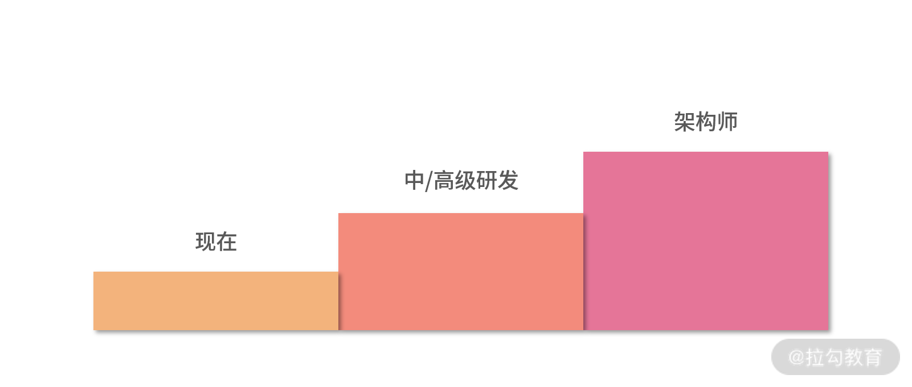
但是在进一步地追问后，大多数研发同学对自身技术发展的认知，仅停留在学习了哪种新的技术，掌握了哪种新的开发框架，觉得这样就能把技术做好，就能成为架构师。
可是现实情况是：你觉得技术满足应聘部门的要求，可还是面不到想要的职位。这其实与技术认知不足有很大关系，你达不到一个高级研发或者是架构师该有的思维 层次，在面试时，自然很难讲出自己的技术价值与亮点，就会影响面试竞争力。
而今天这一讲，我会从架构设计认知、分析问题的认知、能力边界认知三个角度出发，讲解研发工程师如何提高自己的技术认知，在面试的过程中更加体现价值和竞争力，进而获得满意的 Offer。
对架构设计的认知
我在开篇词中提到，面试官通常会在考察完候选人基础技术能力之后，再问一些关于系统架构设计上的问题，这时如果你回答得比较好，很容易得到面试官的认可，也会掩盖个别技术问题上回答的不足。
但实际上，很多研发同学对架构设计的掌握和理解是欠缺经验的，系统设计问题只能回答出表层的技术名词，落地没有实际经验，拔高没有理论支撑。那你怎么回答面试中的架构设计问题呢？
关于架构设计的问题，一定要立足于点、连接成线、扩散成面，用这样的思路回答才能让面试官满意。下面我就通过一个例子，来帮你理解什么是回答架构设计问题该有的认知。
例子
我曾面试过一名研发工程师，他在介绍过往经历时，称自己在重构一个负责交易流程的系统时，将其拆分成报价系统、促销系统，以及订单系统，而当时他们只有两个人负责交易系统的开发工作。
针对他的经历，我的问题是：你们只有两个人负责这个交易系统，为什么还要做系统架构拆分？而且拆分之后会带来其他的复杂度，你是怎么考虑的？
系统拆分的架构设计问题，在面试中很常见，候选人给出了四个层面的回答。
从订单系统层面来看，由于交易流程中的订单系统相对来说业务稳定，不存在很多的迭代需求，如果耦合到整个交易系统中，在其他功能发布上线的时候会影响订单系统，比如订单中心的稳定性。基于这样的考虑，需要拆分出一个独立的子系统。
从促销系统层面来看，由于促销系统是交易流程中的非核心系统，出于保障交易流程稳定性的考虑，将促销系统单独拆分出来，在发生异常的时候能让促销系统具有可降级的能力。
从报价系统层面来看，报价是业务交易流程中最为复杂和灵活的系统，出于专业化和快速迭代的考虑，拆分出一个独立的报价系统，目的就是为了快速响应需求的变化。
从复杂度评估层面来看，系统拆分虽然会导致系统交互更加复杂，但在规范了 API 的格式定义和调用方式后，系统的复杂度可以维持在可控的范围内。
这样的回答很好地表达了应聘者对系统设计的思考与理解。因为他说出了原有系统中关于订单、促销和报价功能耦合在一起带来的实际问题，这是立足于点，又从交易流程的角度做系统设计串联起三个系统的拆分逻辑，这是连接成线，最后从复杂度和成本考量的方向夯实了设计的原则，这是扩展成面。
案例分析
如果你是这名应聘者，会怎么回答呢？很多研发同学一提到架构设计就说要做拆分，将一个系统拆分成两个系统，将一个服务拆分成两个服务，甚至觉得架构就是做系统拆分，但其实并不理解拆分背后的深层原因，所以往往只能回答得比较表面，无法深入背后的底层设计逻辑，那这个问题的底层逻辑到底是什么呢？有这样四点。
- 为什么做架构拆分？通常最直接目的就是做系统之间解耦、子系统之间解耦，或模块之间的解耦。
- 为什么要做系统解耦？系统解耦后，使得原本错综复杂的调用逻辑能有序地分布到各个独立的系统中，从而使得拆封后的各个系统职责更单一，功能更为内聚。
- 为什么要做职责单一？因为职责单一的系统功能逻辑的迭代速度会更快，会提高研发团队响应业务需求的速度，也就是提高了团队的开发效率。
- 为什么要关注开发效率？研发迭代效率的提升是任何一家公司在业务发展期间都最为关注的问题，所以从某种程度上看，架构拆分是系统提效最直接的手段。
所以，架构拆分其实是管理在技术上提效的一种手段，认识到这一点后，就不难理解为什么很多架构师在做系统架构时，会做系统设计上的拆分，甚至认为架构的本质就是拆分了。
对分析问题的认知
在实际工作中，技术人员在做系统设计时需要与公司或部门的战略定位对齐，才能让你的技术有价值。因为对于系统技术架构升级的问题，业务方、管理者和技术人员的关注点是不同的。
- 业务方的诉求是在技术升级后，系统有能力迭代功能来满足市场的要求，所以关注点在系统能力。
- 管理者的诉求是在技术升级后，系统研发团队的开发效能得到提升，所以关注点在人效管理。
- 作为技术人员的你，需要找到自己做系统设计的立足点，来满足不同人对技术的诉求，而这个立足点通常就是系统设计原则。
所以你应该认识到，系统的设计原则不是乱提出来的，而是针对系统现阶段业务发展带来的主要矛盾提出，才会更有价值且被认可。
例子
之前我做过一个对原有老系统进行架构改造的系统设计，当时的背景是这样的。
早期，业务发展比较简单，团队规模也不是很大，单体系统可以支撑业务的早期规模，但当业务不断发展，团队规模越来越大时，之前的一个业务团队逐渐发展成了多个业务团队，这时每个业务团队都会提出自己的功能需求。
然而，系统现状仍然是单体架构，研发同学都在同一个系统里进行开发，使得系统逻辑复杂，代码耦合，功能迭代和交付变得非常缓慢，牵一发而动全身，研发同学都不敢轻易修改代码。
这个时期系统的主要矛盾就变成了：多人协作进行复杂业务，导致速度缓慢，但业务需求又快速迭代。说白了，就是研发效率不能匹配业务发展的速度，并且单靠加人不能解决问题。
对于这样的一个系统，此阶段的系统架构核心原则就不能随便定义为要保证高性能和高可用。
那么应该怎么做呢？针对这样的问题，我们需要对原有系统进行合理的系统边界拆分，让研发人员有能力提速，来快速响应需求变化，这就要求架构师对业务领域和团队人员有足够的了解。
类似这样的情况也是面试中经常出现的考题，比如面试官在问你历史项目经历的时候，要重点关注你是如何解决系统核心问题的，所以不要一张口就是高性能、高可用，这会让有经验的面试官觉得你很初级。
案例分析
面试中，研发人员在回答系统设计问题的时候，要根据系统所处阶段的主要矛盾来回答架构设计问题，在 20 世纪 60 年代，《人月神话》的作者就分析，软件复杂性来源于两点：本质复杂度和偶然复杂度。开发工具、开发框架、开发模式，以及高性能和高可用这些仅是偶然复杂性，架构最重要的是要解决本质复杂性，这包括人的复杂性和业务的复杂性。
技术是静态的，业务和用户是变化的，具体问题要从具体的业务领域出发。这时有人可能会说，我只想做技术，不想做业务，然而你会慢慢发现，在职业生涯中处理的最有价值的事情，一般都是利用技术解决了业务领域的某阶段的主要问题，这也是最复杂的。
而一个优秀的应聘者，在回答中应该向面试官展现出这样的技术认知。
对能力边界的认知
我在做研发的晋升评审时，常常会问候选人一个问题：你觉得一个高级研发工程师和一个架构师的区别在哪？ 这个问题很多研发同学回答得都不是很好，有些人说需要足够的技术经验，懂得高性能、高可用，也有些人说需要懂得管理，带过团队。
这些能力固然重要，但不是作为架构师最核心的能力。下面我通过一个例子，来帮你理解一个高级研发工程师和一个架构师的本质区别在哪儿。
例子
我们先来看一下互联网一些大厂的中高级研发工程师晋升架构师的标准，如下图所示：
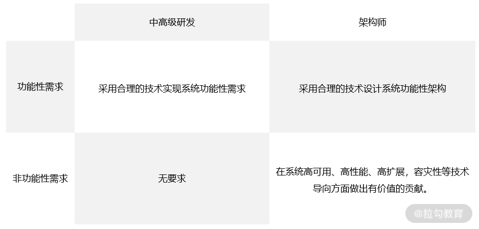
可以看出，晋升架构师需要掌握架构知识体系以及互联网的设计经验。
那么是不是可以这么理解：想要成为架构师，需要在掌握原有技术框架原理与开发基础之上，再懂得分布式高性能、高可用的设计知识，这样就可以了？如果你真是这么认为的，那就存在一个技术认知的问题。
可以这样思考，一个中级或高级研发工程师就不需要懂高性能、高可用的设计手段了吗？这些在网上应该也不难找到通用的解决方案，那么他就可以成为架构师了吗？
其实不然，掌握互联网架构设计中的高性能、高可用、高扩展这些非功能性设计方案是基础，但还要看你是站在哪个角色上考虑的。互联网大厂职级体系晋升的一个很重要规则，就是你所做的事情的边界，所能影响到的范围。
比如，研发工程师和架构师能驾驭的边界可以如下概括：
- 一个中高级研发工程师对系统的驾驭边界至少是模块或者子系统层面；
- 一个架构师对系统的驾驭边界至少是全系统层面；
- 一个高级架构师对系统的驾驭边界至少是某一领域层面。
案例分析
我们常说，屁股决定脑袋，不在那个位置就不会真正体会到那个位置带来的问题。没有触达多系统层面的设计，就不会掌握多系统层面带来的复杂度和解决问题的思考逻辑。但是往往研发同学意识不到这样的问题存在，即便能碰到一个通盘考虑架构设计的机会，但价值、眼界、认知的形成，也不是一朝一夕的事儿。
那么，你要怎么做才能让自己更快速地成长呢？你要在工作中养成归纳总结的习惯，形成自己的知识体系，沉淀自己的方法论，提高自己的认知能力，并且跳出舒适区，多争取扩展自己能驾驭系统的边界的机会。
在接下来的课程中，我会基于架构设计面试考题的角度，在解决方案、原理理解、实践经验，以及知识体系和认知能力等方面，帮你提高应对架构设计问题的能力。
总结
我在今天的课程中，通过三个案例为你讲解了研发工程师在面试中如何提高竞争力，可以总结为三点。
- 首先要提高你对系统架构设计的认知能力，一个好的架构师的架构设计不是仅仅停留在技术解决方案上。
- 其次要提高你分析系统问题的认知能力，做架构设计要具备根据现阶段的主要矛盾来分析问题的能力。
- 最后你要扩大自己能够驾驭系统的边界，因为只有这样才能遇到之前没经历过的问题层次，注意我这里说的是问题层次，而不是问题数量。
02 研发工程师如何用架构师视角回答架构设计方案？
今天这一讲，我想跟你聊一聊如何用架构师的视角进行技术面试。
面试时你是否常被问到这样的问题：“你之前是如何设计这个系统（或子系统/模块/功能）的？请介绍你的思路。”
很多研发同学在听到类似的面试题时，往往忽略“系统设计思路”关键词，而是陷入某个技术点细节里，让面试官听得一头雾水。这样即使技术再好，面试官也很难给你打高分，更可能认为你的设计能力不足，没有全局思维。
而要想答得更好，你要用架构师的视角回答，即从全局技术视角阐述设计的过程。接下来我会通过一个案例，讲解如何从全局技术视角介绍自己的技术方案。
案例背景
在电商中，当用户发表一条商品评论，后台的逻辑是点评系统会调用一系列的远程 API 接口，如调用风控系统、广告系统、消息系统……几个甚至十几个系统的接口。
在业务建设之初，考虑到快速开发与上线，商品评论发布是通过同步 RPC（Remote Procedure Call，远程过程调用）远程调用各系统接口完成的。这种方式在系统少、逻辑简单的阶段很符合实际情况的设计。
但随着业务快速发展，通过 RPC 同步调用的问题逐渐暴露出来。由于过多地依赖其他系统，导致评论发布的接口性能很低，可用性也容易受到其他系统影响。而且每当点评系统需求上线时，其他系统都需要跟着进行联调测试，导致需求迭代速度缓慢。 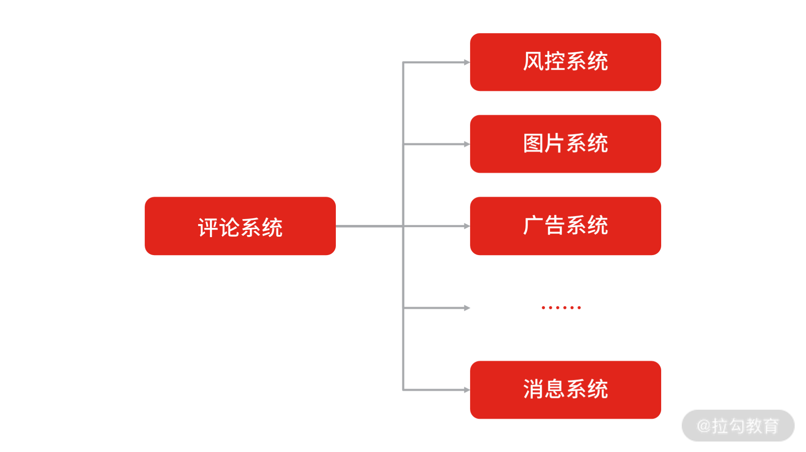
系统
在做系统架构升级改造时，如果你有互联网设计理念，会很容易想到问题在于系统间的耦合度太高。解决办法就是采用异步化解耦，从而通过引入 MQ 消息管道，在架构上进行系统业务逻辑拆分，将原本强依赖的系统间的同步 RPC 调用变成异步消息触发，如下面图片中的架构所示：
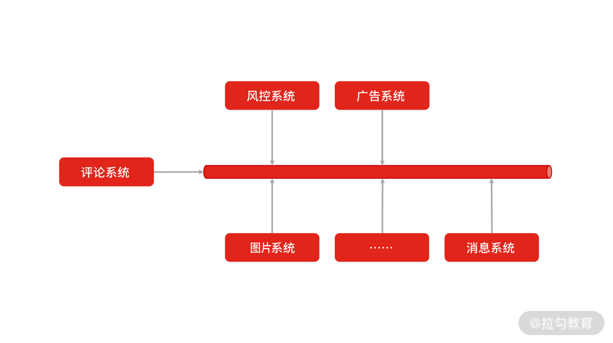
架构
案例分析
对于上面的案例，假设你是应聘者，当被问“如何做这个点评系统的改造？”时，你会怎么回答？你会不会直截了当地说“我引入了 MQ 消息队列，做了系统解耦，采用异步消息通知的方式来触发系统调用”呢？
在互联网系统设计方案如此透明的今天，随便在网上搜一下都会有大量类似的解决方案。以上回答不但不会让面试官满意，甚至有可能令人怀疑你的项目经历的真实性。
作为研发工程师，正确的回答方式是要让面试官知道你解决问题的思维。相比一上来就说用了什么技术，阐述解决思维更能证明你的能力，因为解决技术问题的方法有很多，这是“术”，但解决技术问题的底层思维逻辑是一样的，这是“道”。
面对此类问题，我总结了如下四个层面的答案：
- 谈复杂来源；
- 谈解决方案；
- 谈评估标准；
- 说技术实现。
问题解答
我还是拿上面的例子来分析如何回答此类问题。
复杂来源
之所以要先分析系统的复杂度，是因为只有正确分析后才能明确设计原则，进而设计架构方案，整体项目才不会找错方向。
如果一个系统本来因业务逻辑复杂导致功能耦合严重，你却设计了一个 TPS（Transactions Per Second，每秒事务处理量）达到 10000/秒 的高性能架构，那么即使架构性能再优秀，也没有现实意义，因为技术设计没有解决主要问题的复杂度。这是很多研发工程师的通病，设计偏离了方向，只是为了设计而设计。
那么如何正确评估系统的复杂度呢？ 互联网软件通常分为功能性的复杂度和非功能性的复杂度两种。我将分析过程制作成了一张图片。

复杂度评估
从功能性复杂度方面来看，你可以从案例中得知，产品业务发展快速、系统越来越多、协作效率越来越低。作为系统负责人，你敏锐地发现问题根源在架构上各业务子系统强耦合。于是你引入消息队列解耦各系统，这是系统业务领域带来的本质上的复杂度，也就是功能性的复杂度，解决的是系统效率的问题。
此外，对于互联网系统设计，还需要考虑非功能性的复杂度，例如高性能、高可用和扩展性等的复杂度的设计。
从非功能性复杂度方面来看，我们假设系统用户每天发送 100 万条点评，那么点评的消息管道一天会产生 100 万条消息，再假设平均一条消息有 10 个子系统读取，那么每秒的处理数据，即点评消息队列系统的 TPS 和 QPS（Queries Per Second，每秒查询次数）就分别是 11（1000000/606024）和 115（10000000/606024）。
不过系统的读写不是完全平均的，设计的目标应该以峰值来计算，即取平均值的 4 倍。于是点评消息队列系统的 TPS 变成了 44，QPS 变成了 460，这个量级的数据意味着并不需要设计高性能架构方案。
接着还要考虑业务规模发展。架构设计的目标应该满足未来业务增长，我们把未来业务增长的预估峰值设定为目前峰值的 4 倍，这样最终的性能要求分别是：TPS 为 176，QPS 是 1840。这样的读写指标还达不到系统压测的性能基线，所以可以确定的是点评系统的复杂度并不在高性能问题上。
对于点评系统来说，还需要考虑高可用的问题。假设点评系统的消息队列挂掉，将导致用户评论发送失败，当然在用户体验层面，解决方式可以在页面端提示用户重新操作，但如果问题影响到了点评消息的读取，导致评论没有走风控策略，就会造成严重的影响。所以高可用性是点评系统的设计复杂度之一，包括点评写入、点评存储，以及点评消息的读取，都需要保证高可用性。
为了方便理解非功能性的复杂度，我只分析了“高性能”和“高可用”这两点，在实际应用中，不同的公司或者团队可能还有其他方面的复杂度分析。例如有的公司会考虑安全性，有的公司会考虑成本等。
所以综合分析来看，点评系统改造的复杂度来源于两点。
- 功能性复杂度：要解决业务发展带来的系统耦合、开发效率缓慢问题。
- 非功能性复杂度：要保证系统的高可用性。
解决方案
在确定了系统面临的主要复杂度问题后，就有了明确的方案设计目标，这时就可以开始进行架构方案设计了。我同样会结合本文的案例场景，谈谈点评系统消息管道的架构设计解决方案。
- 采用开源的 MQ 消息管道。目前 MQ 消息管道有很多开源解决方案，比如 Kafka、RocketMQ、RabbitMQ 等。在实际项目中，你可以根据不同的应用场景选择合适的成熟开源消息队列方案，这是很多公司常用的做法。
- 采用开源的 Redis 实现消息队列。方案 1 虽然应用了开源 MQ 实现点评消息的通信，但是因为引入一个消息中间件就会带来运维成本，所以方案 2 可以基于轻量级的 Redis 实现，以降低系统的维护成本和实现复杂度。
- 采用内存队列 + MySQL 来实现。方案 2 中虽然应用了较为轻量级的 Redis 来实现，但是还需要引入一个缓存系统，同样也会带来运维成本，所以方案 3 是直接基于 MySQL 实现，即基于内存队列的方式，异步持久化到数据库，然后通过定时任务读取 MySQL 中的消息并处理。
一般情况，你至少要设计两到三套备选方案，考虑通过不同的技术方式来解决问题。方案设计不用过于详细，而是要确定技术的可行性和优缺点。
评估标准
设计完三套解决方案之后，摆在眼前的问题就是需要选择最合适的一个。这就需要一套评估标准了。
在互联网软件架构中，架构师常常会把一些通用的设计原则写到设计文档中，比如设计松耦合、系统可监控，这些原则似乎不常用，但好的架构师会通过设计原则来控制项目的技术风险。比如系统无单点，限制了系统技术方案不可出现单点服务的设计；再如系统可降级，限制了系统有具备降级的能力，进而约束了开发人员需要设计数据兜底的技术方案。
这些看似不重要的设计原则，其实是评估架构解决方案的重要手段。做系统架构，需要站在更高的层面考虑系统的全局性关注点，比如性能、可用性、IT 成本、投入资源、实现复杂度、安全性、后续扩展性等。这在不同场景的不同阶段会起到决定性作用。
那么针对案例中的点评系统来说，要如何评估方案呢？这要从点评系统的复杂度来源进行评估。
- 点评系统功能性复杂度
点评系统的功能性复杂度问题，本质上是随着业务发展带来的系统开发效率问题。解决这个问题要试着站得更高一些，以部门负责人的视角，考虑现有研发团队的能力素质、IT 成本、资源投入周期等因素是否匹配上面三种架构解决方案。
- 点评系统非功能性复杂度
为了解决系统的高可用，可以参考三个设计原则。
第一个是系统无单点原则。首先要保证系统各节点在部署的时候至少是冗余的，没有单点。很显然三种设计方案都支持无单点部署方式，都可以做到高可用。
第二个是可水平扩展原则。对于水平扩展，MQ 和 Redis 都具有先天的优势，但内存队列 + MySQL 的方式则需要做分库分表的开发改造，并且还要根据业务提前考虑未来的容量预估。
第三个是可降级原则。降级处理是当系统出现故障的时候，为了系统的可用性，选择有损的或者兜底的方式提供服务。
常用手段主要有三种。
- 限流，即抛弃超出预估流量外的用户。
- 降级，即抛弃部分不重要的功能，让系统提供有损服务，如商品详情页不展示宝贝收藏的数量，以确保核心功能不受影响。
- 熔断，即抛弃对故障系统的调用。一般情况下熔断会伴随着降级处理，比如展示兜底数据。
针对案例场景中三个解决方案的降级策略，在一般的情况下，我们默认数据库是不可降级的，MQ 和 Redis 都可以通过降级到数据库的方式做容灾处理。所以案例中的三个解决方案，MQ 和 Redis 要考虑降级到 MySQL 或其他方式，这里就还需要根据情况投入降级的开发成本。
对于本节课的案例我不评价哪个更好，你在多个解决方案中做选择时，不要陷入某个纯粹技术点的优劣之争，那样很难有结果，越大的项目越明显。 通常来说，方案没有优劣之分，而是要看哪个更适合当下的问题，只要架构满足一定时期内的业务发展就可以。
你要知道，作为技术人，考虑问题的方式要比具体的选型结果更为重要，这是面试的加分点。
技术实现
在确定了具体的架构解决方案之后，需要进一步说明技术上的落地实现方式和深层原理，如果你最终选择基于 Redis 来实现消息队列，那么可以有几种实现方式？各自的优缺点有哪些？对于这些问题，要做到心里有数。比如，基于 Redis List 的 LPUSH 和 RPOP 的实现方式、基于 Redis 的订阅或发布模式，或者基于 Redis 的有序集合（Sorted Set）的实现方式，你可以自行搜索，我不再赘述。
总结
最后，我把今天的“四步回答法”做个总结，加深每一步你需要掌握的注意点。
- 在回答系统复杂度来源的时候，要注意结合具体的业务场景和业务发展阶段来阐述。业务场景表明了业务的独特性，发展阶段表明了业务的成熟度，因为同一业务场景在不同阶段产生的矛盾也是不同的。
- 在回答解决方案的时候，有价值的解决方案一定是建立在明确复杂度来源基础之上的。所以在设计架构的时候才分主要问题和次要问题，主要问题是必须要解决的点，次要问题可以根据实际情况进行取舍。
- 在回答如何评估架构方案时，至少要从功能性和非功能性两个角度出发判断方案的合理性。对于很难决策的方案，要从更高的视角（比如技术负责人、业务负责人的角度）进行考量。
- 在技术实现的细节上，要尽量讲出技术的实现原理，不要浮于表面的框架组合。
到这里，我们已经知道了如何用架构师的视角进行技术面试，那么你现在理解什么是架构师视角了吗？其实简单一句话，所谓的架构师视角就是全局的视角，这里的全局包括空间全局和时间全局，在空间全局上你要看到整个系统的领域边界，在时间全局上你要看到整个系统的发展周期。
03 面试官如何考察与 CAP 有关的分布式理论？
在互联网技术面试中，考察分布式技术已经是面试的标配了。打开拉勾招聘，你能发现，一线互联网公司在对候选人的要求中都有“分布式系统设计”这一关键词。无论你是程序员，还是架构师，都要掌握分布式系统设计。那么从今天起，我用 4 讲的时间带你打卡分布式技术的面试内容。今天这一讲，我们就先来看一看怎么回答分布式的基础理论，才能抓住面试官的心。
案例背景
CAP 理论是分布式系统中最核心的基础理论，虽然在面试中，面试官不会直白地问你 CAP 理论的原理，但是在面试中遇到的分布式系统设计问题，都绕不开你对 CAP 的理解和思考。
而且在面试中，针对面试不同岗位的候选者，面试官的要求也会不一样，要求你回答的深度也不一样。所以在这一讲中，我会针对初中级研发工程师和高级研发工程师两个不同的角度，分析面试思路。
案例分析
相信只要学习过分布式技术的相关知识，基本上都知道 CAP 理论指的是什么：C（Consistency）是数据一致性、A（Availability）是服务可用性、P（Partition tolerance）是分区容错性。C、A、P 只能同时满足两个目标，而由于在分布式系统中，P 是必须要保留的，所以要在 C 和 A 间进行取舍。假如要保证服务的可用性，就选择 AP 模型，而要保证一致性的话，就选择 CP 模型。
很多候选者如果发现面试题（比如“为了数据容灾，我们会做数据的主从备份，那么主从节点的数据一致性对调用端有什么影响呢？”）涉及了对“CAP 的理解和思考”，会下意识地做出类似的答案：“ CAP 理论描述了在出现网络分区的情况下，要在 C 和 A 之间做取舍，所以会影响站在调用端的视角看系统是不可用的”。如果是我的话，大概会给个及格分，并认为这样的回答，只能证明你有准备，不能证明你有能力。
因为在面试中遇到理论问题时，单纯做浮于表面的概念性阐述，很难向面试官证明你的技术能力。 面试官会觉得你是一个刚接触分布式系统，或者对分布式系统理解不够深入的研发，如果这恰好是你第一个面试题，会直接影响面试官对你的第一印象，甚至影响你的定级。
从我的经验出发，如果你想答得更好，你需要先掌握 CAP 的原理、实践经验、技术认知，然后再结合具体的面试题具体分析。
问题解答
理解原理
现在有一个分布式系统 A，它有一个副本 A1，在正常情况下，客户端 Client 写数据到系统 A，然后数据从 A 节点同步到 A1 节点，再返回给 Client 成功状态。 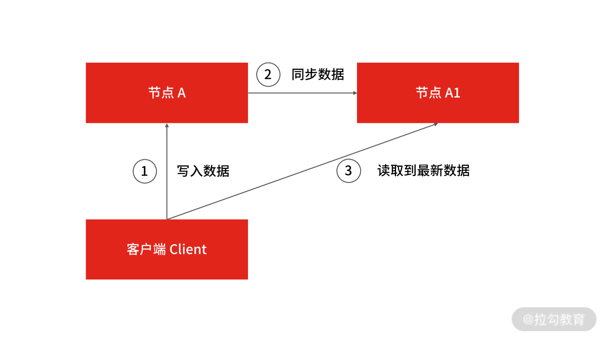 这时，客户端 Client 从任何节点 A 或 A1 读取数据，都能读取到最新写入的数据，说明 A 和 A1 的数据是一致的，并且 A 和 A1 也都是可用的。
但由于网络是不可靠的，节点 A 和 A1 的网络随时会因为中断而出现分区。所谓网络分区就是由于网络不通导致节点 A 和 A1 被隔离在不同的网络子集中，此时节点 A 的数据就不能及时同步到节点 A1 中了。
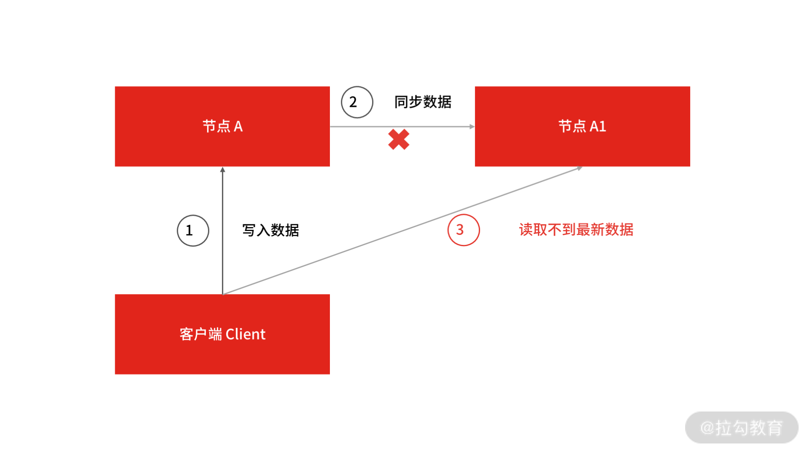
在分布式系统中，由于网络问题导致的网络分区是常态。也就是说出现网络分区时，根据 CAP 理论，需要在 A 和 C 中进行取舍，即要么保证系统的可用性，要么保证数据一致性。
这里你要注意了，上面的例子有个大前提，就是系统出现了网络分区，但实际情况是，在绝大多数时间里并不存在网络分区（网络不会经常出现问题）。那么还要进行三选二吗（CP 或者 AP）？
其实，不同的分布式系统要根据业务场景和业务需求在 CAP 三者中进行权衡。CAP 理论用于指导在系统设计时需要衡量的因素，而非进行绝对地选择。
当网络没有出现分区时，CAP 理论并没有给出衡量 A 和 C 的因素，但如果你做过实际的分布式系统设计，一定会发现系统数据同步的时延（Latency），即例子中节点 A 同步数据到节点 A1 的时间才是衡量 A 和 C 最重要的因素，此时就不会有绝对的 AP 模型还是 CP 模型了，而是源于对实际业务场景的综合考量。
因此，才会有如 PACELC 这样的新模型优化原有的 CAP 理论，理论指导实践，实践优化理论。根据 PACELC 模型的定义，如果有网络分区产生，系统就必须在 A 和 C 之间取得平衡，否则（Else，即 PACELC 中的 E）当系统运行在无网络分区情况下，系统需要在 L（延迟）和 C 之间取得平衡。
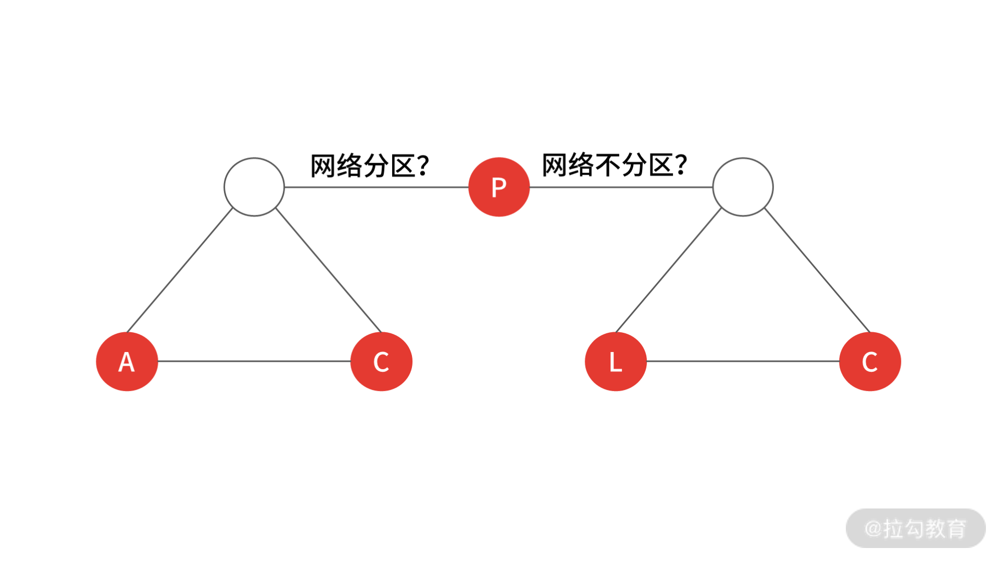
PACELC
但理解到这个程度还不够，你还需要结合落地经验进行证明。
实践经验
你要意识到，互联网分布式的设计方案是数据一致性和系统可用性的权衡，并不是非此即彼，这一点尤为重要。所以即使无法做到强一致性（简单来讲强一致性就是在任何时刻所有的用户查询到的数据都是最新的），也可以根据自身的业务特点，采用适当的方式来使系统达到最终一致性。
这时就要引出 BASE 理论，它是 CAP 理论的延伸。BASE 是 Basically Available（基本可用）、Soft State（软状态）和 Eventually Consistent（最终一致性）三个单词的简写，作用是保证系统的可用性，然后通过最终一致性来代替强一致性，它是目前分布式系统设计中最具指导意义的经验总结。那么在实际项目中，你如何通过 BASE 理论来指导设计实践呢？
BASE 中的基本可用指的是保障核心功能的基本可用，其实是做了“可用性”方面的妥协，比如：
- 电商网站在双十一大促等访问压力较大的时候，关闭商品排行榜等次要功能的展示，从而保证商品交易主流程的可用性，这也是我们常说的服务降级；
- 为了错开双十一高峰期，电商网站会将预售商品的支付时间延后十到二十分钟，这就是流量削峰；
- 在你抢购商品的时候，往往会在队列中等待处理，这也是常用的延迟队列。
软状态和最终一致性指的是允许系统中的数据存在中间状态，这同样是为了系统可用性而牺牲一段时间窗内的数据一致性，从而保证最终的数据一致性的做法。
目前这种处理数据的方式几乎成了互联网的标配设计模式，最经典的例子是在用户下单的时候不需要真正地扣减库存，而是仅在前台计个数，然后通过异步任务在后台批量处理。
如果你想应聘的是初中级研发工程师，那么结合上述思路，从理论理解到落地实践，你已经可以把 CAP 理论答得较为清楚了。回答问题的逻辑可以参考我给出的建议：
- 先充分理解理论原理，不能仅浮在概念上（这一点需要你课下下功夫）；
- 其次需要有自己的思考，表现出你思考能力的不同；
- 然后将理论结合于实践，讨论实际中处理问题时的思考逻辑。
技术认知
如果你应聘的是高级研发工程师或架构师，在回答时，还要尽可能地展示知识体系和技术判断力，这是这两个岗位的基本素质。 因为分布式技术错综复杂，各种技术又相互耦合，在面试中，如果你能通过一个 CAP 理论的知识点，扩展出一个脉络清晰的分布式核心技术知识体系，就会与其他人拉开差距。
分布式系统看起来就像一个计算机。计算机包括五大体系结构（即冯诺依曼结构），它有五大部件：分别是控制器、运算器、存储器、输入及输出。你可以这么理解：一个分布式系统也包含这五大部件，其中最重要的是计算与存储。计算与存储由一系列网络节点组成，每个节点之间的通信就是输入与输出，各节点之间的调度管理就是控制器。
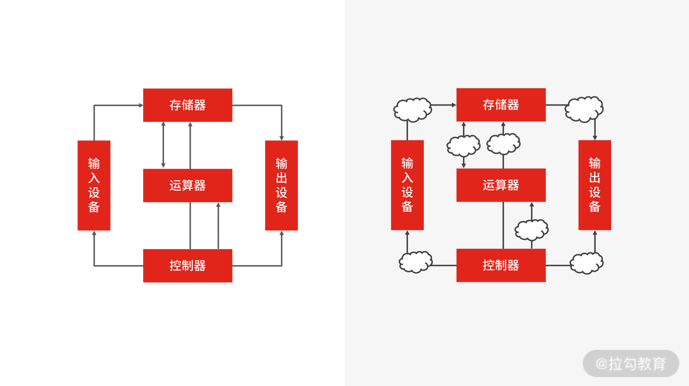
分布式架构技术组成
这么看来，分布式系统就像一个网络计算机，它的知识体系包括四个角度：
- 存储器，即分布式存储系统，如 NoSQL 数据库存储；
- 运算器，即分布式计算，如分布式并行计算；
- 输入输出，即分布式系统通信，如同步 RPC 调用和异步消息队列；
- 控制器，即调度管理，如流量调度、任务调度与资源调度。
你可以从这四个角度来概括分布式系统的知识体系（每个分支的具体子知识体系和知识点，我会在后面的课程中一一为你讲解）。
那么具体的解题思路是什么呢？ 还是以“Redis 是否可以作为分布式锁”为例，咱们一起来分析一下问题背后隐藏的分布式理论知识，以及作为高级研发工程师的解题思路。
解题思路
- 说明现实存在的问题
一般使用 setnx 方法，通过 Redis 实现锁和超时时间来控制锁的失效时间。但是在极端的情况下，当 Reids 主节点挂掉，但锁还没有同步到从节点时，根据哨兵机制，从就变成了主，继续提供服务。这时，另外的线程可以再来请求锁，此时就会出现两个线程拿到了锁的情况。
- 回归理论的指导
根据对 CAP 理论的理解，Redis 的设计模型是 AP 模型，而分布式锁是一个 CP 场景，那么很明显，将 Redis 这种 AP 模型的架构应用于 CP 的场景，在底层的技术选型上就是错误的。
- 扩展到知识体系
Redis 属于分布式存储系统，你的头脑里就要有对分布式存储系统领域的知识体系。思考它的数据存储、数据分布、数据复制，以及数据一致性都是怎么做的，用了哪些技术来实现，为什么要做这样的技术或算法选型。你要学会从多维度、多角度去对比、分析同一分布式问题的不同方法，然后综合权衡各种方法的优缺点，最终形成自己的技术认知和技术判断力。
- 有技术的判断力
比如通过 Redis，你能想到目前分布式缓存系统的发展现状以及技术实现，如果让你造一个“Redis”出来，你会考虑哪些问题等。虽然在实际工作中不推荐重复“造轮子”，但在面试中要表现出自己具备“造轮子”的能力。
总结
CAP 理论看似简单，但在面试中，对它的理解深度可以从侧面反映出你对分布式系统的整体理解能力和驾驭能力。
所以你不但要掌握如何在面试中回答案例中 CAP 原理的问题，而且还要掌握回答问题的思路，以后遇到类似的理论性知识的考察，都可以从三个层面回答。
- 展示理论深度。你可以从一个熟知的知识点出发，深入浅出地回答，比如它的工作原理、优劣势、适用场景等。
- 结合落地经验。你不能仅停留在理论理解，还要结合落地方案的技术实现，这样才能体现你的技术闭环思维。
- 展示知识体系，这是任何一个程序员向上发展的基础能力。理论深度和落地经验体现了作为程序员的基本素质，而知识体系和技术判断力则体现了你是否达到架构师的能力边界。
04 亿级商品存储下，如何深度回答分布式系统的原理性问题？
上一讲，我结合 CAP 理论为你讲解了分布式系统的原理性问题，并通过理论引出了在做分布式系统设计时需要考虑和解决的复杂点，然后为你梳理了在分布式系统中，你需要掌握的技术知识体系，以及该具备的架构师思维。
这一讲，我将以“亿级商品存储设计”为背景，深度考察你对分布式原理的掌握程度，其中会涉及海量数据的存储、分片、复制，以及一致性共识算法的答题思路。
案例背景
先来回顾一下，你在面试时，有没有被问到以下几个问题：
- 如何设计一个支持海量商品存储的高扩展性架构？
- 在做分库分表时，基于 Hash 取模和一致性 Hash 的数据分片是如何实现的？
- 在电商大促时期，如何对热点商品数据做存储策略 ？
- 强一致性和最终一致性的数据共识算法是如何实现的 ？
在分布式系统中，核心的考察点包括了分布式系统中数据的存储、分布、复制，以及相关协议和算法，上述问题都与此相关。而在实际面试中，面试官通常会提出一个业务场景，如“如何设计海量商品数据的存储？”然后在候选者回答问题的过程中，通过一环扣一环的提问，把各考察点串联在一起。
案例分析
在互联网业务场景下，为了解决单台存储设备的局限性，会把数据分布到多台存储节点上，以此实现数据的水平扩展。既然要把数据分布到多个节点，就会存在数据分片的问题。数据分片即按照一定的规则将数据路由到相应的存储节点中，从而降低单存储节点带来的读写压力。常见的实现方案有 Hash（哈希分片）与 Range（范围分片）。
明确了如何分片后，就需要对数据进行复制，数据复制会产生副本，而副本是分布式存储系统解决高可用的唯一手段，这也是我们熟知的主从模式，又叫 master-slave。在分布式存储系统中，通常会设置数据副本的主从节点，当主节点出现故障时，从节点可以替代主节点提供服务，从而保证业务正常运行。
那么如何让从节点替代主节点呢？这就涉及数据一致性的问题了（只有在主从节点数据一致的情况下，才能进行主从替换）。
关于数据一致性，通常要考虑一致性强弱（即强一致性和最终一致性的问题）。而要解决一致性的问题，则要进行一系列的一致性协议：如两阶段提交协议（Two-Phrase Commit，2PC）、Paxos 协议选举、Raft 协议、Gossip 协议。
所以分布式数据存储的问题可以分成：数据分片、数据复制，以及数据一致性带来的相关问题。接下来，我会针对这些问题，提炼出面试中最为核心和高频的考察点。
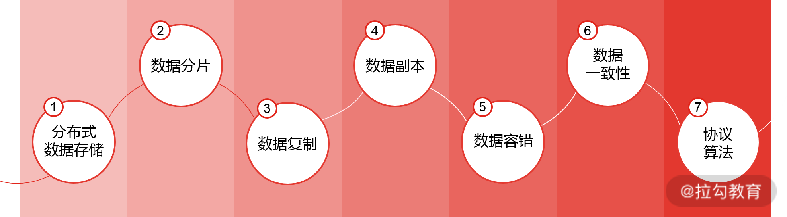
案例解答
就如我开篇提到的，面试官往往会把“案例背景中”的四个问题串联到具体的场景中，以具体的场景设问，比如“假设你是一家电商网站的架构师，现在要将原有单点上百 G 的商品做数据重构，存储到多个节点上，你会如何设计存储策略 ？”
因为是商品存储扩容的设计问题，很容易想到做数据的分库分表，也就是重新设计数据的分片规则，常用的分片策略有两种，即 Hash（哈希）分片和 Range（范围）分片。从这一点出发会考察你Hash（哈希）分片的具体实现原理。
商品表包括主键、商品 ID、商品名称、所属品类和上架时间等字段。如果以商品 ID 作为关键字进行分片，系统会通过一个 Hash 函数计算商品 ID 的 Hash 值，然后取模，就能得到对应的分片。模为 4 就表示系统一共有四个节点，每个节点作为一个分片。
假设Hash 函数为 “商品 ID % 节点个数 4”，通过计算可以得到每个数据应该存入的节点：计算结果为 0 的数据存入节点 A；结果为 1 的数据存入节点 B；结果为 2 的数据存入节点 C；计算为 3 的数据存储节点 D。

商品数据 Hash 存储
可以看出，Hash 分片的优点在于可以保证数据非常均匀地分布到多个分片上，并且实现起来简单，但扩展性很差，因为分片的计算方式就是直接用节点取模，节点数量变动，就需要重新计算 Hash，就会导致大规模数据迁移的工作。
这时，就会延伸出第二个问题，如何解决 Hash 分片的缺点，既保证数据均匀分布，又保证扩展性？
答案就是一致性 Hash ：它是指将存储节点和数据都映射到一个首尾相连的哈希环上。存储节点一般可以根据 IP 地址进行 Hash 计算，数据的存储位置是从数据映射在环上的位置开始，依照顺时针方向所找到的第一个存储节点。
在具体操作过程中，通常会选择带有虚拟节点的一致性 Hash。假设在这个案例中将虚拟节点的数量设定为 10 个，就形成 10 个分片，而这 10 个分片构成了整个 Hash 空间。现在让 A 节点对应虚拟节点 0 ~ 3，B 节点对应虚拟节点 4 ~ 6，C 节点对应虚拟节点 7 ~ 8，D 节点对应虚拟节点 9。
同样根据哈希函数为 “商品 ID % 节点个数 10”得到每一个商品在 Hash 环上的位置，然后根据顺时针查找最近的存储节点，即数据实际映射的位置。计算结果为：0 ~ 3 的数据存入节点 A；结果为 4 ~ 6 的数据存入节点 B；结果为 7 ~ 8 的数据存入节点 C；计算为 9 的数据存储节点 D。
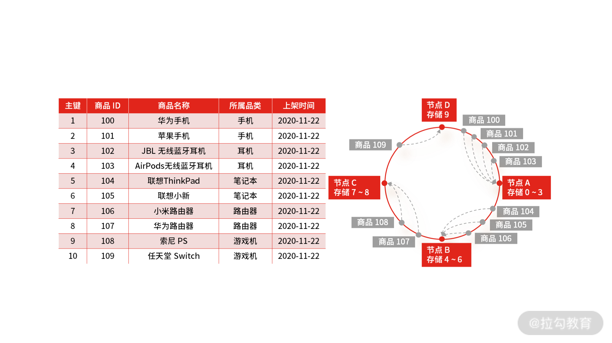
商品一致性Hash存储
当我们新增一台服务器，即节点 E 时，受影响的数据仅仅是新服务器到所处环空间中前一台服务器（即沿着逆时针方向的第一台服务器）之间的数据。结合我们的示例，只有商品 100 和商品 101 从节点 A 被移动到节点 E，其他节点的数据保持不变。此后，节点 A 只存储 Hash 值为 2 和 3 的商品，节点 E 存储 Hash 值为 0 和 1 的商品。

商品数据迁移
一致性 Hash 分片的优点是数据可以较为均匀地分配到各节点，其并发写入性能表现也不错。如果你应聘的是初级研发工程师，面试官通常不会追问下去，但是应聘中高级别研发的话，这样的回答还不够，你还要进一步阐述对分布式数据存储的理解。
要知道，虽然一致性 Hash 提升了稳定性，使节点的加入和退出不会造成大规模的数据迁移，但本质上 Hash 分片是一种静态的分片方式，必须要提前设定分片的最大规模，而且无法避免单一热点问题， 某一数据被海量并发请求后，不论如何进行 Hash，数据也只能存在一个节点上，这势必会带来热点请求问题。比如案例中的电商商品，如果某些商品卖得非常火爆，通过 Hash 分片的方式很难针对热点商品做单独的架构设计。
所以，如果面试官想深入考核你对分布式数据存储的架构设计，一般会追问你：如何解决单一热点问题？
答案是做 Range（范围）分片。 与 Hash 分片不同的是，Range 分片能结合业务逻辑规则，例如，我们用 “Category（商品类目）” 作为关键字进行分片时，不是以统一的商品一级类目为标准，而是可以按照一、二、三级类目进行灵活分片。例如，对于京东强势的 3C 品类，可以按照 3C 的三级品类设置分片；对于弱势品类，可以先按照一级品类进行分片，这样会让分片间的数据更加平衡。

按业务品类分片
要达到这种灵活性，前提是要有能力控制数据流向哪个分区，一个简单的实现方式是：预先设定主键的生成规则，根据规则进行数据的分片路由，但这种方式会侵入商品各条线主数据的业务规则，更好的方式是基于分片元数据（不过架构设计没有好坏，只有适合与否，所以在面试场景中，我建议你用擅长的解决方案来回答问题）。
基于分片元数据的方式，就是调用端在操作数据的时候，先问一下分片元数据系统数据在哪，然后在根据得到的地址操作数据。元数据中存储的是数据分片信息，分片信息就是数据分布情况。在一个分布式存储系统中，承担数据调度功能的节点是分片元数据，当客户端收到请求后，会请求分片元数据服务，获取分片对应的实际节点地址，才能访问真正的数据。而请求分片元数据获取的信息也不仅仅只有数据分片信息，还包括数据量、读写 QPS 和分片副本的健康状态等。
这种方式的灵活性在于分片规则不固定，易扩展，但是高灵活性就会带来高复杂性，从存储的角度看，元数据也是数据，特殊之处在于它类似一个路由表，每一次请求都要访问它，所以分片元数据本身就要做到高可用。如果系统支持动态分片，那么分片信息的变更数据还要在节点之间进行同步，这又带来多副本之间的一致性问题，以此延伸出如何保证分片元数据服务的可用性和数据一致性？
最直接的方式是专门给元数据做一个服务集群，并通过一致性算法复制数据。在实现方式上，就是将元数据服务的高可用和数据一致性问题转嫁给外围协调组件，如 ETCD 集群，这样既保证了系统的可靠，数据同步的成本又比较低。知道了设计思路，那具体的架构实现上怎么做 ？
- 给分片元数据做集群服务，并通过 ETCD 存储数据分片信息。
- 每个数据存储实例节点定时向元数据服务集群同步心跳和分片信息。
- 当调用端的请求过来时，元数据服务节点只需要做好高可用和缓存即可。

元数据分片
掌握了这些知识后，你基本可以应对大多数公司对于研发工程师在数据架构设计上考点了，但如果面试官想挖掘你的能力，还会深入聊到共识算法，在一致性共识算法和最终一致性共识算法方面提出类似的问题，比如， ETCD 是如何解决数据共识问题的？为什么要选择这种数据复制方式呢？
对于这类问题，你要从一致性算法原理层面解答，思路是：清楚 ETCD 的共识算法是什么，还有哪些常用的共识算法，以及为什么 ETCD 会做这样的选型。
ETCD 的共识算法是基于 Raft 协议实现的强一致性算法，同类的强一致性算法还有 Paxos，在面试过程中，面试官很可能让你从自己的角度理解一下这两个算法，当然也会直接问：为什么没有选择 Paxos 而选择了 Raft ？这个问题对应聘高级研发的同学来讲很常见，主要考核你对以下内容的理解：
- Paxos 算法解决了什么问题？
- Basic Paxos 算法的工作流程是什么？
- Paxos 算法和 Raft 算法的区别又是什么？
在分布式系统中，造成系统不可用的场景很多，比如服务器硬件损坏、网络数据丢包等问题，解决这些问题的根本思路是多副本，副本是分布式系统解决高可用的唯一手段，也就是主从模式，那么如何在保证一致性的前提下，提高系统的可用性，Paxos 就被用来解决这样的问题，而 Paxos 又分为 Basic Paxos 和 Multi Paxos，然而因为它们的实现复杂，工业界很少直接采用 Paxos 算法，所以 ETCD 选择了 Raft 算法 （在面试过程中，面试官容易在这里设置障碍，来对候选者做技术分层）。
Raft 是 Multi Paxos 的一种实现，是通过一切以领导者为准的方式，实现一系列值的共识，然而不是所有节点都能当选 Leader 领导者，Raft 算法对于 Leader 领导者的选举是有限制的，只有最全的日志节点才可以当选。正因为 ETCD 选择了 Raft，为工业界提供了可靠的工程参考，就有更多的工程实现选择基于 Raft，如 TiDB 就是基于 Raft 算法的优化。
如果你应聘的部门非基础架构部，那么对于中高级别研发工程师来说，掌握以上问题的主线知识基本可以应对面试了（我没有过多涉及算法细节，因为每一个算法都可以单独花一讲，而我侧重讲解分析问题，答题的思维，你可以在课下夯实算法基础，并在留言区与我互动）。
如果把问题设计的极端一些，考察你对最终一致性算法的掌握，还可以有一种思路：分片元数据服务毕竟是一个中心化的设计思路，而且基于强一致性的共识机制还是可能存在性能的问题，有没有更好的架构思路呢？
既然要解决可用性的问题，根据 Base 理论，需要实现最终一致性，那么 Raft 算法就不适用了，因为 Raft 需要保证大多数节点正常运行后才能运行。这个时候，可以选择基于 Gossip 协议的实现方式。
Gossip 的协议原理有一种传播机制叫谣言传播，指的是当一个节点有了新数据后，这个节点就变成了活跃状态，并周期性地向其他节点发送新数据，直到所有的节点都存储了该条数据。这种方式达成的数据一致性是 “最终一致性”，即执行数据更新操作后，经过一定的时间，集群内各个节点所存储的数据最终会达成一致，很适合动态变化的分布式系统。
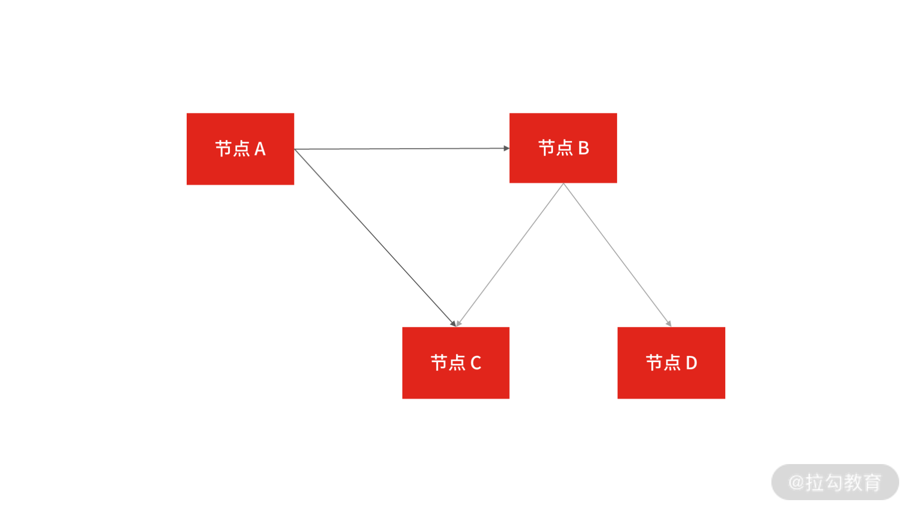
从图中你可以看到，节点 A 向节点 B、C 发送新数据，节点 B 收到新数据后，变成了活跃节点，然后节点 B 向节点 C、D 发送新数据。
到此，我们对一致性共识算法做个总结，共识算法的选择和数据副本数量的多少息息相关，如果副本少、参与共识的节点少，推荐采用广播方式，如 Paxos、Raft 等协议。如果副本多、参与共识的节点多，那就更适合采用 Gossip 这种最终一致性协议。

总结
总的来说，今天我通过电商场景下商品的存储设计，一步步延伸出了分布式系统的数据存储、分片，与数据一致性等分布式问题，它们包含了分布式系统知识体系中最基础的理论，也是最复杂的问题。今天这一讲，我强调这样几点：
- 面试官往往会通过“海量数据的存储设计”问题考察候选人对分布式系统技术的掌握情况，而回答好基于 Hash 取模、一致性 Hash 实现分库分表的解决方案，是你能否通过这第一关的关键。
- 当你掌握了常规的 Hash 取模分片方式后，面试官会引入一个场景问题（如大促热点问题）来考察你解决架构设计问题的思路。因为分布式系统架构设计离不开系统可用性与一致性之间的权衡，所以你的解题思路要站在这两个技术点之上。
- 如果面试官满意你的表现，会进一步考察你算法原理，所以对于分布式系统中的一致性共识算法，如 Basic Paxos、Multi Paxos、Raft、Zab、Gossip 也是你要提前掌握的。
05 海量并发场景下，如何回答分布式事务一致性问题？
上一讲我通过亿级商品存储，带你了解了分布式技术下的数据分片、存储、复制与一致性的原理性问题，这一讲我将继续带你了解一致性的另一个话题：事务一致性。
案例背景
在互联网分布式场景中，原本一个系统被拆分成多个子系统，要想完成一次写入操作，你需要同时协调多个系统，这就带来了分布式事务的问题（分布式事务是指：一次大的操作由多个小操作组成，这些小的操作分布在不同的服务器上，分布式事务需要保证这些小操作要么全部成功，要么全部失败）。那怎么设计才能实现系统之间的事务一致性呢？ 这就是咱们今天要讨论的问题，也是面试的高频问题。
这一讲，我先从“解决分布式事务”这个问题本身出发，讲解答题思路和你要掌握的知识点。然后再结合“高并发”场景，看在该场景下如何保证分布式系统事务一致性？希望通过这种方式，让你彻底掌握分布式系统事务一致性的解题思路和技术认知。
以京东旅行系统为例，早期的交易系统是通过 .NET 实现的，所有的交易下单逻辑都写在一个独立的系统中。随着技术改造，我们用 Java 重写了核心系统，原本的系统也被拆分成多个子系统，如商品系统、促销系统、订单系统（为了方便理解，我只拿这三个系统举例）。当用户下单时，订单系统生成订单，商品系统扣减库存，促销系统扣减优惠券，只有当三个系统的事务都提交之后，才认为此次下单成功，否则失败。
案例分析
这是一个很典型的分布式事务问题，解决方案也很多，有两阶段提交协议（Two-Phase Commit，2PC）、3PC 、TCC 和基于消息队列的实现方式。
所以当很多候选者听到“怎么实现系统之间的分布式一致性？”的问题之后，会信心满满地选择一个方案，回答说：方案很多，可以选择 2PC ，2PC 实现的流程是……
这种答题思路犯了一个很明显的错误，因为在实际工作中，很少采用前几种方案，基本都是基于 MQ 的可靠消息投递的方式来实现。所以一上来就说 2PC、3PC 或者 TCC 会让我觉得你并没有实际做过。那答题的套路是什么呢？
我建议你先介绍目前主流实现分布式系统事务一致性的方案（也就是基于 MQ 的可靠消息投递的机制）然后回答出可实现方案和关键知识点。另外，为了和面试官进一步交流，你可以提出 2PC 或 TCC （这是一种交流方案）。因为 2PC 或 TCC 在工业界落地代价很大，不适合互联网场景，所以只有少部分的强一致性业务场景（如金融支付领域）会基于这两种方案实现。而你可以围绕它们的解决思路和方案弊端与面试官讨论，这会让你和面试官由不平等的“面试与被面试”变成平等且友好的“双方沟通”，是一种面试套路。
但要做到这几点，需要建立在你深入掌握分布式事务一致性问题的基础之上，所以接下来，我们就解析一下面试中最为常见的两种实现方案。
案例解答
基于两阶段提交的解决方案
2PC 是分布式事务教父级协议，它是数据库领域解决分布式事务最典型的协议。它的处理过程分为准备和提交两个阶段，每个阶段都由协调者（Coordinator）和参与者（Participant）共同完成：
- 协调者就是事务管理器；
- 参与者就是具体操作执行的资源管理器。
Java 程序员都知道，XA 是由 X/Open 组织提出的分布式事务的规范，规范主要定义了事务管理器（Transaction Manager）和资源管理器（Resource Manager）之间的接口，事务管理器负责全局事务的协调者，资源管理器负责管理实际资源（如 MySQL、Oracle 等数据库）。而Java 平台上事务规范 JTA（Java Transaction API）就是对 XA 分布式事务规范标准的实现。例如在 Spring 中就通过 JtaTransactionManager 来配置分布式事务，然后通过管理多个 ResourceManager 来管理多个数据源，进而操作多个数据库之间的事务。
那么 2PC 具体是如何运行的呢？ 以课程开头的系统为例，订单数据、商品数据，以及促销数据被分别存储在多个数据库实例中，用户在执行下单的时候，交易主流程的业务逻辑则集中部署在一个应用服务器集群上，然后通过 Spring 容器访问底层的数据库实例，而容器中的 JTA 事务管理器在这里就作为事务管理器，Resource 资源管理器就作为底层的数据库实例的资源管理器。
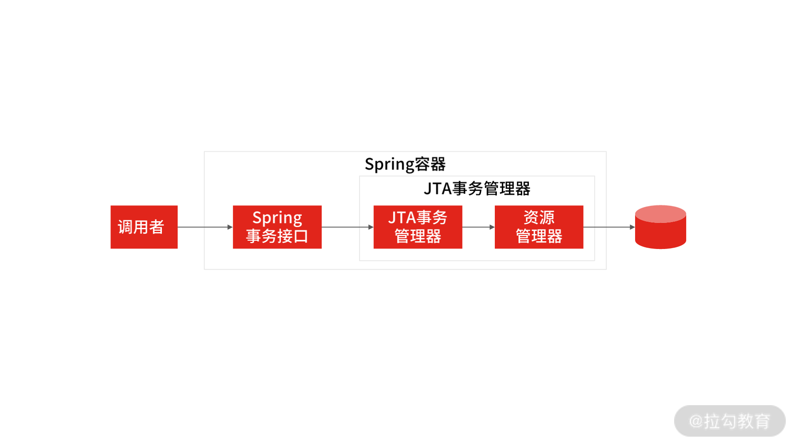
Spring事务管理
我们假设订单数据，商品数据和促销数据分别保存在数据库 D1，数据库 D2 和数据库 D3 上。
- 准备阶段，事务管理器首先通知所有资源管理器开启事务，询问是否做好提交事务的准备。如资源管理器此时会将 undo 日志和 redo 日志计入事务日志中，并做出应答，当协调者接收到反馈 Yes 后，则准备阶段结束。 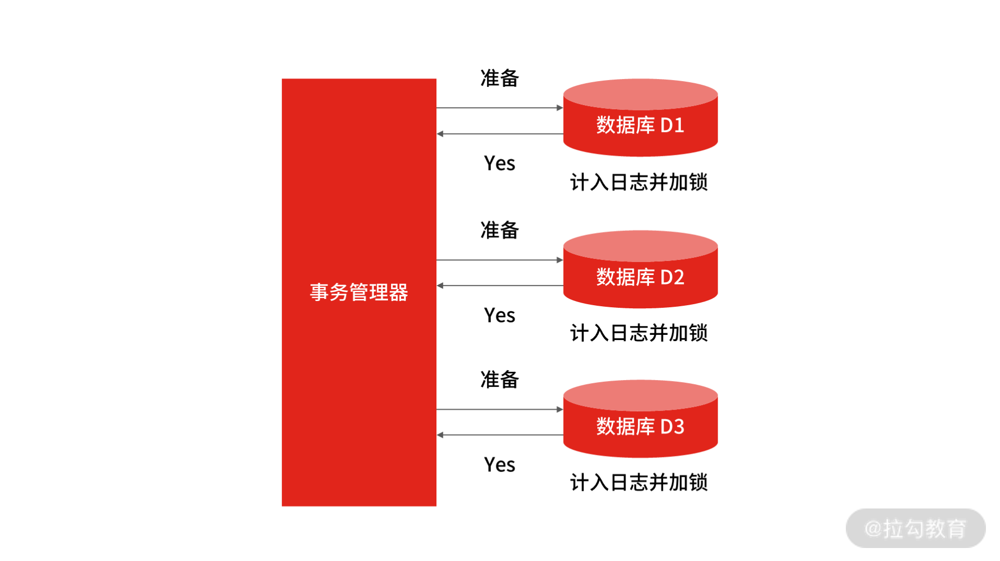
2PC 准备阶段
- 提交阶段，当收到所有数据库实例的 Yes 后，事务管理器会发出提交指令。每个数据库接受指令进行本地操作，正式提交更新数据，然后向协调者返回 Ack 消息，事务结束。 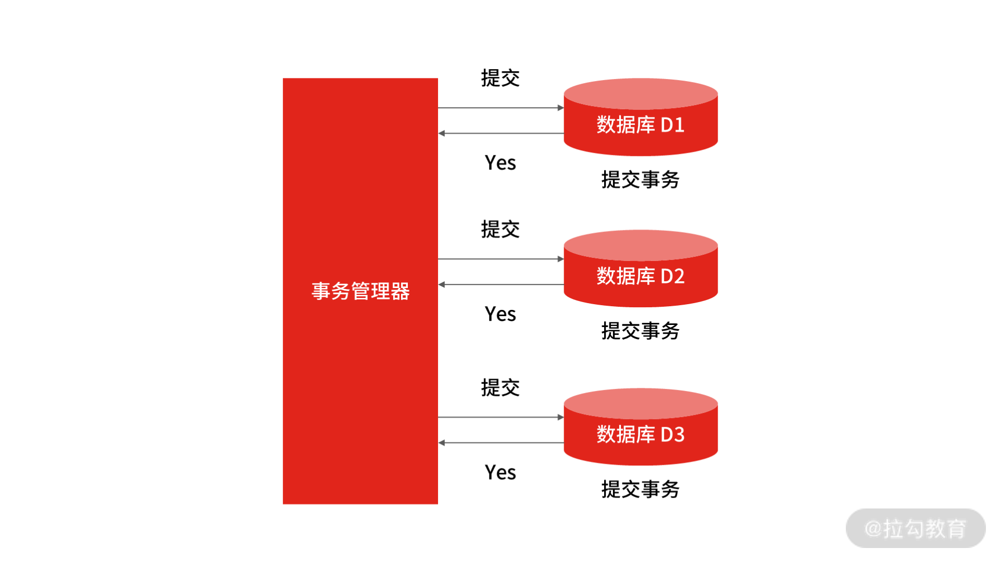
2PC 提交阶段
- 中断阶段，如果任何一个参与者向协调者反馈了 No 响应，例如用户 B 在数据库 D3 上面的余额在执行其他扣款操作，导致数据库 D3 的数据无法锁定，则只能向事务管理器返回失败。此时，协调者向所有参与者发出 Rollback 请求，参与者接收 Rollback 请求后，会利用其在准备阶段中记录的 undo 日志来进行回滚操作，并且在完成事务回滚之后向协调者发送 Ack 消息，完成事务回滚操作。
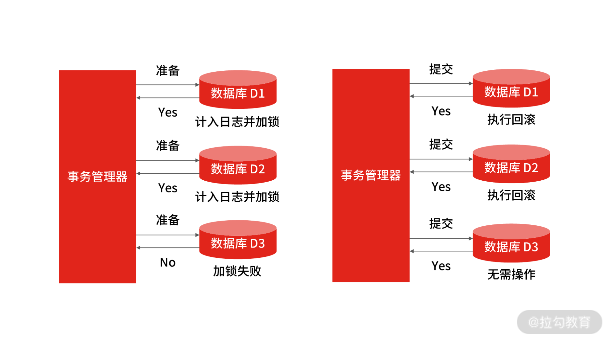
2PC 中断阶段
以上就是基于 2PC 实现分布式事务的原理。
当你和面试官交流 2PC 的原理时，往往不止于此，就像我们开篇提到的，我们并不会基于 2PC 来实现分布式事务一致性，虽然 2PC 可以借助数据库的本地事务操作，实现起来较为简单，不用侵入业务逻辑，但是它也存在着很多问题。
2PC 在准备阶段会要求每个资源管理器进行资源锁定，如 MySQL 的行锁。否则如果在提交阶段提交之前数据发生改变，就会出现数据不一致的情况。
还是上面的例子，如果商品库存数据为 1，也就是数据库 D1 为 1，在准备阶段询问是否可以扣减库存，商品数据返回可以，此时如果不锁定数据，在提交阶段之前另外一个请求去扣减了数据库 D1 的数据，这时候，在提交阶段再去扣减库存时，数据库 D1 的数据就会超售变成了负 1。
但正因为要加锁，会导致两阶段提交存在一系列问题，最严重的就是死锁问题，一旦发生故障，数据库就会阻塞，尤其在提交阶段，如果发生故障，数据都还处于资源锁定状态，将无法完成后续的事务提交操作。
其次是性能问题，数据库（如 MySQL ）在执行过程中会对操作的数据行执行数据行锁，如果此时其他的事务刚好也要操作被锁定的数据行，那它们就只能阻塞等待，使分布式事务出现高延迟和性能低下。
再有就是数据不一致性，在提交阶段，当事务管理器向参与者发送提交事务请求之后，如果此时出现了网络异常，只有部分数据库接收到请求，那么会导致未接收到请求的数据库无法提交事务，整个系统出现数据不一致性。
至此，我们就了解了基于 2PC 实现的分布式事务一致性的解决方案，你可以从这几点出发，与面试官进行友好的交流。
基于 MQ 的可靠消息投递方案
基于 MQ 的可靠消息队列投递方案是目前互联网最为常用的方式，在应对高并发场景下的分布式事务问题时，种方案通过放弃强一致性，而选择最终一致性，来提高系统的可用性。
还是拿下单场景举例，当订单系统调用优惠券系统时，将扣减优惠券的事件放入消息队列中，最终给优惠券系统来执行，然后只要保证事件消息能够在优惠券系统内被执行就可以了，因为消息已经持久化在消息中间件中，即使消息中间件发生了宕机，我们将它重启后也不会出现消息丢失的问题。 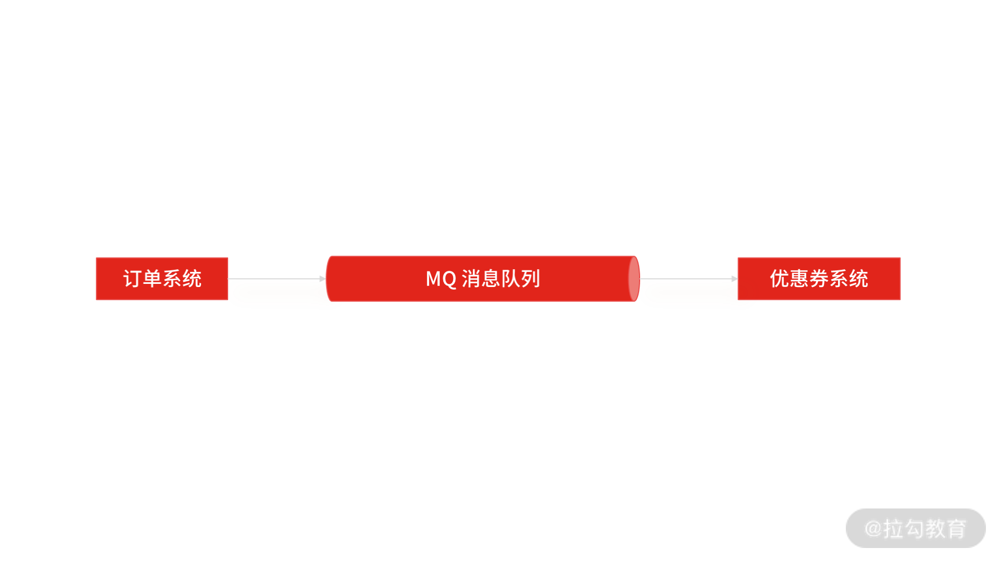
基于 MQ 的消息投递
基于 MQ 的可靠消息投递的方案不仅可以解决由于业务流程的同步执行而造成的阻塞问题，还可以实现业务解耦合流量削峰。这种方案中的可选型的 MQ 也比较多，比如基于 RabbitMQ 或者 RocketMQ，但并不是引入了消息队列中间件就万事大吉了，通常情况下，面试官会着重通过以下两个知识点来考察你对这种方案的掌握程度。
- MQ 自动应答机制导致的消息丢失
订阅消息事件的优惠券服务在接收订单服务投递的消息后，消息中间件（如 RabbitMQ）默认是开启消息自动应答机制，当优惠券系统消费了消息，消息中间件就会删除这个持久化的消息。
但在优惠券系统执行的过程中，很可能因为执行异常导致流程中断，那这时候消息中间件中就没有这个数据了，进而会导致消息丢失。因此你要采取编程的方式手动发送应答，也就是当优惠券系统执行业务成功之后，消息中间件才能删除这条持久化消息。
这个知识点很容易被忽略掉，但却很重要，会让面试官认为你切切实实的做过，另外还有一个高频的问题，就是在大促的时候，瞬时流量剧增，很多没能及时消费的消息积压在 MQ 队列中，这个问题如何解决呢？
- 高并发场景下的消息积压导致消息丢失
分布式部署环境基于网络进行通信，而在网络通信的过程中，上下游可能因为各种原因而导致消息丢失。比如优惠券系统由于流量过大而触发限流，不能保证事件消息能够被及时地消费，这个消息就会被消息队列不断地重试，最后可能由于超过了最大重试次数而被丢弃到死信队列中。
但实际上，你需要人工干预处理移入死信队列的消息，于是在这种场景下，事件消息大概率会被丢弃。而这个问题源于订单系统作为事件的生产者进行消息投递后，无法感知它下游（即优惠券系统）的所有操作，那么优惠券系统作为事件的消费者，是消费成功还是消费失败，订单系统并不知道。
顺着这个思路，如果让订单知道消费执行结果的响应，即使出现了消息丢失的情况，订单系统也还是可以通过定时任务扫描的方式，将未完成的消息重新投递来进行消息补偿。这是基于消息队列实现分布式事务的关键，是一种双向消息确认的机制。
那么如何落地实现呢？你可以先让订单系统把要发送的消息持久化到本地数据库里，然后将这条消息记录的状态设置为代发送，紧接着订单系统再投递消息到消息队列，优惠券系统消费成功后，也会向消息队列发送一个通知消息。当订单系统接收到这条通知消息后，再把本地持久化的这条消息的状态设置为完成。 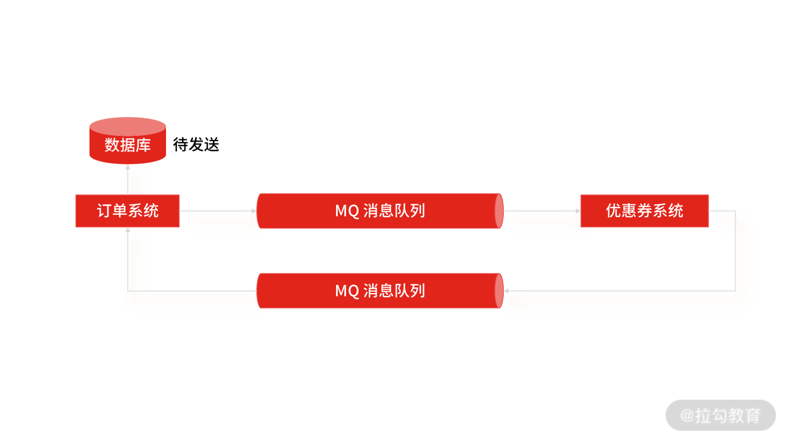
队列双向确认
这样做后，即使最终 MQ 出现了消息丢失，也可以通过定时任务从订单系统的本地数据库中扫描出一段时间内未完成的消息，进行重新投递，最终保证订单系统和优惠券系统的最终事务一致性。
总结
无论是初中级还是高级工程师，都需要掌握“分布式事务”，对初中级研发工程师来说，它是你的加分项，对于高级研发工程师来说，它是你的必备能力。所以这一讲中我并没有针对不同的人群给予不同的解答思路，主要想强调这样几个重点：
- 基于 MQ 的可靠消息投递的考核点是可落地性，所以你在回答时要抓住“双向确认”的核心原则，只要能实现生产端和消费端的双向确认，这个方案就是可落地了，又因为基于 MQ 来实现，所以天生具有业务解耦合流量削峰的优势。
- 基于 2PC 的实现方案很少有实际的场景，但你还是要掌握它的实现原理和存在的问题，因为面试不同于实际工作，有些问题的回答是为了告诉面试官：我有这个能力。尽管它在实际工作中并不适用。
最后，有一点需要你注意，在实际工作中，并不是所有的业务对事务一致性的要求都那么高。因为更高的要求意味着更多的成本，这也是很多架构复杂度来源之一，所以你要尽可能地站在业务实际场景的立足点来回答分布式事务问题。
06 分布式系统中，如何回答锁的实现原理？
上一讲，我讲了分布系统的事务一致性，今天这一讲，我想带你了解分布式系统中与锁有关的面试问题。
案例背景
分布式锁是解决协调分布式系统之间，同步访问共享资源的一种方式。详细来讲：在分布式环境下，多个系统在同时操作共享资源（如写数据）时，发起操作的系统通常会通过一种方式去协调其他系统，然后获取访问权限，得到访问权限后才可以写入数据，其他系统必须等待权限释放。 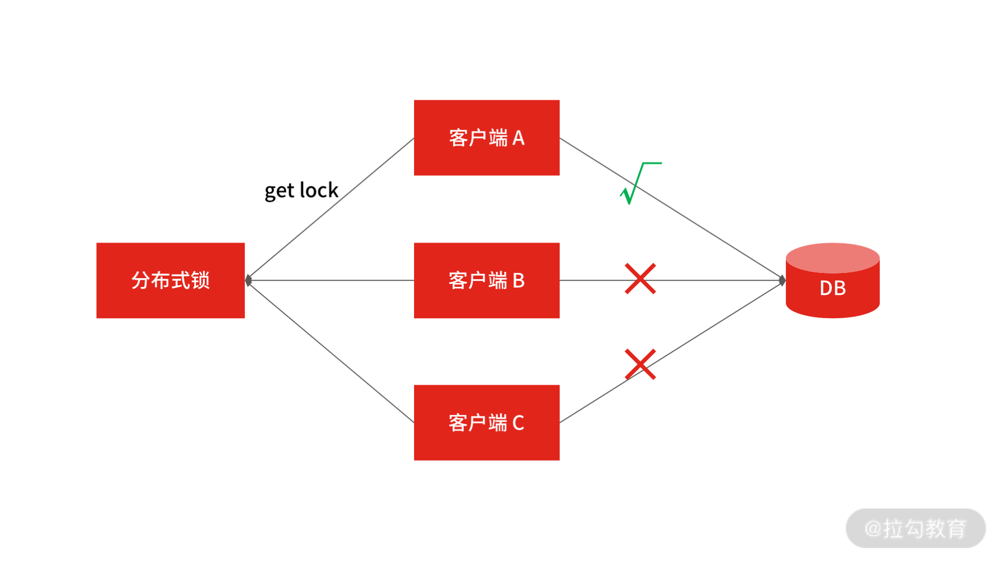
分布式锁
我和其他的面试官交流后发现，很多面试官都会问候选人与分布式锁相关的问题，在一些细节上挖得还比较细。比如在分布式系统中涉及共享资源的访问，一些面试官会深挖如何控制并发访问共享资源；如何解决资源争抢等技术细节，这些问题在下单场景、优惠券场景都会被考察到，足以证明“分布式锁”考点的重要性。
那么假设你正在面试，面试官模拟了系统秒杀的场景：为了防止商品库存超售，在并发场景下用到了分布式锁的机制，做商品扣减库存的串行化操作。然后问你：“你如何实现分布式锁？”你该怎么回答呢？
案例分析
当你听到这个问题后，心里会不会窃喜？觉得这是一道送分题，因为可选方案有很多，比如：
- 基于关系型数据库 MySQL 实现分布式锁；
- 基于分布式缓存 Redis 实现分布式锁；
你从中选择一个熟悉的实现方式，然后和面试官展开拉锯式的问答环节。
你：“可以基于 Redis 的 setnx 命令来实现分布式锁。” 面试官：“当拿到锁的服务挂掉，如何防止死锁？” 你：“可以为锁设置一个过期时间。” 面试官：“那如何保证加锁和设置过期时间是原子操作？” ……
如果面试官觉得你回答问题的思路清晰有条理，给出的实现方案也可以落地，并且满足你的业务场景，那么他会认可你具备初中级研发工程师该具备的设计能力，但不要高兴得太早。
因为有些面试官会继续追问：“分布式锁用 Zookeeper 实现行不行？”，“分布式锁用 etcd 实现行不行？” 借机考察你对分布式协调组件的掌握。你可能会觉得开源组件那么多，自己不可能每一个都用过，答不出来也无妨。但面试官提问的重点不是停留在组件的使用上，而是你对分布式锁的原理问题的掌握程度。
换句话说，“如果让借助第三方组件，你怎么设计分布式锁？” 这背后涉及了分布式锁的底层设计逻辑，是你需要掌握的。
02 讲我提到，在给出方案之前，你要明确待解决的问题点是什么。虽然你可以借助数据库 DB、Redis 和 ZooKeeper 等方式实现分布式锁，但要设计一个分布式锁，就需要明确分布式锁经常出现哪些问题，以及如何解决。
- 可用问题：无论何时都要保证锁服务的可用性（这是系统正常执行锁操作的基础）。
- 死锁问题：客户端一定可以获得锁，即使锁住某个资源的客户端在释放锁之前崩溃或者网络不可达（这是避免死锁的设计原则）。
- 脑裂问题：集群同步时产生的数据不一致，导致新的进程有可能拿到锁，但之前的进程以为自己还有锁，那么就出现两个进程拿到了同一个锁的问题。
总的来说，设计分布式锁服务，至少要解决上面最核心的几个问题，才能评估锁的优劣，从问题本质来回答面试中的提问，以不变应万变。接下来，我就以开篇的 “库存扣减” 为例，带你了解分布式锁的常见实现方式、优缺点，以及方案背后的原理。
案例解答
基于关系型数据库实现分布式锁
基于关系型数据库（如 MySQL） 来实现分布式锁是任何阶段的研发同学都需要掌握的，做法如下：先查询数据库是否存在记录，为了防止幻读取（幻读取：事务 A 按照一定条件进行数据读取，这期间事务 B 插入了相同搜索条件的新数据，事务 A 再次按照原先条件进行读取时，发现了事务 B 新插入的数据 ）通过数据库行锁 select for update 锁住这行数据，然后将查询和插入的 SQL 在同一个事务中提交。
以订单表为例：
select id from order where order_id = xxx for update
基于关系型数据库实现分布式锁比较简单，不过你要注意，基于 MySQL 行锁的方式会出现交叉死锁，比如事务 1 和事务 2 分别取得了记录 1 和记录 2 的排它锁，然后事务 1 又要取得记录 2 的排它锁，事务 2 也要获取记录 1 的排它锁，那这两个事务就会因为相互锁等待，产生死锁。
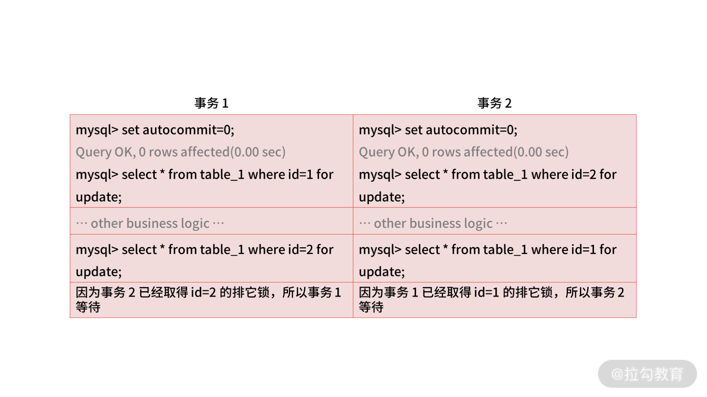
数据库交叉死锁
当然，你可以通过“超时控制”解决交叉死锁的问题，但在高并发情况下，出现的大部分请求都会排队等待，所以“基于关系型数据库实现分布式锁”的方式在性能上存在缺陷，所以如果你回答“基于关系型数据库 MySQL 实现分布式锁”，通常会延伸出下面两个问题。
- 数据库的事务隔离级别
如果你想让系统支持海量并发，那数据库的并发处理能力就尤为重要，而影响数据库并发能力最重要的因素是数据库的事务隔离机制。
数据库的四种隔离级别从低到高分别是：
- 读未提交（READ UNCOMMITTED）；
- 读已提交（READ COMMITTED）；
- 可重复读（REPEATABLE READ）；
- 可串行化（SERIALIZABLE）。
其中，可串行化操作就是按照事务的先后顺序，排队执行，然而一个事务操作可能要执行很久才能完成，这就没有并发效率可言了，所以数据库隔离级别越高，系统的并发性能就越差。
- 基于乐观锁的方式实现分布式锁
在数据库层面，select for update 是悲观锁，会一直阻塞直到事务提交，所以为了不产生锁等待而消耗资源，你可以基于乐观锁的方式来实现分布式锁，比如基于版本号的方式，首先在数据库增加一个 int 型字段 ver，然后在 SELECT 同时获取 ver 值，最后在 UPDATE 的时候检查 ver 值是否为与第 2 步或得到的版本值相同。
## SELECT 同时获取 ver 值
select amount, old_ver from order where order_id = xxx
## UPDATE 的时候检查 ver 值是否与第 2 步获取到的值相同
update order set ver = old_ver + 1, amount = yyy where order_id = xxx and ver = old_ver
此时，如果更新结果的记录数为1，就表示成功，如果更新结果的记录数为 0，就表示已经被其他应用更新过了，需要做异常处理。
你可以看到，初中级的研发工程师除了要掌握如何基于关系型数据库实现分布式锁，还要提前掌握数据库隔离级别的相关知识点，以及锁机制，它们是 MySQL 知识体系的一环，我会在第 10 讲中帮你梳理“如何回答 MySQL 的事务隔离级别和锁的机制？”相关问题。
基于分布式缓存实现分布式锁
我在开篇提到，因为数据库的性能限制了业务的并发量，所以针对“ 618 和双 11 大促”等请求量剧增的场景，你要引入基于缓存的分布式锁，这个方案可以避免大量请求直接访问数据库，提高系统的响应能力。
基于缓存实现的分布式锁，就是将数据仅存放在系统的内存中，不写入磁盘，从而减少 I/O 读写。接下来，我以 Redis 为例讲解如何实现分布式锁。
在加锁的过程中，实际上就是在给 Key 键设置一个值，为避免死锁，还要给 Key 键设置一个过期时间。
SET lock_key unique_value NX PX 10000
- lock_key 就是 key 键；
- unique_value 是客户端生成的唯一的标识；
- NX 代表只在 lock_key 不存在时，才对 lock_key 进行设置操作；
- PX 10000 表示设置 lock_key 的过期时间为 10s，这是为了避免客户端发生异常而无法释放锁。
而解锁的过程就是将 lock_key 键删除，但不能乱删，要保证执行操作的客户端就是加锁的客户端。而这个时候， unique_value 的作用就体现出来，实现方式可以通过 lua 脚本判断 unique_value 是否为加锁客户端。
选用 Lua 脚本是为了保证解锁操作的原子性。因为 Redis 在执行 Lua 脚本时，可以以原子性的方式执行，从而保证了锁释放操作的原子性。
// 释放锁时，先比较 unique_value 是否相等，避免锁的误释放
if redis.call("get",KEYS[1]) == ARGV[1] then
return redis.call("del",KEYS[1])
else
return 0
end
以上，就是基于 Redis 的 SET 命令和 Lua 脚本在 Redis 单节点上完成了分布式锁的加锁、解锁，不过在实际面试中，你不能仅停留在操作上，因为这并不能满足应对面试需要掌握的知识深度， 所以你还要清楚基于 Redis 实现分布式锁的优缺点；Redis 的超时时间设置问题；站在架构设计层面上 Redis 怎么解决集群情况下分布式锁的可靠性问题。
需要注意的是，你不用一股脑全部将其说出来，而是要做好准备，以便跟上面试官的思路，同频沟通。
- 基于 Redis 实现分布式锁的优缺点
基于数据库实现分布式锁的方案来说，基于缓存实现的分布式锁主要的优点主要有三点。
- 性能高效（这是选择缓存实现分布式锁最核心的出发点）。
- 实现方便。很多研发工程师选择使用 Redis 来实现分布式锁，很大成分上是因为 Redis 提供了 setnx 方法，实现分布式锁很方便。但是需要注意的是，在 Redis2.6.12 的之前的版本中，由于加锁命令和设置锁过期时间命令是两个操作（不是原子性的），当出现某个线程操作完成 setnx 之后，还没有来得及设置过期时间，线程就挂掉了，就会导致当前线程设置 key 一直存在，后续的线程无法获取锁，最终造成死锁的问题，所以要选型 Redis 2.6.12 后的版本或通过 Lua 脚本执行加锁和设置超时时间（Redis 允许将 Lua 脚本传到 Redis 服务器中执行, 脚本中可以调用多条 Redis 命令，并且 Redis 保证脚本的原子性）。
- 避免单点故障（因为 Redis 是跨集群部署的，自然就避免了单点故障）。
当然，基于 Redis 实现分布式锁也存在缺点，主要是不合理设置超时时间，以及 Redis 集群的数据同步机制，都会导致分布式锁的不可靠性。
- 如何合理设置超时时间
通过超时时间来控制锁的失效时间，不太靠谱，比如在有些场景中，一个线程 A 获取到了锁之后，由于业务代码执行时间可能比较长，导致超过了锁的超时时间，自动失效，后续线程 B 又意外的持有了锁，当线程 A 再次恢复后，通过 del 命令释放锁，就错误的将线程 B 中同样 key 的锁误删除了。

锁超时导致的误操作
所以，如果锁的超时时间设置过长，会影响性能，如果设置的超时时间过短，有可能业务阻塞没有处理完成，能否合理设置超时时间，是基于缓存实现分布式锁很难解决的一个问题。
那么如何合理设置超时时间呢？ 你可以基于续约的方式设置超时时间：先给锁设置一个超时时间，然后启动一个守护线程，让守护线程在一段时间后，重新设置这个锁的超时时间。实现方式就是：写一个守护线程，然后去判断锁的情况，当锁快失效的时候，再次进行续约加锁，当主线程执行完成后，销毁续约锁即可。
不过这种方式实现起来相对复杂，我建议你结合业务场景进行回答，所以针对超时时间的设置，要站在实际的业务场景中进行衡量。
- Redis 如何解决集群情况下分布式锁的可靠性？
我在 03 讲中提到了，在回答基于 Redis 实现分布式锁时候，你需要具备的答题思路和扩展点。其中也提到了基于 Redis 集群节点实现分布式锁会存在高可用的问题。
由于 Redis 集群数据同步到各个节点时是异步的，如果在 Redis 主节点获取到锁后，在没有同步到其他节点时，Redis 主节点宕机了，此时新的 Redis 主节点依然可以获取锁，所以多个应用服务就可以同时获取到锁。
但 03 讲我没有说怎么解决这个问题，其实 Redis 官方已经设计了一个分布式锁算法 Redlock 解决了这个问题。
而如果你能基于 Redlock 原理回答出怎么解决 Redis 集群节点实现分布式锁的问题，会成为面试的加分项。那官方是怎么解决的呢？
为了避免 Redis 实例故障导致锁无法工作的问题，Redis 的开发者 Antirez 设计了分布式锁算法 Redlock。Redlock 算法的基本思路，是让客户端和多个独立的 Redis 实例依次请求申请加锁，如果客户端能够和半数以上的实例成功地完成加锁操作，那么我们就认为，客户端成功地获得分布式锁，否则加锁失败。
这样一来，即使有某个 Redis 实例发生故障，因为锁的数据在其他实例上也有保存，所以客户端仍然可以正常地进行锁操作，锁的数据也不会丢失。那 Redlock 算法是如何做到的呢？
我们假设目前有 N 个独立的 Redis 实例， 客户端先按顺序依次向 N 个 Redis 实例执行加锁操作。这里的加锁操作和在单实例上执行的加锁操作一样，但是需要注意的是，Redlock 算法设置了加锁的超时时间，为了避免因为某个 Redis 实例发生故障而一直等待的情况。
当客户端完成了和所有 Redis 实例的加锁操作之后，如果有超过半数的 Redis 实例成功的获取到了锁，并且总耗时没有超过锁的有效时间，那么就是加锁成功。
总结
在课程的最后，我们总结一下，分布式锁是解决多个进程同时访问临界资源的常用方法，在分布式系统中非常普遍，常见的实现方式是基于数据库，基于 Redis。在同等服务器配置下，Redis 的性能是最好的，数据库最差。
但是在面试时，你要分清楚面试官的考查点，并结合工作中的业务场景给出答案，面试官不侧重你是否能很快地给出结果，而是你思考的过程。
对于分布式锁，你要从“解决可用性、死锁、脑裂”等问题为出发点来展开回答各分布式锁的实现方案的优缺点和适用场景。 另外，在设计分布式锁的时候，为了解决可用性、死锁、脑裂等问题，一般还会再考虑一下锁的四种设计原则。
- 互斥性：即在分布式系统环境下，对于某一共享资源，需要保证在同一时间只能一个线程或进程对该资源进行操作。
- 高可用：也就是可靠性，锁服务不能有单点风险，要保证分布式锁系统是集群的，并且某一台机器锁不能提供服务了，其他机器仍然可以提供锁服务。
- 锁释放：具备锁失效机制，防止死锁。即使出现进程在持有锁的期间崩溃或者解锁失败的情况，也能被动解锁，保证后续其他进程可以获得锁。
- 可重入：一个节点获取了锁之后，还可以再次获取整个锁资源。
07 RPC：如何在面试中展现出“造轮子”的能力？
我们知道，很多应用系统发展到一定规模之后，都会向着服务化方向演进，演进后的单体系统就变成了由一个个微服务组成的服务化系统，各个微服务系统之间通过远程 RPC 调用的方式通信。
可以说，RPC 是微服务架构的基础，从事互联网系统开发，就离不开 RPC 框架，所以这一讲，我们就立足面试场景下对 RPC 技术的考察，来讲解你要掌握的技术点和面试思路。
案例背景
主流的 RPC 框架很多，比如 Dubbo、Thrift、gRPC 等，非主流的框架你在 GitHub 上搜索也有很多结果。框架资源多，很多同学在工作中的选择也多，基本上都是拿来就用，停留在基础概念和使用上，不会深究技术实现。
所以很多候选人对于 RPC 有关的面试问题存在一个误区，认为面试官只会问这样几个问题：
- RPC 的一次调用过程是怎样的？
- RPC 的服务发现是如何实现的？
- RPC 的负载均衡有哪些？
- ……
这些问题看似专业，却很容易搜索到答案，如果作为面试题很难区分候选人的技术能力。所以针对 RPC 的技术考察，目前大多数面试官会从“实践操作 + 原理掌握”两个角度出发，递进地考察候选人。
具体怎么考察呢？我们接着往下看。
RPC 实践操作
面试官通常会从线上的实际案例出发，考察候选人对“实践操作”的掌握程度。举个例子：在电商 App 商品详情页中，用户每次刷新页面时，App 都会请求业务网关系统，并由网关系统远程调用多个下游服务（比如商品服务、促销服务、广告服务等）。
针对这个场景，面试官会问“对于整条 RPC 调用链路（从 App 到网关再到各个服务系统），怎么设置 RPC 的超时时间，要考虑哪些问题？”
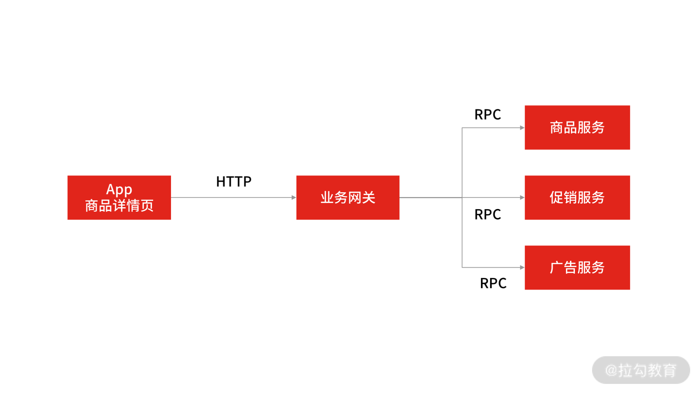
App 商品详情页服务调用
一些初中级研发会觉得问题很简单，不用想也知道：App 远程调用网关系统的超时时间要大于网关系统调用后端各服务的超时时间之和。这样至少能保证在网关与下游服务的每个 PRC 调用执行完成之前不超时。
如果你这么回答，从“实践”的角度上看，基本是不合格的。
因为 PRC 接口的超时设置看似简单，但其中却涉及了很多技术层面的问题。比如 RPC 都有超时重传的机制，如果后端服务触发超时重传，这时对 App 来说，也会存在请求等待超时的风险，就会出现后端服务还没来得及做降级处理，商品详情页就已经等待超时了。
并且在 RPC 调用的过程中也还会涉及其他的技术点，比如：
- 即使考虑到整个调用链的平均响应时长会受到所有依赖服务的耗时和重传次数影响，那么依据什么来设置 RPC 超时时间和重试次数呢？
- 如果发生超时重传，怎么区分哪些 RPC 服务可重传，哪些不可重传呢？
- 如果请求超过了 PRC 的重传次数，一般会触发服务降级，这又会对商品详情页造成什么影响？
- ......
总的来说，任何一个微服务出现性能问题，都会影响网关系统的平均响应时长，最终对 App 产生影响。所以从 RPC 接口的超时问题上，面试官会考察候选人很多深层次的开发实践能力。
那具体要怎么回答呢？我建议你参考以下解题思路。
- 结合 TP99 请求耗时：首先如果你要回答“超时时间设置和重传次数问题”，需要根据每一个微服务 TP99 的请求耗时，以及业务场景进行综合衡量。
- RPC 调用方式：你要站在业务场景下，讲清楚网关调用各下游服务的串并行方式，服务之间是否存在上下服务依赖。
- 分析核心服务：分析出哪些是核心服务，哪些是非核心服务，核心服务是否有备用方案，非核心服务是否有降级策略。
总的来讲，解答“实践操作类面试题”，一定要结合理论和落地实践，要做到即有理也有据，有理表示要有分析问题的能力，有据表示具备落地实战的经验。很多同学的通病是：回答问题只有方案，没有落地细节，这会让面试官认为你技术不扎实。
进一步，如果面试官觉得你“实践问题”答得不错，会深入考察你对 RPC 的原理性知识的掌握情况。
RPC 原理掌握
以刚刚的“电商 App”场景为例：

App 商品详情页服务调用
此时，商品详情页的 QPS 已达到了 2 万次/s，在做了服务化拆分之后，此时完成一次请求需要调用 3 次 RPC 服务，计算下来，RPC 服务需要承载大概 6 万次/s 的请求。那么你怎么设计 RPC 框架才能承载 6 万次/s 请求量呢？
能否答好这个问题，很考验候选人对 RPC 原理掌握的深度，我建议你从两个角度分析。
- 优化 RPC 的网络通信性能： 高并发下选择高性能的网络编程 I/O 模型。
- 选型合适的 RPC 序列化方式： 选择合适的序列化方式，进而提升封包和解包的性能。
然而我在面试候选人时发现，一些同学虽然做了准备，但只能说出个别 RPC 框架的大致流程，不能深刻理解每个环节的工作原理，所以整体给我的感觉就是：应用层面通过，原理深度不够。
而我对你的要求是：对于中间件等技术工具和框架，虽然在实际工作中不推荐重复“造轮子”，但在面试中要证明自己具备“造轮子”的能力，因为要评价一个程序员是否对技术栈有全面的认识，考察其“造轮子”的能力是一个不错的切入点。
接下来我们先理解一下完整的 RPC 会涉及哪些步骤，然后再解析其中的重要环节，搞懂 RPC 原理的考察点。
一次完整的 RPC 流程
因为 RPC 是远程调用，首先会涉及网络通信， 又因为 RPC 用于业务系统之间的数据交互，要保证数据传输的可靠性，所以它一般默认采用 TCP 来实现网络数据传输。
网络传输的数据必须是二进制数据，可是在 RPC 框架中，调用方请求的出入参数都是对象，对象不能直接在网络中传输，所以需要提前把对象转成可传输的二进制数据，转换算法还要可逆，这个过程就叫“序列化”和“反序列化”。
另外，在网络传输中，RPC 不会把请求参数的所有二进制数据一起发送到服务提供方机器上，而是拆分成好几个数据包（或者把好几个数据包封装成一个数据包），所以服务提供方可能一次获取多个或半个数据包，这也就是网络传输中的粘包和半包问题。为了解决这个问题，需要提前约定传输数据的格式，即“RPC 协议”。 大多数的协议会分成数据头和消息体：
- 数据头一般用于身份识别，包括协议标识、数据大小、请求类型、序列化类型等信息；
- 消息体主要是请求的业务参数信息和扩展属性等。
在确定好“ RPC 协议”后，一次完整的 RPC 调用会经过这样几个步骤：
- 调用方持续把请求参数对象序列化成二进制数据，经过 TCP 传输到服务提供方；
- 服务提供方从 TCP 通道里面接收到二进制数据；
- 根据 RPC 协议，服务提供方将二进制数据分割出不同的请求数据，经过反序列化将二进制数据逆向还原出请求对象，找到对应的实现类，完成真正的方法调用；
- 然后服务提供方再把执行结果序列化后，回写到对应的 TCP 通道里面；
- 调用方获取到应答的数据包后，再反序列化成应答对象。
这样调用方就完成了一次 RPC 调用。
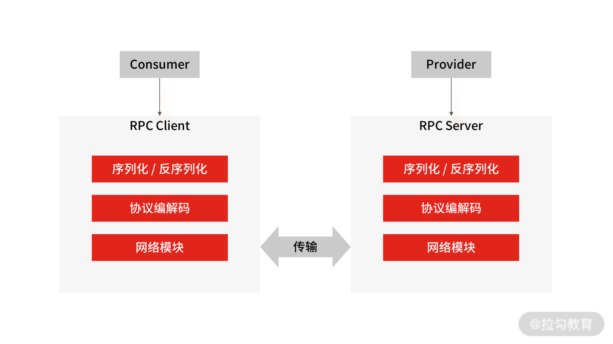
RPC 通信流程
你应该能发现， RPC 通信流程中的核心组成部分包括了协议、序列化与反序列化，以及网络通信。在了解了 RPC 的调用流程后，我们回到“电商 App”的案例中，先来解答序列化的问题。
如何选型序列化方式
RPC 的调用过程会涉及网络数据（二进制数据）的传输，从中延伸的问题是：如何选型序列化和反序列化方式？
要想回答这一点，你需要先明确序列化方式，常见的方式有以下几种。
- JSON：Key-Value 结构的文本序列化框架，易用且应用最广泛，基于 HTTP 协议的 RPC 框架都会选择 JSON 序列化方式，但它的空间开销很大，在通信时需要更多的内存。
- Hessian：一种紧凑的二进制序列化框架，在性能和体积上表现比较好。
- Protobuf：Google 公司的序列化标准，序列化后体积相比 JSON、Hessian 还要小，兼容性也做得不错。
明确“常见的序列化方式”后，你就可以组织回答问题的逻辑了：考虑时间与空间开销，切勿忽略兼容性。
在大量并发请求下，如果序列化的速度慢，势必会增加请求和响应的时间（时间开销）。另外，如果序列化后的传输数据体积较大，也会使网络吞吐量下降（空间开销）。所以，你要先考虑上述两点才能保证 RPC 框架的整体性能。除此之外，在 RPC 迭代中，常常会因为序列化协议的兼容性问题使 RPC 框架不稳定，比如某个类型为集合类的入参服务调用者不能解析，某个类的一个属性不能正常调用......
当然还有安全性、易用性等指标，不过并不是 RPC 的关键指标。总的来说，在面试时，你要综合考虑上述因素，总结出常用序列化协议的选型标准，比如首选 Hessian 与 Protobuf，因为它们在时间开销、空间开销、兼容性等关键指标上表现良好。
如何提升网络通信性能
如何提升 RPC 的网络通信性能，这句话翻译一下就是：一个 RPC 框架如何选择高性能的网络编程 I/O 模型？这样一来，和 I/O 模型相关的知识点就是你需要掌握的了。
对于 RPC 网络通信问题，你首先要掌握网络编程中的五个 I/O 模型：
- 同步阻塞 I/O（BIO）
- 同步非阻塞 I/O
- I/O 多路复用（NIO）
- 信号驱动
- 以及异步 I/O（AIO）
但在实际开发工作，最为常用的是 BIO 和 NIO（这两个 I/O 模型也是面试中面试官最常考察候选人的）。为了让你更好地理解编程模型中，这两个 I/O 模型典型的技术实现，我以 Java 程序例，编程写了一个简单的网络程序：
public class BIOSever {
ServerSocket ss = new ServerSocket();
// 绑定端口 9090
ss.bind(new InetSocketAddress("localhost", 9090));
System.out.println("server started listening " + PORT);
try {
Socket s = null;
while (true) {
// 阻塞等待客户端发送连接请求
s = ss.accept();
new Thread(new ServerTaskThread(s)).start();
}
} catch (Exception e) {
// 省略代码...
} finally {
if (ss != null) {
ss.close();
ss = null;
}
}
public class ServerTaskThread implements Runnable {
// 省略代码...
while (true) {
// 阻塞等待客户端发请求过来
String readLine = in.readLine();
if (readLine == null) {
break;
}
// 省略代码...
}
// 省略代码...
}
这段代码的主要逻辑是： 在服务端创建一个 ServerSocket 对象，绑定 9090 端口，然后启动运行，阻塞等待客户端发起连接请求，直到有客户端的连接发送过来后，accept() 方法返回。当有客户端的连接请求后，服务端会启动一个新线程 ServerTaskThread，用新创建的线程去处理当前用户的读写操作。
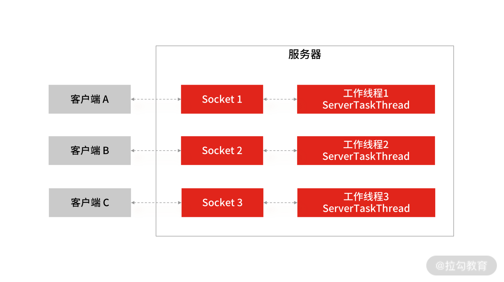
BIO 网络模型
所以，BIO 的网络模型中，每当客户端发送一个连接请求给服务端，服务端都会启动一个新的线程去处理客户端连接的读写操作，即每个 Socket 都对应一个独立的线程，客户端 Socket 和服务端工作线程的数量是 1 比 1，这会导致服务器的资源不够用，无法实现高并发下的网络开发。所以 BIO 的网络模型只适用于 Socket 连接不多的场景，无法支撑几十甚至上百万的连接场景。
另外，BIO 模型有两处阻塞的地方。
- 服务端阻塞等待客户端发起连接。在第 11 行代码中，通过 serverSocket.accept() 方法服务端等待用户发连接请求过来。
- 连接成功后，工作线程阻塞读取客户端 Socket 发送数据。在第 27 行代码中，通过 in.readLine() 服务端从网络中读客户端发送过来的数据，这个地方也会阻塞。如果客户端已经和服务端建立了一个连接，但客户端迟迟不发送数据，那么服务端的 readLine() 操作会一直阻塞，造成资源浪费。
以上这些就是 BIO 网络模型的问题所在，总结下来就两点：
- Socket 连接数量受限，不适用于高并发场景；
- 有两处阻塞，分别是等待用户发起连接，和等待用户发送数据。
那怎么解决这个问题呢？ 答案是 NIO 网络模型，操作上是用一个线程处理多个连接，使得每一个工作线程都可以处理多个客户端的 Socket 请求，这样工作线程的利用率就能得到提升，所需的工作线程数量也随之减少。此时 NIO 的线程模型就变为 1 个工作线程对应多个客户端 Socket 的请求，这就是所谓的 I/O多路复用。
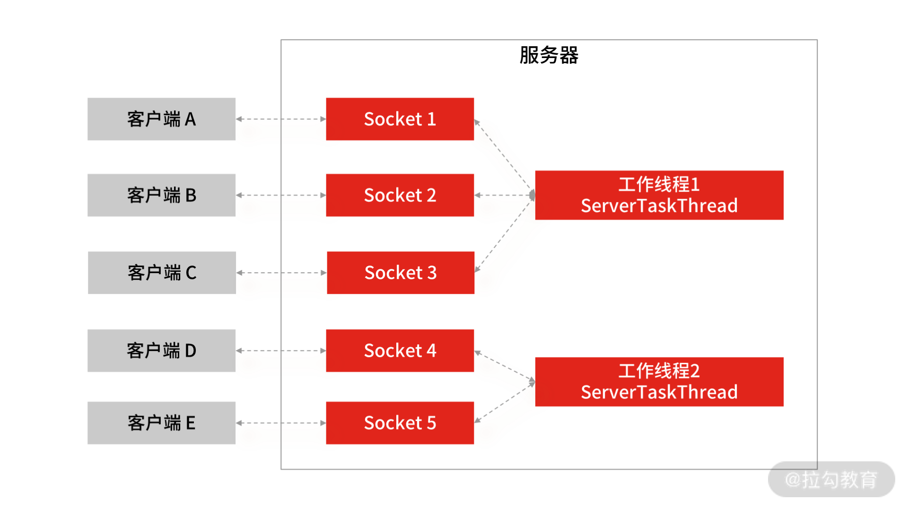
NIO 网络模型
顺着这个思路，我们继续深入思考：既然服务端的工作线程可以服务于多个客户端的连接请求，那么具体由哪个工作线程服务于哪个客户端请求呢？
这时就需要一个调度者去监控所有的客户端连接，比如当图中的客户端 A 的输入已经准备好后，就由这个调度者去通知服务端的工作线程，告诉它们由工作线程 1 去服务于客户端 A 的请求。这种思路就是 NIO 编程模型的基本原理，调度者就是 Selector 选择器。
由此可见，NIO 比 BIO 提高了服务端工作线程的利用率，并增加了一个调度者，来实现 Socket 连接与 Socket 数据读写之间的分离。
在目前主流的 RPC 框架中，广泛使用的也是 I/O 多路复用模型，Linux 系统中的 select、poll、epoll等系统调用都是 I/O 多路复用的机制。
在面试中，对于高级研发工程师的考察，还会有两个技术扩展考核点。
- Reactor 模型（即反应堆模式），以及 Reactor 的 3 种线程模型，分别是单线程 Reactor 线程模型、多线程 Reactor 线程模型，以及主从 Reactor 线程模型。
- Java 中的高性能网络编程框架 Netty。
可以这么说，在高性能网络编程中，大多数都是基于 Reactor 模式，其中最为典型的是 Java 的 Netty 框架，而 Reactor 模式是基于 I/O 多路复用的，所以，对于 Reactor 和 Netty 的考察也是避免不了的。因为相关资料很多，我就不展开了，你可以在课下补充这部分的知识，并在留言区与我交流。
总结
这一讲，我带你了解了面试官考察 RPC 技术的套路，无论是初中级还是高级研发工程师，都需要掌握这一讲的内容。
- 在“实践操作”中，我带你通过“如何设置 RPC 超时时间”的场景，学习了在微服务系统中，系统整体的平均响应时长，会受到所有依赖服务接口的耗时和重传次数影响。
- 在“原理掌握”中，我通过“商品详情页”的案例，引出 RPC 框架的原理与核心功能，如网络通信模型的选型、序列化和反序列化框架的选型等。
最后，我还是要强调一下，程序员一定要具备造轮子的能力，目的是突破技术栈瓶颈，因为技术只有动手实践过，才能有更加全面和深入的思考。学完这一讲后，我建议你阅读一些成熟的 RPC 框架的源代码，比如阿里开源的 Dubbo，或 Google 的 gRPC。
当然在实际工作中，一个产品级别的 RPC 框架的开发，除了要具备网络通信、序列化和反序列化、协议等基础的功能之外，还要具备如连接管理、负载均衡、请求路由、熔断降级、优雅关闭等高级功能的设计，虽然这些内容在面试中不要求你掌握，但是如果你了解是可以作为加分项的，例如连接管理就会涉及连接数的维护与服务心跳检测。
08 MQ：如何回答消息队列的丢失、重复与积压问题
这一讲，我们将围绕 MQ 消息中间件，讨论你经常被问到的高频设计问题。
面试官在面试候选人时，如果发现候选人的简历中写了在项目中使用了 MQ 技术（如 Kafka、RabbitMQ、RocketMQ），基本都会抛出一个问题：在使用 MQ 的时候，怎么确保消息 100% 不丢失？
这个问题在实际工作中很常见，既能考察候选者对于 MQ 中间件技术的掌握程度，又能很好地区分候选人的能力水平。接下来，我们就从这个问题出发，探讨你应该掌握的基础知识和答题思路，以及延伸的面试考点。
案例背景
以京东系统为例，用户在购买商品时，通常会选择用京豆抵扣一部分的金额，在这个过程中，交易服务和京豆服务通过 MQ 消息队列进行通信。在下单时，交易服务发送“扣减账户 X 100 个京豆”的消息给 MQ 消息队列，而京豆服务则在消费端消费这条命令，实现真正的扣减操作。

那在这个过程中你会遇到什么问题呢？
案例分析
要知道，在互联网面试中，引入 MQ 消息中间件最直接的目的是：做系统解耦合流量控制，追其根源还是为了解决互联网系统的高可用和高性能问题。
- 系统解耦：用 MQ 消息队列，可以隔离系统上下游环境变化带来的不稳定因素，比如京豆服务的系统需求无论如何变化，交易服务不用做任何改变，即使当京豆服务出现故障，主交易流程也可以将京豆服务降级，实现交易服务和京豆服务的解耦，做到了系统的高可用。
- 流量控制：遇到秒杀等流量突增的场景，通过 MQ 还可以实现流量的“削峰填谷”的作用，可以根据下游的处理能力自动调节流量。
不过引入 MQ 虽然实现了系统解耦合流量控制，也会带来其他问题。
引入 MQ 消息中间件实现系统解耦，会影响系统之间数据传输的一致性。 我们在 04 讲提到过，在分布式系统中，如果两个节点之间存在数据同步，就会带来数据一致性的问题。同理，在这一讲你要解决的就是：消息生产端和消息消费端的消息数据一致性问题（也就是如何确保消息不丢失）。
而引入 MQ 消息中间件解决流量控制， 会使消费端处理能力不足从而导致消息积压，这也是你要解决的问题。
所以你能发现，问题与问题之间往往是环环相扣的，面试官会借机考察你解决问题思路的连贯性和知识体系的掌握程度。
那面对“在使用 MQ 消息队列时，如何确保消息不丢失”这个问题时，你要怎么回答呢？首先，你要分析其中有几个考点，比如：
- 如何知道有消息丢失？
- 哪些环节可能丢消息？
- 如何确保消息不丢失？
候选人在回答时，要先让面试官知道你的分析思路，然后再提供解决方案： 网络中的数据传输不可靠，想要解决如何不丢消息的问题，首先要知道哪些环节可能丢消息，以及我们如何知道消息是否丢失了，最后才是解决方案（而不是上来就直接说自己的解决方案）。就好比“架构设计”“架构”体现了架构师的思考过程，而“设计”才是最后的解决方案，两者缺一不可。
案例解答
我们首先来看消息丢失的环节，一条消息从生产到消费完成这个过程，可以划分三个阶段，分别为消息生产阶段，消息存储阶段和消息消费阶段。

消息的生产、存储与消费
- 消息生产阶段： 从消息被生产出来，然后提交给 MQ 的过程中，只要能正常收到 MQ Broker 的 ack 确认响应，就表示发送成功，所以只要处理好返回值和异常，这个阶段是不会出现消息丢失的。
- 消息存储阶段： 这个阶段一般会直接交给 MQ 消息中间件来保证，但是你要了解它的原理，比如 Broker 会做副本，保证一条消息至少同步两个节点再返回 ack（这里涉及数据一致性原理，我在 04 讲中已经讲过，在面试中，你可以灵活延伸）。
- 消息消费阶段： 消费端从 Broker 上拉取消息，只要消费端在收到消息后，不立即发送消费确认给 Broker，而是等到执行完业务逻辑后，再发送消费确认，也能保证消息的不丢失。
方案看似万无一失，每个阶段都能保证消息的不丢失，但在分布式系统中，故障不可避免，作为消费生产端，你并不能保证 MQ 是不是弄丢了你的消息，消费者是否消费了你的消息，所以，本着 Design for Failure 的设计原则，你还是需要一种机制，来 Check 消息是否丢失了。
紧接着，你还可以向面试官阐述怎么进行消息检测？ 总体方案解决思路为：在消息生产端，给每个发出的消息都指定一个全局唯一 ID，或者附加一个连续递增的版本号，然后在消费端做对应的版本校验。
具体怎么落地实现呢？你可以利用拦截器机制。 在生产端发送消息之前，通过拦截器将消息版本号注入消息中（版本号可以采用连续递增的 ID 生成，也可以通过分布式全局唯一 ID生成）。然后在消费端收到消息后，再通过拦截器检测版本号的连续性或消费状态，这样实现的好处是消息检测的代码不会侵入到业务代码中，可以通过单独的任务来定位丢失的消息，做进一步的排查。
这里需要你注意：如果同时存在多个消息生产端和消息消费端，通过版本号递增的方式就很难实现了，因为不能保证版本号的唯一性，此时只能通过全局唯一 ID 的方案来进行消息检测，具体的实现原理和版本号递增的方式一致。
现在，你已经知道了哪些环节（消息存储阶段、消息消费阶段）可能会出问题，并有了如何检测消息丢失的方案，然后就要给出解决防止消息丢失的设计方案。解决方案你可以参考 05 讲中的 “基于 MQ 的可靠消息投递”的机制，我这里就不再赘述。
回答完“如何确保消息不会丢失？”之后，面试官通常会追问“怎么解决消息被重复消费的问题？” 比如：在消息消费的过程中，如果出现失败的情况，通过补偿的机制发送方会执行重试，重试的过程就有可能产生重复的消息，那么如何解决这个问题？
这个问题其实可以换一种说法，就是如何解决消费端幂等性问题（幂等性，就是一条命令，任意多次执行所产生的影响均与一次执行的影响相同），只要消费端具备了幂等性，那么重复消费消息的问题也就解决了。
我们还是来看扣减京豆的例子，将账户 X 的金豆个数扣减 100 个，在这个例子中，我们可以通过改造业务逻辑，让它具备幂等性。

扣减京豆
最简单的实现方案，就是在数据库中建一张消息日志表， 这个表有两个字段：消息 ID 和消息执行状态。这样，我们消费消息的逻辑可以变为：在消息日志表中增加一条消息记录，然后再根据消息记录，异步操作更新用户京豆余额。
因为我们每次都会在插入之前检查是否消息已存在，所以就不会出现一条消息被执行多次的情况，这样就实现了一个幂等的操作。当然，基于这个思路，不仅可以使用关系型数据库，也可以通过 Redis 来代替数据库实现唯一约束的方案。
在这里我多说一句，想要解决“消息丢失”和“消息重复消费”的问题，有一个前提条件就是要实现一个全局唯一 ID 生成的技术方案。这也是面试官喜欢考察的问题，你也要掌握。
在分布式系统中，全局唯一 ID 生成的实现方法有数据库自增主键、UUID、Redis，Twitter-Snowflake 算法，我总结了几种方案的特点，你可以参考下。

我提醒你注意，无论哪种方法，如果你想同时满足简单、高可用和高性能，就要有取舍，所以你要站在实际的业务中，说明你的选型所考虑的平衡点是什么。我个人在业务中比较倾向于选择 Snowflake 算法，在项目中也进行了一定的改造，主要是让算法中的 ID 生成规则更加符合业务特点，以及优化诸如时钟回拨等问题。
当然，除了“怎么解决消息被重复消费的问题？”之外，面试官还会问到你“消息积压”。 原因在于消息积压反映的是性能问题，解决消息积压问题，可以说明候选者有能力处理高并发场景下的消费能力问题。
你在解答这个问题时，依旧要传递给面试官一个这样的思考过程： 如果出现积压，那一定是性能问题，想要解决消息从生产到消费上的性能问题，就首先要知道哪些环节可能出现消息积压，然后在考虑如何解决。
因为消息发送之后才会出现积压的问题，所以和消息生产端没有关系，又因为绝大部分的消息队列单节点都能达到每秒钟几万的处理能力，相对于业务逻辑来说，性能不会出现在中间件的消息存储上面。毫无疑问，出问题的肯定是消息消费阶段，那么从消费端入手，如何回答呢？
如果是线上突发问题，要临时扩容，增加消费端的数量，与此同时，降级一些非核心的业务。通过扩容和降级承担流量，这是为了表明你对应急问题的处理能力。
其次，才是排查解决异常问题，如通过监控，日志等手段分析是否消费端的业务逻辑代码出现了问题，优化消费端的业务处理逻辑。
最后，如果是消费端的处理能力不足，可以通过水平扩容来提供消费端的并发处理能力，但这里有一个考点需要特别注意， 那就是在扩容消费者的实例数的同时，必须同步扩容主题 Topic 的分区数量，确保消费者的实例数和分区数相等。如果消费者的实例数超过了分区数，由于分区是单线程消费，所以这样的扩容就没有效果。
比如在 Kafka 中，一个 Topic 可以配置多个 Partition（分区），数据会被写入到多个分区中，但在消费的时候，Kafka 约定一个分区只能被一个消费者消费，Topic 的分区数量决定了消费的能力，所以，可以通过增加分区来提高消费者的处理能力。
总结
至此，我们讲解了 MQ 消息队列的热门问题的解决方案，无论是初中级还是高级研发工程师，本讲都是你需要掌握的，你都可以从这几点出发，与面试官进行友好的交流。我来总结一下今天的重点内容。
- 如何确保消息不会丢失？ 你要知道一条消息从发送到消费的每个阶段，是否存在丢消息，以及如何监控消息是否丢失，最后才是如何解决问题，方案可以基于“ MQ 的可靠消息投递 ”的方式。
- 如何保证消息不被重复消费？ 在进行消息补偿的时候，一定会存在重复消息的情况，那么如何实现消费端的幂等性就这道题的考点。
- 如何处理消息积压问题？ 这道题的考点就是如何通过 MQ 实现真正的高性能，回答的思路是，本着解决线上异常为最高优先级，然后通过监控和日志进行排查并优化业务逻辑，最后是扩容消费端和分片的数量。
在回答问题的时候，你需要特别注意的是，让面试官了解到你的思维过程，这种解决问题的能力是面试官更为看中的，比你直接回答一道面试题更有价值。
另外，如果你应聘的部门是基础架构部，那么除了要掌握本讲中的常见问题的主线知识以外，还要掌握消息中间件的其他知识体系，如：
- 如何选型消息中间件？
- 消息中间件中的队列模型与发布订阅模型的区别？
- 为什么消息队列能实现高吞吐？
- 序列化、传输协议，以及内存管理等问题
- ……
08 案例串联 如何让系统抗住双十一的预约抢购活动？
到目前为止，我们讨论了很多的面试思路，比如 02 讲中关于架构设计的“四步回答法”，不过大部分内容都是比较独立的知识点（比如分布式事务、分布式锁……）为了让你更深入掌握前几讲内容，把相对独立的知识串联起来，我们今天就来回顾、梳理近期学习的内容，通过“电商预约抢购”的场景，用前几讲内容，做一道完整的架构设计题。
案例背景
在大促活动期间，“预约抢购”已经是各大电商平台的主要促销手段，京东自然也会和一些大的供应商合作，推出一些低价的爆款产品，比如 2019 年的 “1499 元抢购飞天茅台”活动，就让很多人每天准时准点拿着手机拼人品。
那这类电商领域的大促抢购场景涉及专栏的哪些内容呢？它们是怎么通过架构设计的方式组合在一起，实现一个完整的需求流程呢？这就是今天要讨论的话题。
我们先把需求梳理一下，总的来说，实现一个抢购系统大概可以分为四个阶段。

- 商品预约：用户进入商品详情页面，获取购买资格，并等待商品抢购倒计时。
- 等待抢购：等待商品抢购倒计时，直到商品开放抢购。
- 商品抢购：商品抢购倒计时结束，用户提交抢购订单，排队等待抢购结果，抢购成功后，扣减系统库存，生成抢购订单。
- 订单支付：等待用户支付成功后，系统更新订单状态，通知用户购买成功。
接下来，我们就针对各阶段容易出现的问题，来分析其中的技术考点和解决方案。
商品预约阶段
这几年，很多电商平台为了方便流量运营，改造了传统秒杀场景，通过先预约再抢购的方式预热商品，并根据预约量调整运营策略。而且在预约抢购的活动中，为了增加商品售卖量，会允许抢购前，预约资格超过实际的库存数量。
那么问题来了：如何在高并发量的情况下，让每个用户都能得到抢购资格呢？这是预约抢购场景第一个技术考察点。 那你可以基于“06 | 分布式系统中，如何回答锁的实现原理？”来控制抢购资格的发放。
我们基于 Redis 实现分布式锁（这是最常用的方式），在加锁的过程中，实际上是给 Key 键设置一个值，为避免死锁，还要给 Key 键设置一个过期时间。
SET lock_key unique_value NX PX 10000
- lock_key 就是 key 键；
- unique_value 是客户端生成的唯一的标识；
- NX 代表只在 lock_key 不存在时，才对 lock_key 进行设置操作；
- PX 10000 表示设置 lock_key 的过期时间为 10s，这是为了避免客户端发生异常而无法释放锁。
而解锁的过程就是将 lock_key 键删除，但不能乱删，要保证执行操作的客户端就是加锁的客户端。而这个时候， unique_value 的作用就体现出来，你可以通过 Lua 脚本判断 unique_value 是否为加锁客户端。
选用 Lua 脚本是为了保证解锁操作的原子性。因为 Redis 在执行 Lua 脚本时，可以以原子性的方式执行，保证了锁释放操作的原子性。
// 释放锁时，先比较 unique_value 是否相等，避免锁的误释放
if redis.call("get",KEYS[1]) == ARGV[1] then
return redis.call("del",KEYS[1])
else
return 0
end
这样一来，就通过使用 SET 命令和 Lua 脚本在 Redis 单节点上完成了分布式锁的加锁和解锁。但你要注意，此方案是基于单节点的 Redis 实例实现的，如果此时 Redis 实例发生故障宕机，那么锁变量就没有了，客户端也就无法进行锁操作，就会影响到业务的正常执行。 所以，基于 Redis 实现分布式锁时，你还要掌握如何保证锁的可靠性，也就是怎么基于多个 Redis 节点实现分布式锁（这部分也可以参考 06 讲中的内容）。
等待抢购阶段
用户预约成功之后，在商品详情页面中，会存在一个抢购倒计时，这个倒计时的初始时间是从服务端获取的，用户点击购买按钮时，系统还会去服务端验证是否已经到了抢购时间。
在等待抢购阶段，流量突增，因为在抢购商品之前（尤其是临近开始抢购之前的一分钟内），大部分用户会频繁刷新商品详情页，商品详情页面的读请求量剧增， 如果商品详情页面没有做好流量控制，就容易成为整个预约抢购系统中的性能瓶颈点。
那么问题来了：如何解决等待抢购时间内的流量突增问题呢？有两个解决思路。
- 页面静态化：提前对抢购商品的详情页面做静态化，生成一个静态页面，再把页面放到距离用户最近的 CDN 节点中，这样一来，当浏览器访问页面时，就会自动缓存该页面的静态资源文件（对于静态化技术，很多页面端的模板引擎都支持这样的功能，我就不展开讲了）。
- 服务端限流：对商品详情页中的动态请求接口设置最大并发访问数量（具体的数量根据上线前的性能压测为准），防止超出预期的请求集中访问系统，造成系统压力过载。操作上，你可以在商品详情页的后端系统入口层（如网关系统）中进行接口限流，如果使用 Nginx 来做反向代理，可以直接基于 Nginx 配置限流算法，比如 Nginx 的 ngx_http_limit_req_module（限制单位时间内所有 IP 的请求数量）和 ngx_stream_limit_conn_module（限制单位时间内单个 IP 的请求数量）两个模块就提供了限流控制的功能，所以你还要提前掌握限流策略的原理，如令牌桶算法的原理。
商品抢购阶段
在商品抢购阶段，用户会点击提交订单，这时，抢购系统会先校验库存，当库存足够时，系统会先扣减库存，然后再生成订单。在这个过程中，短时间之内提交订单的写流量非常高，所以为了做流量削峰，会将提单请求暂存在消息队列中，并提示用户“抢购排队中……”然后再由后端服务异步处理用户的请求。
而你可以基于数据库和缓存两种方式，来实现校验库存和扣减库存的操作。
但因为抢购场景的瞬时流量极高，一般不会直接基于数据库来实现（因为每次操作数据库，即使通过消息队列做了流量削峰，对数据库来说压力也很大，会产生性能瓶颈）。如果非要基于数据库的话，你要通过分布式锁来优化扣减库存的并发操作，但此阶段的分布式锁对可靠性的要求会极高（因为在大促抢购阶段，小的可用性故障，都可能造成大的线上事故），所以基于单节点 Redis 实现的分布式锁不合适，你要选择多节点 Redis 实现分布式锁，或者选型 ZooKeeper。
为了避免上述问题，我们一般基于缓存来存储库存，实现扣减库存的操作。这样在提交订单时，库存的查询和锁定就不会给数据库带来性能瓶颈。不过你仍要注意，基于缓存（如 Redis）的库存扣减操作，仍要考虑缓存系统的单点问题，就算是多节点存储库存，也要引入锁的策略，保证 Redis 实现库存的一致性。
实现了校验库存和扣减库存之后，最后一步是生成抢购订单。由于数据库表会承载订单数据，一旦出现瞬时流量，磁盘 I/O、数据库请求连接数等资源都会出现性能瓶颈，你可以考虑对订单表分库分表，通过对用户 ID 字段进行 Hash 取模，实现分库分表，提高系统的并发能力。
从“商品抢购阶段的架构设计”中我们可以总结出三个技术考点：流量削峰、扣减库存、分库分表。
- “流量削峰”的面试考点
流量削峰是由于正式抢购场景下，短时间内的提单请求非常高，所以引入消息队列做异步化，然后在抢购系统的后端服务中，启动若干个队列处理消息队列中的提单请求，再执行校验库存、下单等逻辑。
那么如何快速处理消息队列中的提单请求，避免出现大量的消息积压，就是本阶段的考点之一了，方案可以参考“08 | MQ：如何回答消息队列的丢失、重复与积压问题？”
- “扣减库存”的面试考点
我刚刚提到，当基于 Redis 实现库存的扣减时，要考虑怎么解决 Redis 的单点问题。而如果基于 Redis 集群来实现扣减库存，还要解决 Redis 在哨兵模式部署的情况下，因为主从切换带来的数据不一致的问题。这就涉及“06 | 分布式系统中，如何回答锁的实现原理？”中的内容。
- “分库分表”的面试考点
生成订单后如何实现分库分表？你可以参考“04 | 亿级商品存储下，如何深度回答分布式系统的原理性问题？”中的解决方案。
当然还有一个容易忽略的问题：带宽的影响。由于抢购入口的请求量会非常大，可能会占用大量带宽，为了不影响提交订单的请求，有时会从网络工程的角度解决，通过单独的子域名绑定独立的网络服务器，这里就会涉及 DNS 的设计与优化手段。
订单支付阶段
在用户支付订单完成之后，一般会由支付平台回调系统接口，更新订单状态。在支付回调成功之后，抢购系统还会通过异步通知的方式，实现订单更新之外的非核心业务处理，比如积分累计、短信通知等，此阶段可以基于 MQ 实现业务的异步操作。
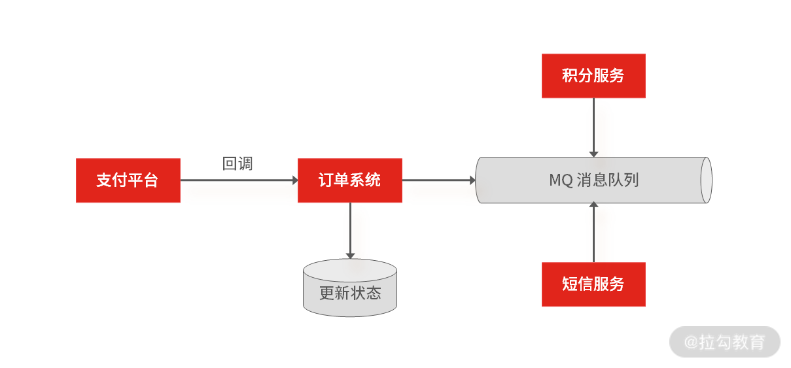
订单支付后操作
不过针对服务的异常（如宕机），会存在请求数据丢失的可能，比如当支付回调系统后，修改订单状态成功了，但是在异步通知积分系统，更新用户累计积分时，订单系统挂掉了，此时 MQ 还没有收到这条消息，那么这条消息数据就无法还原了。
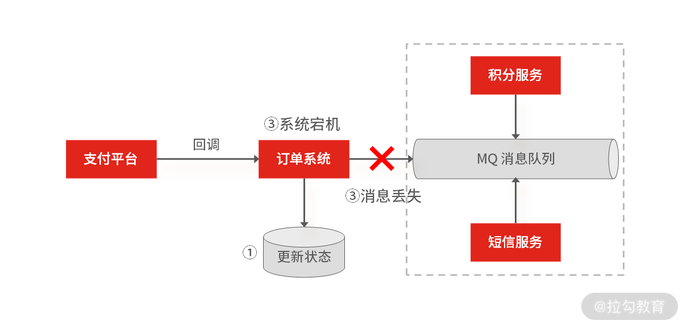
订单支付后操作（异常）
所以你还要考虑“05 | 海量并发场景下，如何回答分布式事务一致性问题？”中，可靠消息投递机制：先做消息的本地存储，再通过异步重试机制，来实现消息的补偿。比如当支付平台回调订单系统，然后在更新状态的同时，插入一个消息，之后再返回第三方支付操作成功的结果。最后，通过数据库中的这条消息，再异步推送其他系统，完成后续的工作。
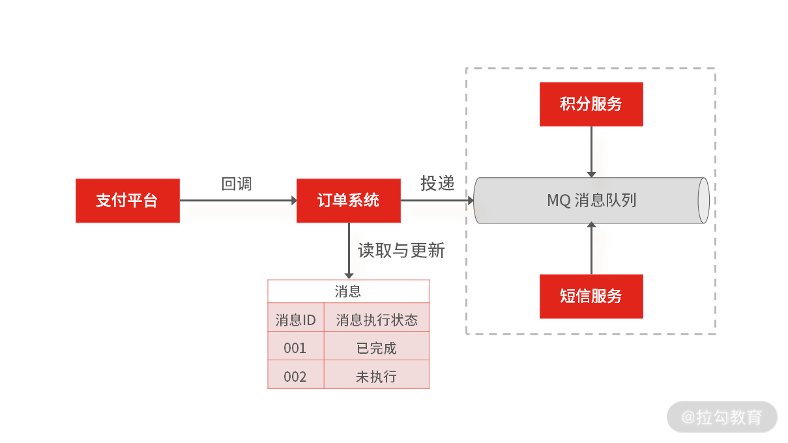
订单支付后操作（新方案）
总结
今天，我们用前几讲的内容实现了一个完整的预约抢购的系统设计，为了加深你的理解，我总结了每个阶段的注意点。
- 商品预约阶段：要掌握如何在高并发的场景下通过锁的方式，让每一个用户都获取到抢购资格，结合业务场景对于并发控制的需求诉求和成本的考虑，在商品预约阶段，你可以基于 Redis 来实现分布式锁。
- 等待抢购阶段：此阶段对页面的查询请求会很高，尤其是临近抢购倒计时的流量突增，解决方案是做页面静态化和服务端限流。
- 商品抢购阶段：商品抢购是整个流程中涉及技术点最多的阶段，瞬时流量会带来极大的压力，所以通过 MQ 做了同步转异步，实现对流量的削峰，从而让请求排队等待，然后有序且有限地进入到后端服务，而你必须掌握消息队列的丢失、重复和积压问题的解决方案；另外在扣减库存的时候，为了解决扣减存储不超售的问题，同样还需要引入锁的机制。
- 订单支付阶段：在用户支付完成后，系统通常还需要处理一些非核心操作，你可以通过 MQ 通知的方式来实现系统间的解耦和异步通信，但依旧要保证消息的可靠性（当然也可以通过 RPC 同步调用的方式来实现），所以你也要掌握 RPC 和 MQ 的相关知识点。
总的来说，互联网中大数据里的存储设计（如商品与订单数据的存储设计），你可以参考 04 讲；关于秒杀或抢购场景下的库存扣减设计，你可以参考 06 讲；分布式系统之间的事务一致性的架构设计，你可以参考 05 讲；关于架构设计中的服务强依赖的设计，一般会通过 RPC 远程同步调用的方式实现，你可以参考07讲；系统解耦，流量削峰的设计问题，你可以参考 08讲。
09 如何回答 MySQL 的索引原理与优化问题？
在互联网技术面试中，面试官除了会考察分布式、中间件等技术以外，还会考察数据库知识。无论你是程序员，还是架构师，都要掌握关系型数据库 MySQL 的原理与设计问题，从今天起，我就用 4 讲的时间带你打卡 MySQL 的面试内容。
今天这一讲，我们就先来看一看怎么回答 MySQL 的索引原理与优化问题。
案例背景
很多面试官考察候选人对“数据库知识”的掌握程度，会以“数据库的索引原理和优化方法”作为切入点。
假设面试官问你： 在电商平台的订单中心系统中，通常要根据商品类型、订单状态筛选出需要的订单，并按照订单创建的时间进行排序，那针对下面这条 SQL，你怎么通过索引来提高查询效率呢？
select * from order where status = 1 order by create_time asc
有的同学会认为，单独给 status 建立一个索引就可以了。
但是更优的方式是建立一个 status 和 create_time 组合索引，这是为了避免 MySQL 数据库发生文件排序。因为在查询时，你只能用到 status 的索引，但如果要对 create_time 排序，就要用文件排序 filesort，也就是在 SQL 执行计划中，Extra 列会出现 Using filesort。
所以你要利用索引的有序性，在 status 和 create_time 列建立联合索引，这样根据 status 筛选后的数据就是按照 create_time 排好序的，避免在文件排序。
案例分析
通过这个案例，你可以发现“索引知识”的重要性，所以我一般也会拿索引知识来考察候选人，并扩展出 MySQL 索引原理与优化策略的一系列问题，比如：
- 数据库索引底层使用的是什么数据结构和算法呢？
- 为什么 MySQL InnoDB 选择 B+Tree 当默认的索引数据结构？
- 如何通过执行计划查看索引使用详情？
- 有哪些情况会导致索引失效？
- 平时有哪些常见的优化索引的方法？
- ……
总结起来就是如下几点：
- 理解 MySQL InnoDB 的索引原理；
- 掌握 B+Tree 相比于其他索引数据结构（如 B-Tree、二叉树，以及 Hash 表）的优势；
- 掌握 MySQL 执行计划的方法；
- 掌握导致索引失效的常见情况；
- 掌握实际工作中常用的建立高效索引的技巧（如前缀索引、建立覆盖索引等）。
如果你曾经被问到其中某一个问题，那你就有必要认真夯实 MySQL 索引及优化的内容了。
案例解答
MySQL InnoDB 的索引原理
从数据结构的角度来看， MySQL 常见索引有 B+Tree 索引、HASH 索引、Full-Text 索引。我在表中总结了 MySQL 常见的存储引擎 InnoDB、MyISAM 和 Memory 分别支持的索引类型。（后两个存储引擎在实际工作和面试中很少提及，所以本讲我只讲 InnoDB） 。

索引类型
在实际应用中，InnoDB 是 MySQL 建表时默认的存储引擎，B+Tree 索引类型也是 MySQL 存储引擎采用最多的索引类型。
在创建表时，InnoDB 存储引擎默认使用表的主键作为主键索引，该主键索引就是聚簇索引（Clustered Index），如果表没有定义主键，InnoDB 就自己产生一个隐藏的 6 个字节的主键 ID 值作为主键索引，而创建的主键索引默认使用的是 B+Tree 索引。
接下来我们通过一个简单的例子，说明一下 B+Tree 索引在存储数据中的具体实现，为的是让你理解通过 B+Tree 做索引的原理。
首先，我们创建一张商品表：
CREATE TABLE `product` (
`id` int(11) NOT NULL,
`product_no` varchar(20) DEFAULT NULL,
`name` varchar(255) DEFAULT NULL,
`price` decimal(10, 2) DEFAULT NULL,
PRIMARY KEY (`id`) USING BTREE
) CHARACTER SET = utf8 COLLATE = utf8_general_ci ROW_FORMAT = Dynamic;
然后新增几行数据： 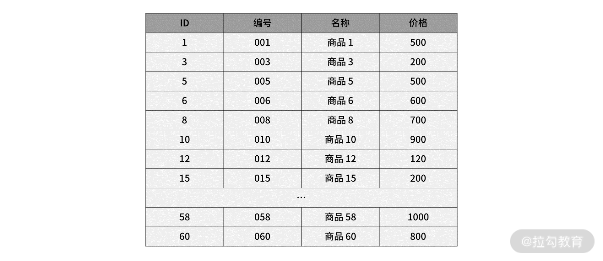
商品数据表
- 通过主键查询（主键索引）商品数据的过程
此时当我们使用主键索引查询商品 15 的时候，那么按照 B+Tree 索引原理，是如何找到对应数据的呢？
select * from product where id = 15
我们可以通过数据手动构建一个 B+Tree，它的每个节点包含 3 个子节点（B+Tree 每个节点允许有 M 个子节点，且 M>2），根节点中的数据值 1、18、36 分别是子节点（1，6，12），（18，24，30）和（36，41，52）中的最小值。
每一层父节点的数据值都会出现在下层子节点的数据值中，因此在叶子节点中，包括了所有的数据值信息，并且每一个叶子节点都指向下一个叶子节点，形成一个链表。如图所示：

主键索引查询过程
我们举例讲解一下 B+Tree 的查询流程，比如想要查找数据值 15，B+Tree 会自顶向下逐层进行查找：
- 将 15 与根节点的数据 (1，18，36) 比较，15 在 1 和 18 之间，所以根据 B+Tree的搜索逻辑，找到第二层的数据块 (1，6，12)；
- 在第二层的数据块 (1，6，12) 中进行查找，因为 15 大于 12，所以找到第三层的数据块 (12，15，17)；
- 在叶子节点的数据块 (12，15，17) 中进行查找，然后我们找到了数据值 15；
- 最终根据数据值 15 找到叶子节点中存储的数据。
整个过程一共进行了 3 次 I/O 操作，所以 B+Tree 相比于 B 树和二叉树来说，最大的优势在于查询效率。
那么问题来了，如果你当前查询数据时候，不是通过主键 ID，而是用商品编码查询商品，那么查询过程又是怎样的呢？
- 通过非主键（辅助索引）查询商品数据的过程
如果你用商品编码查询商品（即使用辅助索引进行查询），会先检索辅助索引中的 B+Tree 的 商品编码，找到对应的叶子节点，获取主键值，然后再通过主键索引中的 B+Tree 树查询到对应的叶子节点，然后获取整行数据。这个过程叫回表。
以上就是索引的实现原理。 掌握索引的原理是了解 MySQL 数据库的查询效率的基础，是每一个研发工程师都需要精通的知识点。
在面试时，面试官一般不会让你直接描述查询索引的过程，但是会通过考察你对索引优化方法的理解，来评估你对索引原理的掌握程度，比如为什么 MySQL InnoDB 选择 B+Tree 作为默认的索引数据结构？MySQL 常见的优化索引的方法有哪些？
所以接下来，我们就详细了解一下在面试中如何回答索引优化的问题。
B+Tree 索引的优势
如果你被问到“为什么 MySQL 会选择 B+Tree 当索引数据结构？”其实在考察你两个方面： B+Tree 的索引原理； B+Tree 索引相比于其他索引类型的优势。
我们刚刚已经讲了 B+Tree 的索引原理，现在就来回答一下 B+Tree 相比于其他常见索引结构，如 B 树、二叉树或 Hash 索引结构的优势在哪儿？
- B+Tree 相对于 B 树 索引结构的优势
B+Tree 只在叶子节点存储数据，而 B 树 的非叶子节点也要存储数据，所以 B+Tree 的单个节点的数据量更小，在相同的磁盘 I/O 次数下，就能查询更多的节点。
另外，B+Tree 叶子节点采用的是双链表连接，适合 MySQL 中常见的基于范围的顺序查找，而 B 树无法做到这一点。
- B+Tree 相对于二叉树索引结构的优势
对于有 N 个叶子节点的 B+Tree，其搜索复杂度为O(logdN)，其中 d 表示节点允许的最大子节点个数为 d 个。在实际的应用当中， d 值是大于100的，这样就保证了，即使数据达到千万级别时，B+Tree 的高度依然维持在 3~4 层左右，也就是说一次数据查询操作只需要做 3~4 次的磁盘 I/O 操作就能查询到目标数据（这里的查询参考上面 B+Tree 的聚簇索引的查询过程）。
而二叉树的每个父节点的儿子节点个数只能是 2 个，意味着其搜索复杂度为 O(logN)，这已经比 B+Tree 高出不少，因此二叉树检索到目标数据所经历的磁盘 I/O 次数要更多。
- B+Tree 相对于 Hash 表存储结构的优势
我们知道范围查询是 MySQL 中常见的场景，但是 Hash 表不适合做范围查询，它更适合做等值的查询，这也是 B+Tree 索引要比 Hash 表索引有着更广泛的适用场景的原因。
至此，你就知道“为什么 MySQL 会选择 B+Tree 来做索引”了。在回答时，你要着眼于 B+Tree 的优势，然后再引入索引原理的查询过程（掌握这些知识点，这个问题其实比较容易回答）。
接下来，我们进入下一个问题：在实际工作中如何查看索引的执行计划。
通过执行计划查看索引使用详情
我这里有一张存储商品信息的演示表 product：
CREATE TABLE `product` (
`id` int(11) NOT NULL,
`product_no` varchar(20) DEFAULT NULL,
`name` varchar(255) DEFAULT NULL,
`price` decimal(10, 2) DEFAULT NULL,
PRIMARY KEY (`id`) USING BTREE,
KEY 'index_name' ('name').
KEY 'index_id_name' ('id', 'name')
) CHARACTER SET = utf8 COLLATE = utf8_general_ci
表中包含了主键索引、name 字段上的普通索引，以及 id 和 name 两个字段的联合索引。现在我们来看一条简单查询语句的执行计划：
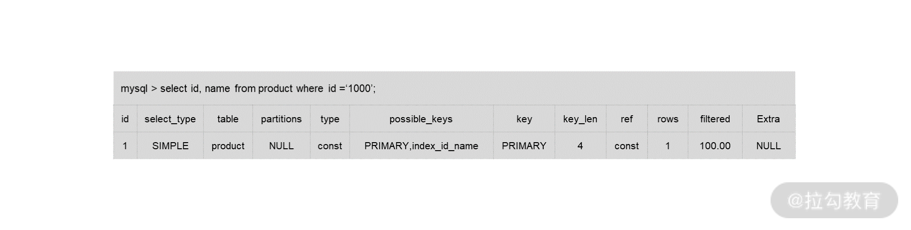
执行计划
对于执行计划，参数有 possible_keys 字段表示可能用到的索引，key 字段表示实际用的索引，key_len 表示索引的长度，rows 表示扫描的数据行数。
这其中需要你重点关注 type 字段， 表示数据扫描类型，也就是描述了找到所需数据时使用的扫描方式是什么，常见扫描类型的执行效率从低到高的顺序为（考虑到查询效率问题，全表扫描和全索引扫描要尽量避免）：
- ALL（全表扫描）；
- index（全索引扫描）；
- range（索引范围扫描）；
- ref（非唯一索引扫描）；
- eq_ref（唯一索引扫描）；
- const（结果只有一条的主键或唯一索引扫描）。
总的来说，执行计划是研发工程师分析索引详情必会的技能（很多大厂公司招聘 JD 上写着“SQL 语句调优” ），所以你在面试时也要知道执行计划核心参数的含义，如 type。在回答时，也要以重点参数为切入点，再扩展到其他参数，然后再说自己是怎么做 SQL 优化工作的。
索引失效的常见情况
在工作中，我们经常会碰到 SQL 语句不适用已有索引的情况，来看一个索引失效的例子：

这条带有 like 查询的 SQL 语句，没有用到 product 表中的 index_name 索引。
我们结合普通索引的 B+Tree 结构看一下索引失效的原因： 当 MySQL 优化器根据 name like ‘%路由器’ 这个条件，到索引 index_name 的 B+Tree 结构上进行查询评估时，发现当前节点的左右子节点上的值都有可能符合 '%路由器' 这个条件，于是优化器判定当前索引需要扫描整个索引，并且还要回表查询，不如直接全表扫描。
当然，还有其他类似的索引失效的情况：
- 索引列上做了计算、函数、类型转换操作，这些情况下索引失效是因为查询过程需要扫描整个索引并回表，代价高于直接全表扫描；
- like 匹配使用了前缀匹配符 '%abc'；
- 字符串不加引号导致类型转换；
我给你的建议是， 如果 MySQL 查询优化器预估走索引的代价比全表扫描的代价还要大，则不走对应的索引，直接全表扫描，如果走索引比全表扫描代价小，则使用索引。
常见优化索引的方法
- 前缀索引优化
前缀索引就是用某个字段中，字符串的前几个字符建立索引，比如我们可以在订单表上对商品名称字段的前 5 个字符建立索引。使用前缀索引是为了减小索引字段大小，可以增加一个索引页中存储的索引值，有效提高索引的查询速度。在一些大字符串的字段作为索引时，使用前缀索引可以帮助我们减小索引项的大小。
但是，前缀索引有一定的局限性，例如 order by 就无法使用前缀索引，无法把前缀索引用作覆盖索引。
- 覆盖索引优化
覆盖索引是指 SQL 中 query 的所有字段，在索引 B+tree 的叶子节点上都能找得到的那些索引，从辅助索引中查询得到记录，而不需要通过聚簇索引查询获得。假设我们只需要查询商品的名称、价格，有什么方式可以避免回表呢？
我们可以建立一个组合索引，即商品ID、名称、价格作为一个组合索引。如果索引中存在这些数据，查询将不会再次检索主键索引，从而避免回表。所以，使用覆盖索引的好处很明显，即不需要查询出包含整行记录的所有信息，也就减少了大量的 I/O 操作。
- 联合索引
联合索引时，存在最左匹配原则，也就是按照最左优先的方式进行索引的匹配。比如联合索引 (userpin, username)，如果查询条件是 WHERE userpin=1 AND username=2，就可以匹配上联合索引；或者查询条件是 WHERE userpin=1，也能匹配上联合索引，但是如果查询条件是 WHERE username=2，就无法匹配上联合索引。
另外，建立联合索引时的字段顺序，对索引效率也有很大影响。越靠前的字段被用于索引过滤的概率越高，实际开发工作中建立联合索引时，要把区分度大的字段排在前面，这样区分度大的字段越有可能被更多的 SQL 使用到。

区分度就是某个字段 column 不同值的个数除以表的总行数，比如性别的区分度就很小，不适合建立索引或不适合排在联合索引列的靠前的位置，而 uuid 这类字段就比较适合做索引或排在联合索引列的靠前的位置。
总结
今天，我们讲了 MySQL 的索引原理，介绍了 InnoDB 为什么会采用 B+Tree 结构。因为 B+Tree 能够减少单次查询的磁盘访问次数，做到查询效率最大化。另外，我们还讲了如何查看 SQL 的执行计划，从而找到索引失效的问题，并有针对性的做索引优化。
最后，我总结一些你容易在面试中被问到的，索引的使用原则：

另外，你在了解索引优势的同时，也要了解索引存在的问题：索引会带来数据的写入延迟，引入额外的空间消耗；在海量数据下，想要通过索引提升查询效率也是有限的。
10 如何回答 MySQL 的事务隔离级别和锁的机制？
上一讲，我讲了 MySQL 的索引原理与优化问题，今天我带你继续学习 MySQL 的事务隔离级别和锁的机制，MySQL 的事务和锁是并发控制最基本的手段，在面试中，它们与 09 讲的索引一样，同样是 MySQL 重要的考察点。
案例背景
MySQL 的事务隔离级别（Isolation Level），是指：当多个线程操作数据库时，数据库要负责隔离操作，来保证各个线程在获取数据时的准确性。它分为四个不同的层次，按隔离水平高低排序，读未提交 < 读已提交 < 可重复度 < 串行化。
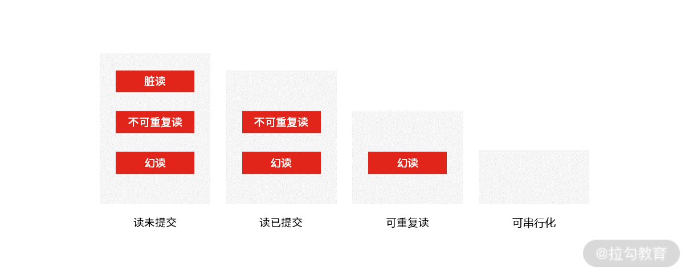
MySQL 隔离级别
- 读未提交（Read uncommitted）：隔离级别最低、隔离度最弱，脏读、不可重复读、幻读三种现象都可能发生。所以它基本是理论上的存在，实际项目中没有人用，但性能最高。
- 读已提交（Read committed）：它保证了事务不出现中间状态的数据，所有数据都是已提交且更新的，解决了脏读的问题。但读已提交级别依旧很低，它允许事务间可并发修改数据，所以不保证再次读取时能得到同样的数据，也就是还会存在不可重复读、幻读的可能。
- 可重复读（Repeatable reads）：MySQL InnoDB 引擎的默认隔离级别，保证同一个事务中多次读取数据的一致性，解决脏读和不可重复读，但仍然存在幻读的可能。
- 可串行化（Serializable）：选择“可串行化”意味着读取数据时，需要获取共享读锁；更新数据时，需要获取排他写锁；如果 SQL 使用 WHERE 语句，还会获取区间锁。换句话说，事务 A 操作数据库时，事务 B 只能排队等待，因此性能也最低。
至于数据库锁，分为悲观锁和乐观锁，“悲观锁”认为数据出现冲突的可能性很大，“乐观锁”认为数据出现冲突的可能性不大。那悲观锁和乐观锁在基于 MySQL 数据库的应用开发中，是如何实现的呢？
- 悲观锁一般利用 SELECT … FOR UPDATE 类似的语句，对数据加锁，避免其他事务意外修改数据。
- 乐观锁利用 CAS 机制，并不会对数据加锁，而是通过对比数据的时间戳或者版本号，实现版本判断。
案例分析
如果面试官想深挖候选人对数据库内部机制的掌握程度，切入点一般是 MySQL 的事务和锁机制。接下来，我就从初中级研发工程师的角度出发，从概念到实践，带你掌握“MySQL 事务和锁机制”的高频考点：
- 举例说明什么是脏读、不可重复度和幻读（三者虽然基础，但很多同学容易弄混）？
- MySQL 是怎么解决脏读、不可重复读，和幻读问题的？
- 你怎么理解死锁？
- ……
案例解答
怎么理解脏读、不可重复读和幻读？
脏读： 读到了未提交事务的数据。
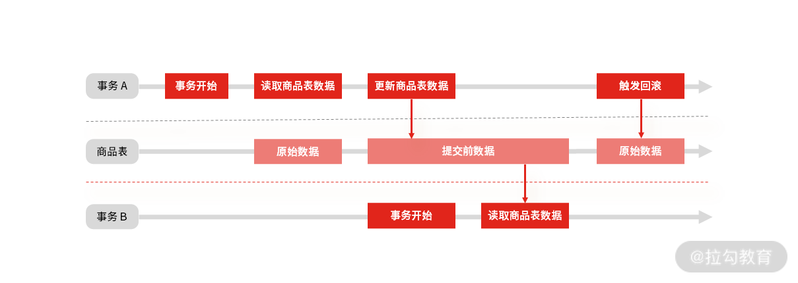
事务并发时的“脏读”现象
假设有 A 和 B 两个事务，在并发情况下，事务 A 先开始读取商品数据表中的数据，然后再执行更新操作，如果此时事务 A 还没有提交更新操作，但恰好事务 B 开始，然后也需要读取商品数据，此时事务 B 查询得到的是刚才事务 A 更新后的数据。
如果接下来事务 A 触发了回滚，那么事务 B 刚才读到的数据就是过时的数据，这种现象就是脏读。
“脏读”面试关注点：
- 脏读对应的隔离级别是“读未提交”，只有该隔离级别才会出现脏读。
- 脏读的解决办法是升级事务隔离级别，比如“读已提交”。
不可重复读： 事务 A 先读取一条数据，然后执行逻辑的过程中，事务 B 更新了这条数据，事务 A 再读取时，发现数据不匹配，这个现象就是“不可重复读”。
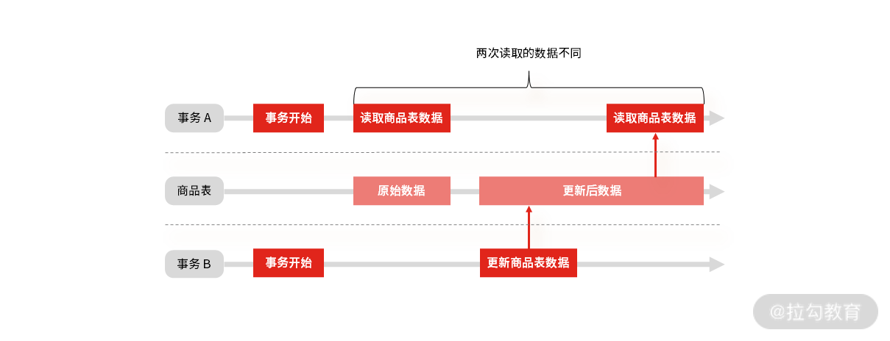
事务并发时的“不可重复读”现象
“不可重复读”面试关注点：
- 简单理解是两次读取的数据中间被修改，对应的隔离级别是“读未提交”或“读已提交”。
- 不可重复读的解决办法就是升级事务隔离级别，比如“可重复度”。
幻读： 在一个事务内，同一条查询语句在不同时间段执行，得到不同的结果集。
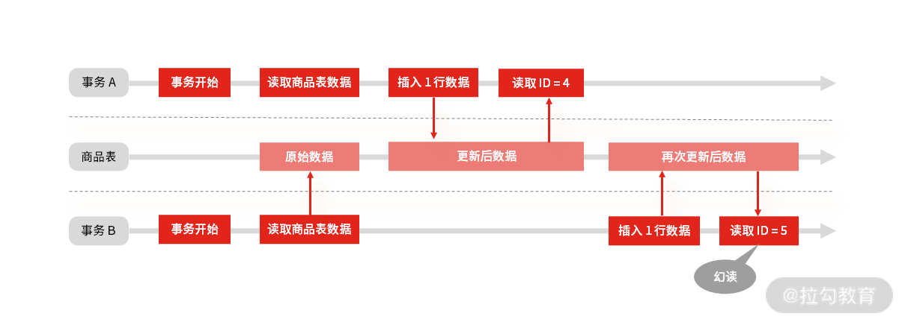
事务并发时的“幻读”现象
事务 A 读了一次商品表，得到最后的 ID 是 3，事务 B 也同样读了一次，得到最后 ID 也是 3。接下来事务 A 先插入了一行，然后读了一下最新的 ID 是 4，刚好是前面 ID 3 加上 1，然后事务 B 也插入了一行，接着读了一下最新的 ID 发现是 5，而不是 3 加 1。
这时，你发现在使用 ID 做判断或做关键数据时，就会出现问题，这种现象就像是让事务 B 产生了幻觉一样，读取到了一个意想不到的数据，所以叫幻读。当然，不仅仅是新增，删除、修改数据也会发生类似的情况。
“幻读”面试关注点：
- 要想解决幻读不能升级事务隔离级别到“可串行化”，那样数据库也失去了并发处理能力。
- 行锁解决不了幻读，因为即使锁住所有记录，还是阻止不了插入新数据。
- 解决幻读的办法是锁住记录之间的“间隙”，为此 MySQL InnoDB 引入了新的锁，叫间隙锁（Gap Lock），所以在面试中，你也要掌握间隙锁，以及间隙锁与行锁结合的 next-key lock 锁。
怎么理解死锁
除了事务隔离级别，很多同学在面试时，经常会被面试官直奔主题地问：“谈谈你对死锁的理解”。要回答这样开放的问题，你就要在脑海中梳理出系统化的回答思路：死锁是如何产生的，如何避免死锁。
死锁一般发生在多线程（两个或两个以上）执行的过程中。因为争夺资源造成线程之间相互等待，这种情况就产生了死锁。我在 06 讲也提到了死锁，但是并没有讲它产生的原因以及怎么避免，所以接下来我们就来了解这部分内容。
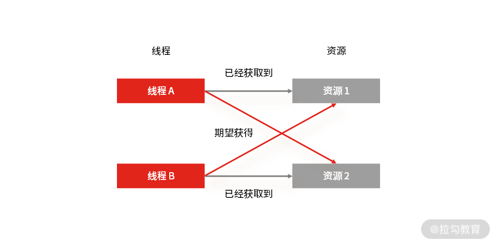
线程死锁
比如你有资源 1 和 2，以及线程 A 和 B，当线程 A 在已经获取到资源 1 的情况下，期望获取线程 B 持有的资源 2。与此同时，线程 B 在已经获取到资源 2 的情况下，期望获取现场 A 持有的资源 1。
那么线程 A 和线程 B 就处理了相互等待的死锁状态，在没有外力干预的情况下，线程 A 和线程 B 就会一直处于相互等待的状态，从而不能处理其他的请求。
死锁产生的四个必要条件。
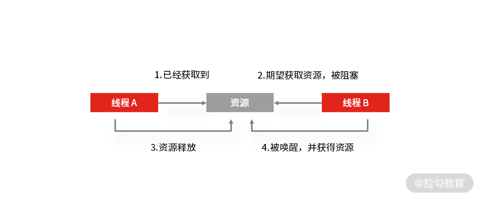
互斥条件
互斥： 多个线程不能同时使用一个资源。比如线程 A 已经持有的资源，不能再同时被线程 B 持有。如果线程 B 请求获取线程 A 已经占有的资源，那线程 B 只能等待这个资源被线程 A 释放。
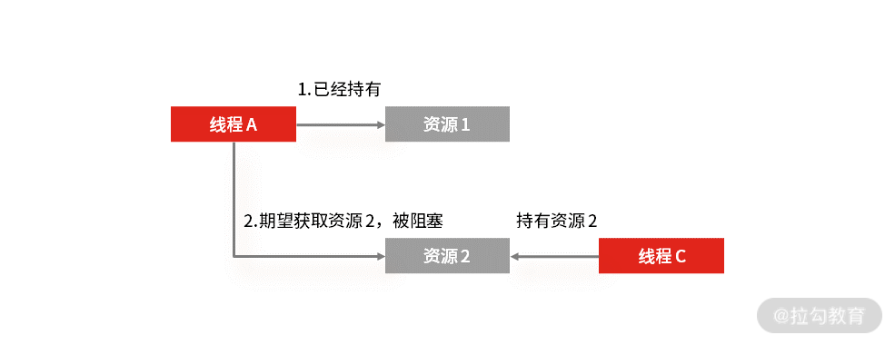
持有并等待
持有并等待： 当线程 A 已经持有了资源 1，又提出申请资源 2，但是资源 2 已经被线程 C 占用，所以线程 A 就会处于等待状态，但它在等待资源 2 的同时并不会释放自己已经获取的资源 1。
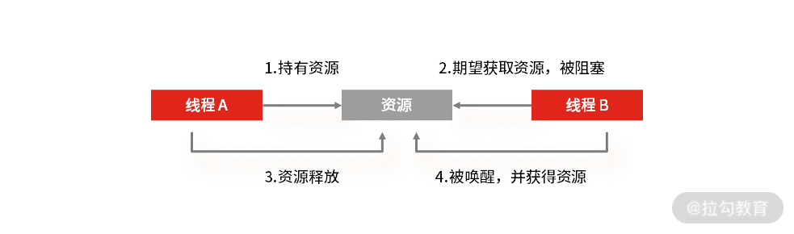
不可剥夺条件
不可剥夺： 线程 A 获取到资源 1 之后，在自己使用完之前不能被其他线程（比如线程 B）抢占使用。如果线程 B 也想使用资源 1，只能在线程 A 使用完后，主动释放后再获取。
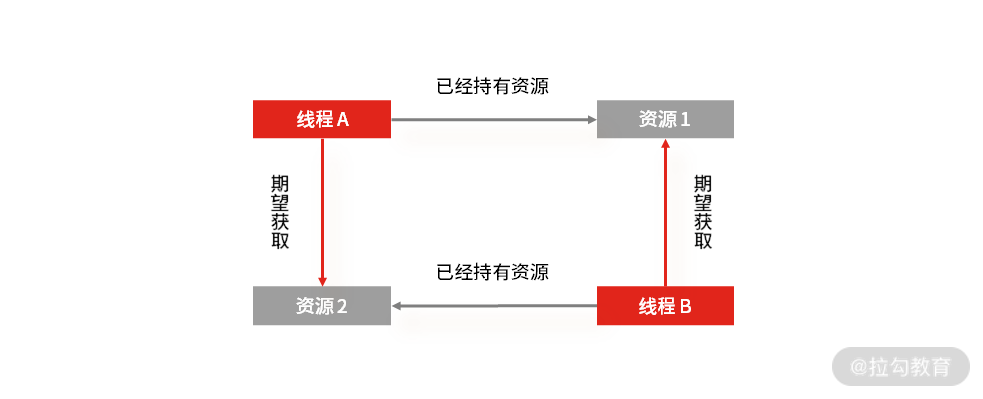
循环等待
循环等待： 发生死锁时，必然会存在一个线程，也就是资源的环形链。比如线程 A 已经获取了资源 1，但同时又请求获取资源 2。线程 B 已经获取了资源 2，但同时又请求获取资源 1，这就会形成一个线程和资源请求等待的环形图。
死锁只有同时满足互斥、持有并等待、不可剥夺、循环等待时才会发生。并发场景下一旦死锁，一般没有特别好的方法，很多时候只能重启应用。因此，最好是规避死锁，那么具体怎么做呢？答案是：至少破坏其中一个条件（互斥必须满足，你可以从其他三个条件出发）。
- 持有并等待：我们可以一次性申请所有的资源，这样就不存在等待了。
- 不可剥夺：占用部分资源的线程进一步申请其他资源时，如果申请不到，可以主动释放它占有的资源，这样不可剥夺这个条件就破坏掉了。
- 循环等待：可以靠按序申请资源来预防，也就是所谓的资源有序分配原则，让资源的申请和使用有线性顺序，申请的时候可以先申请资源序号小的，再申请资源序号大的，这样的线性化操作就自然就不存在循环了。
总结
我们花了两讲的时间，把 MySQL 数据库面试中的高频问题熟悉了一遍，但是如果从数据库领域应用开发者角度出发，至少还需要掌握以下几部分内容。
- 数据库设计基础：掌握数据库设计中的基本范式，以及基础概念，例如表、视图、索引、外键、序列号生成器等，掌握数据库的数据类型的使用，清楚业务实体关系与数据库结构的映射。
- 数据库隔离级别：掌握 MySQL 四种事务隔离级别的基础知识，并进一步了解 MVCC、Locking 等机制对于处理的进阶问题的解决；还需要了解不同索引类型的使用，甚至是底层数据结构和算法等。
- SQL 优化：掌握基础的 SQL 调优技巧，至少要了解基本思路是怎样的，例如 SQL 怎样写才能更好利用索引、知道如何分析 SQL 执行计划等。
- 数据库架构设计：掌握针对高并发等特定场景中的解决方案，如读写分离、分库分表等。
当然在准备面试时我并不建议你找一堆书闷头苦读，还是要从实际工作中，从使用数据库出发，并结合实践，完善和深化自己的知识体系，今天的内容就讲到这里，我们下一讲见。
11 读多写少：MySQL 如何优化数据查询方案？
今天这一讲，我们将面试继续聚焦到 MySQL 上，看一看当面试官提及“在读多写少的网络环境下，MySQL 如何优化数据查询方案”时，你要从哪些角度出发回答问题。
案例背景
假设你目前在某电商平台就职，公司面临双 11 大促，投入了大量营销费用用于平台推广，这带来了巨大的流量，如果你是订单系统的技术负责人，要怎么应对突如其来的读写流量呢？
这是一个很典型的应用场景，我想很多研发同学会回答：通过 Redis 作为 MySQL 的缓存，然后当用户查看“订单中心”时，通过查询订单缓存，帮助 MySQL 抗住大部分的查询请求。
如果你也是这么想，说明没认真思考过问题。因为应用缓存的原则之一是保证缓存命中率足够高，不然很多请求会穿透缓存，最终打到数据库上。然而在“订单中心”这样的场景中，每个用户的订单都不同，除非全量缓存数据库订单信息（又会带来架构的复杂度），不然缓存的命中率依旧很低。
所以在这种场景下，缓存只能作为数据库的前置保护机制，但是还会有很多流量打到数据库上，并且随着用户订单不断增多，请求到 MySQL 上的读写流量会越来越多，当单台 MySQL 支撑不了大量的并发请求时，该怎么办？
案例分析
互联网大部分系统的访问流量是读多写少，读写请求量的差距可能达到几个数量级，就好比你在京东上的商品的浏览量肯定远大于你的下单量。
所以你要考虑优化数据库来抗住高查询请求，首先要做的就是区分读写流量区，这样才方便针对读流量做单独扩展，这个过程就是流量的“读写分离”。
读写分离是提升 MySQL 并发的首选方案，因为当单台 MySQL 无法满足要求时，就只能用多个具有相同数据的 MySQL 实例组成的集群来承担大量的读写请求。

MySQL 主从结构
MySQL 做读写分离的前提，是把 MySQL 集群拆分成“主 + 从”结构的数据集群，这样才能实现程序上的读写分离，并且 MySQL 集群的主库、从库的数据是通过主从复制实现同步的。
那么面试官会问你“MySQL 集群如何实现主从复制？” 换一种问法就是“当你提交一个事务到 MySQL 集群后，MySQL 都执行了哪些操作？”面试官往往会以该问题为切入点，挖掘你对 MySQL 集群主从复制原理的理解，然后再模拟一个业务场景，让你给出解决主从复制问题的架构设计方案。
所以，针对面试官的套路，你要做好以下的准备：
- 掌握读多写少场景下的架构设计思路，知道缓存不能解决所有问题，“读写分离”是提升系统并发能力的重要手段。
- 深入了解数据库的主从复制，掌握它的原理、问题，以及解决方案。
- 从实践出发，做到技术的认知抽象，从方法论层面来看设计。
案例解答
MySQL 主从复制的原理
无论是“MySQL 集群如何实现主从复制”还是“当你提交一个事务到 MySQL 集群后，MySQL 集群都执行了哪些操作？”面试官主要是问你：MySQL 的主从复制的过程是怎样的？
总的来讲，MySQL 的主从复制依赖于 binlog ，也就是记录 MySQL 上的所有变化并以二进制形式保存在磁盘上。复制的过程就是将 binlog 中的数据从主库传输到从库上。这个过程一般是异步的，也就是主库上执行事务操作的线程不会等待复制 binlog 的线程同步完成。
为了方便你记忆，我把 MySQL 集群的主从复制过程梳理成 3 个阶段。
- 写入 Binlog：主库写 binlog 日志，提交事务，并更新本地存储数据。
- 同步 Binlog：把 binlog 复制到所有从库上，每个从库把 binlog 写到暂存日志中。
- 回放 Binlog：回放 binlog，并更新存储数据。

主从复制过程
但在面试中你不能简单地只讲这几个阶段，要尽可能详细地说明主库和从库的数据同步过程，为的是让面试官感受到你技术的扎实程度（详细过程如下）。
- MySQL 主库在收到客户端提交事务的请求之后，会先写入 binlog，再提交事务，更新存储引擎中的数据，事务提交完成后，返回给客户端“操作成功”的响应。
- 从库会创建一个专门的 I/O 线程，连接主库的 log dump 线程，来接收主库的 binlog 日志，再把 binlog 信息写入 relay log 的中继日志里，再返回给主库“复制成功”的响应。
- 从库会创建一个用于回放 binlog 的线程，去读 relay log 中继日志，然后回放 binlog 更新存储引擎中的数据，最终实现主从的数据一致性。
在完成主从复制之后，你就可以在写数据时只写主库，在读数据时只读从库，这样即使写请求会锁表或者锁记录，也不会影响读请求的执行。

一主多从
同时，在读流量比较大时，你可以部署多个从库共同承担读流量，这就是“一主多从”的部署方式，你在垂直电商项目中可以用该方式抵御较高的并发读流量。另外，从库也可以作为一个备库，以避免主库故障导致的数据丢失。
MySQL 一主多从
当然，一旦你提及“一主多从”，面试官很容易设陷阱问你：那大促流量大时，是不是只要多增加几台从库，就可以抗住大促的并发读请求了？
当然不是。
因为从库数量增加，从库连接上来的 I/O 线程也比较多，主库也要创建同样多的 log dump 线程来处理复制的请求，对主库资源消耗比较高，同时还受限于主库的网络带宽。所以在实际使用中，一个主库一般跟 2～3 个从库（1 套数据库，1 主 2 从 1 备主），这就是一主多从的 MySQL 集群结构。
其实，你从 MySQL 主从复制过程也能发现，MySQL 默认是异步模式：MySQL 主库提交事务的线程并不会等待 binlog 同步到各从库，就返回客户端结果。这种模式一旦主库宕机，数据就会发生丢失。
而这时，面试官一般会追问你“**MySQL 主从复制还有哪些模型？”**主要有三种。
- 同步复制：事务线程要等待所有从库的复制成功响应。
- 异步复制：事务线程完全不等待从库的复制成功响应。
- 半同步复制：MySQL 5.7 版本之后增加的一种复制方式，介于两者之间，事务线程不用等待所有的从库复制成功响应，只要一部分复制成功响应回来就行，比如一主二从的集群，只要数据成功复制到任意一个从库上，主库的事务线程就可以返回给客户端。
这种半同步复制的方式，兼顾了异步复制和同步复制的优点，即使出现主库宕机，至少还有一个从库有最新的数据，不存在数据丢失的风险。
讲到这儿，你基本掌握了 MySQL 主从复制的原理，但如果面试官想挖掘你的架构设计能力，还会从架构设计上考察你怎么解决 MySQL 主从复制延迟的问题，比如问你“在系统设计上有哪些方案可以解决主从复制的延迟问题？”
从架构上解决主从复制延迟
我们来结合实际案例设计一个主从复制延迟的解决方案。
在电商平台，每次用户发布商品评论时，都会先调用评论审核，目的是对用户发布的商品评论进行如言论监控、图片鉴黄等操作。
评论在更新完主库后，商品发布模块会异步调用审核模块，并把评论 ID 传递给审核模块，然后再由评论审核模块用评论 ID 查询从库中获取到完整的评论信息。此时如果主从数据库存在延迟，在从库中就会获取不到评论信息，整个流程就会出现异常。
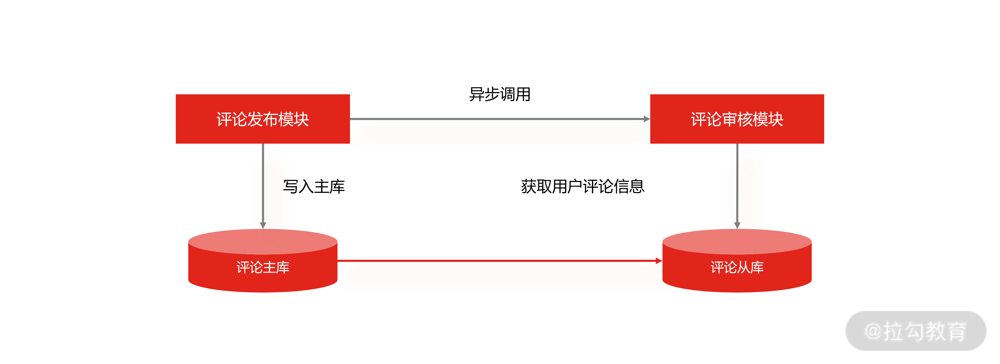
主从延迟影响评论读取的实时性
这是主从复制延迟导致的查询异常，解决思路有很多，我提供给你几个方案。
- 使用数据冗余
可以在异步调用审核模块时，不仅仅发送商品 ID，而是发送审核模块需要的所有评论信息，借此避免在从库中重新查询数据（这个方案简单易实现，推荐你选择）。但你要注意每次调用的参数大小，过大的消息会占用网络带宽和通信时间。
- 使用缓存解决
可以在写入数据主库的同时，把评论数据写到 Redis 缓存里，这样其他线程再获取评论信息时会优先查询缓存，也可以保证数据的一致性。
不过这种方式会带来缓存和数据库的一致性问题，比如两个线程同时更新数据，操作步骤如下：

线程 A 先更新数据库为 100，此时线程 B 把数据库和缓存中的数据都更新成了 200，然后线程 A 又把缓存更新为 100，这样数据库中的值 200 和缓存中的值 100 就不一致了，解决这个问题，你可以参考 06 讲。
总的来说，通过缓存解决 MySQL 主从复制延迟时，会出现数据库与缓存数据不一致的情况。虽然它和“使用数据冗余”的方案相比并不优雅，但我还是建议你在面试中做一下补充，这样可以引出更多的技术知识，展现自己与其他人的差异。
- 直接查询主库
该方案在使用时一定要谨慎，你要提前明确查询的数据量不大，不然会出现主库写请求锁行，影响读请求的执行，最终对主库造成比较大的压力。
当然了，面试官除了从架构上考察你对 MySQL 主从复制延迟的理解，还会问你一些扩展问题，比如：当 MySQL 做了主从分离后，对于数据库的使用方式就发生了变化，以前只需要使用一个数据库地址操作数据库，现在却要使用一个主库地址和多个从库地址，并且还要区分写入操作和查询操作，那从工程代码上设计，怎么实现主库和从库的数据访问呢？
实现主库和从库的数据库访问
一种简单的做法是：提前把所有数据源配置在工程中，每个数据源对应一个主库或者从库，然后改造代码，在代码逻辑中进行判断，将 SQL 语句发送给某一个指定的数据源来处理。
这个方案简单易实现，但 SQL 路由规则侵入代码逻辑，在复杂的工程中不利于代码的维护。
另一个做法是：独立部署的代理中间件，如 MyCat，这一类中间件部署在独立的服务器上，一般使用标准的 MySQL 通信协议，可以代理多个数据库。
该方案的优点是隔离底层数据库与上层应用的访问复杂度，比较适合有独立运维团队的公司选型；缺陷是所有的 SQL 语句都要跨两次网络传输，有一定的性能损耗，再就是运维中间件是一个专业且复杂的工作，需要一定的技术沉淀。
技术认知
以上就是你在应聘初中级工程师时需要掌握的内容，如果你应聘的是高级研发工程师，在回答问题时，还要尽可能地展示自己对 MySQL 数据复制的抽象能力。因为在网络分布式技术错综复杂的今天，如果你能将技术抽象成一个更高层次的理论体系，很容易在面试中脱颖而出。

以 Raft 协议为例，其内部是通过日志复制同步的方式来实现共识的，例如在领导者选举成功后，它就会开始接收客户端的请求，此时每一个客户端请求都将被解析成一条指令日志，然后并行地向其他节点发起通知，要求其他节点复制这个日志条目，并最终在各个节点中回放日志，实现共识。
我们抽象一下它的运作机制：

运作机制
如果客户端将要执行的命令发送给集群中的一台服务器，那么这台服务器就会以日志的方式记录这条命令，然后将命令发送给集群内其他的服务，并记录在其他服务器的日志文件中，注意，只要保证各个服务器上的日志是相同的，并且各服务器都能以相同的顺序执行相同的命令的话，那么集群中的每个节点的执行结果也都会是一样的。
这种数据共识的机制就叫复制状态机，目的是通过日志复制和回放的方式来实现集群中所有节点内的状态一致性。
其实 MySQL 中的主从复制，通过 binlog 操作日志来实现从主库到从库的数据复制的，就是应用了这种复制状态机的机制。所以这种方式不是 MySQL 特有的。
除了我上面提到的 Raft 协议以外，在 Redis Cluster 中也用到了 backlog 来实现主从节点的数据复制，其方式和 MySQL 一模一样。
可以这么说，几乎所有的存储系统或数据库，基本都用了这样一套方法来解决数据复制和备份恢复等问题。这一点你可以在学习中进一步体会。
总结
今天，我们先从一个案例出发，了解了在互联网流量读多写少的情况下，需要通过“读写分离”提升系统的并发能力，又因为“读写分离”的前提是做 “主+从”的数据集群架构，所以我们又讲了主从复制的原理，以及怎么解决主从复制带来的延迟。
总的来说，在面试中，回答 MySQL 实现读写分离问题的前提，是你要掌握这些内容（这是初中级研发工程师都需要了解并掌握的）：MySQL 主从复制的原理、模式、存在的问题，怎么解决。
对于中高级研发工程师来说，不仅要掌握这些内容，还要展现出对技术的抽象能力，例如本讲中的复制状态机的原理和应用场景。
12 写多读少：MySQL 如何优化数据存储方案？
上一讲，我带你学习了在高并发读多写少的场景下，数据库的一种优化方案：读写分离。通过主从复制的技术把数据复制多份，读操作只读取从数据库中的数据，这样就增强了抵抗大量并发读请求的能力，提升了数据库的查询性能。这时，你的系统架构如下：

系统架构图
案例背景
假设在这样的背景下，面试官出了一道考题：
公司现有业务不断发展，流量剧增，交易数量突破了千万订单，但是订单数据还是单表存储，主从分离后，虽然减少了缓解读请求的压力，但随着写入压力增加，数据库的查询和写入性能都在下降，这时你要怎么设计架构？
这个问题可以归纳为：数据库写入请求量过大，导致系统出现性能与可用性问题。
要想解决该问题，你可以对存储数据做分片，常见的方式就是对数据库做“分库分表”，在实现上有三种策略：垂直拆分、水平拆分、垂直水平拆分。所以一些候选人通常会直接给出这样的回答“可以分库分表，比如垂直拆分、水平拆分、垂直水平拆分”。
这么回答真的可以吗？
案例分析
我在面试候选人时发现，大部分研发工程师都能把分库分表策略熟练地回答出来，因为这个技术是常识，那你可能会问了：既然这个技术很普遍，大家都知道，面试官为什么还要问呢？
虽然分库分表技术方案很常见，但是在面试中回答好并不简单。因为面试官不会单纯浮于表面问你“分库分表的思路”，而是会站在业务场景中，当数据出现写多读少时，考察你做分库分表的整体设计方案和技术实现的落地思路。一般会涉及这样几个问题：
- 什么场景该分库？什么场景该分表？
- 复杂的业务如何选择分片策略？
- 如何解决分片后的数据查询问题？
案例解答
如何确定分库还是分表？
针对“如何确定分库还是分表？”的问题，你要结合具体的场景。
- 何时分表
当数据量过大造成事务执行缓慢时，就要考虑分表，因为减少每次查询数据总量是解决数据查询缓慢的主要原因。你可能会问：“查询可以通过主从分离或缓存来解决，为什么还要分表？”但这里的查询是指事务中的查询和更新操作。
- 何时分库
为了应对高并发，一个数据库实例撑不住，即单库的性能无法满足高并发的要求，就把并发请求分散到多个实例中去（这种应对高并发的思路我之前也说过）。
总的来说，分库分表使用的场景不一样： 分表是因为数据量比较大，导致事务执行缓慢；分库是因为单库的性能无法满足要求。
如何选择分片策略？
在明确分库分表的场景后，面试官一般会追问“怎么进行分片？”换句话说就是按照什么分片策略对数据库进行分片？
- 垂直拆分
垂直拆分是根据数据的业务相关性进行拆分。比如一个数据库里面既存在商品数据，又存在订单数据，那么垂直拆分可以把商品数据放到商品库，把订单数据放到订单库。一般情况，垂直拆库常伴随着系统架构上的调整。

垂直拆分
比如在对做系统“微服务”改造时，将原本一个单体系统拆分成多个子系统，每个系统提供单独的服务，那么随着应用层面的拆分带来的也有数据层面的拆分，将一个主库的数据表，拆分到多个独立的子库中去。
对数据库进行垂直拆分最常规，优缺点也很明显。
垂直拆分可以把不同的业务数据进行隔离，让系统和数据更为“纯粹”，更有助于架构上的扩展。但它依然不能解决某一个业务的数据大量膨胀的问题，一旦系统中的某一个业务库的数据量剧增，比如商品系统接入了一个大客户的供应链，对于商品数据的存储需求量暴增，在这个时候，就要把数据拆分到多个数据库和数据表中，也就是对数据做水平拆分。
- 水平拆分
垂直拆分随架构改造而拆分，关注点在于业务领域，而水平拆分指的是把单一库表数据按照规则拆分到多个数据库和多个数据表中，比如把单表 1 亿的数据按 Hash 取模拆分到 10 个相同结构的表中，每个表 1 千万的数据。并且拆分出来的表，可以分别存放到不同的物理数据库中，关注点在于数据扩展。

水平拆分
拆分的规则就是哈希分片和范围分片（这部分内容你可以参考 04 讲中的内容，我就不赘述了）。但我要强调一下 Range 分片，因为 04 讲中有些同学对 Range 分片解决数据热点的问题有些误解。
- Range（范围分片）
是按照某一个字段的区间来拆分，最好理解的就是按照时间字段分片，比如可以把一个月的数据放入一张表中，这样在查询时就可以根据时间先定位数据存储在哪个表里面，再按照查询条件来查询。
但是按时间字段进行范围分片的场景并不多，因为会导致数据分布不均，毕竟不是每个月的销量都是平均的。所以常见的 Range 分片是按照字段类型，比如按照商品的所属品类进行分片。这样与 Hash 分片不同的是，Range 分片就可以加入对于业务的预估。
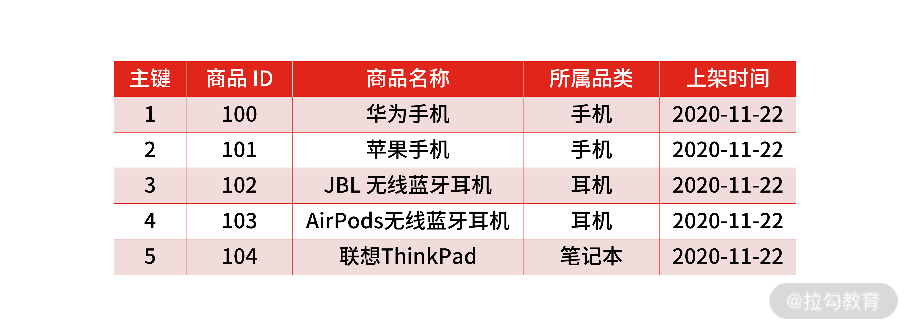
Range 分片
但是同样的，由于不同“商品品类”的业务热点不同，对于商品数据存储也会存在热点数据问题，这个时候处理的手段有两个。
1、垂直扩展
由于 Range 分片是按照业务特性进行的分片策略，所以可以对热点数据做垂直扩展，即提升单机处理能力。在业务发展突飞猛进的初期，建议使用“增强单机硬件性能”的方式提升系统处理能力，因为此阶段，公司的战略往往是发展业务抢时间，“增强单机硬件性能”是最快的方法。
2、分片元数据
单机性能总是有极限的，互联网分布式架构设计高并发终极解决方案还是水平扩展，所以结合业务的特性，就需要在 Range 的基础上引入“分片元数据”的概念：分片的规则记录在一张表里面，每次执行查询的时候，先去表里查一下要找的数据在哪个分片中。
这种方式的优点是灵活性高，并且分片规则可以随着业务发展随意改动。比如当某个分片已经是热点了，那就可以把这个分片再拆成几个分片，或者把这个分片的数据移到其他分片中去，然后修改一下分片元数据表，就可以在线完成数据的再分片了。

分片元数据
但你要注意，分片元数据本身需要做高可用（面试考察点可以参考 04 讲中的内容）。方案缺点是实现起来复杂，需要二次查询，需要保证分片元数据服务的高可用。不过分片元数据表可以通过缓存进行提速。
- 垂直水平拆分
垂直水平拆分，是综合垂直和水平拆分方式的一种混合方式，垂直拆分把不同类型的数据存储到不同库中，再结合水平拆分，使单表数据量保持在合理范围内，提升性能。

垂直水平拆分
如何解决数据查询问题？
分库分表引入的另外一个问题就是数据查询的问题（比较常见），比如面试官会问类似的问题：
在未分库分表之前，我们查询数据总数时，可以直接通过 SQL 的 count() 命令，现在数据分片到多个库表中，如何解决呢？
解题思路很多，你可以考虑其他的存储方案，比如聚合查询使用频繁时，可以将聚合查询的数据同步到 ES 中，或者将计数的数据单独存储在一张表里。如果是每日定时生成的统计类报表数据，也可以将数据同步到 HDFS 中，然后用一些大数据技术来生成报表。
技术认知
不夸张地说，MySQL 是每个后端开发人员都要精通的数据库，因为其开源、轻量级，且有着金融级别的事务保证，所以一直是互联网项目的标配。
但是随着近些年技术的发展，下一代存储技术上出现了 NewSQL ，我觉得未来它可能会取代 MySQL ：
NewSQL 是新一代的分布式数据库，不但具备分布式存储系统的高性能、高可用，弹性扩容等能力，还兼容传统关系型数据库的 SQL 标准。并且，还提供了和传统关系型数据库不相上下的事务保证，是具备了支撑未来交易类业务能力的。
为了能体现你个人的技术视野，我希望你在面试的过程中，也谈一些与存储这个技术领域有关的内容，比如 NewSQL 的发展和相关开源产品，如 CockroachDB、TiDB。你可以在面试前熟悉一下 NewSQL 数据库的原理，然后以其和现有关系型的区别为切入点，和面试官讨论即可。
总结
总的来说，在面对数据库容量瓶颈和写请求并发量大时，你可以选择垂直分片和水平分片：垂直分片一般随着业务架构拆分来进行；水平分片通常按照 Hash（哈希分片）取模和 Range（范围分片）进行，并且，通常的形态是垂直拆分伴随着水平拆分，即先按照业务垂直拆分后，再根据数据量的多少决定水平分片。
Hash 分片在互联网中应用最为广泛，简单易实现，可以保证数据非常均匀地分布到多个分片，但其过滤掉了业务属性，不能根据业务特性进行调整。而 Range 分片却能预估业务，更高效地扫描数据记录（Hash 分片由于数据被打散，扫描操作的 I/O 开销更大）。除了 Hash 分片和 Range 分片，更为灵活的方式是基于分片元数据。
不过你要注意，这几种方式也会引入诸如聚合查询的问题，要想解决聚合查询，你可以让聚合查询记录存储在其他存储设备中（比如 ES、HDFS）。
最后，除了中规中矩地回答面试官提出的问题，我也希望你能展示自己的技术视野，选择 NewSQL 作为切入点。
13 缓存原理：应对面试你要掌握 Redis 哪些原理？
这一讲我们聊一聊与 Redis 有关的话题。
提及缓存，就不得不提 Redis，Redis 已经是现在使用最广泛的缓存中间件了，这一讲，我以 Redis 的原理为切入点，带你了解在面试过程中那些与 Redis 原理有关的题目，帮你捋清答题思路，抓住重点。
案例背景
我们现在就模拟一场面试，假如我是面试官，你是候选人，我问你：
Redis 属于单线程还是多线程？
这道题其实就在考察 Redis 的线程模型（这几乎是 Redis 必问的问题之一）。
案例分析
很多初级研发工程师基本都知道 Redis 是单线程的，并且能说出 Redis 单线程的一些优缺点，比如，实现简单，可以在无锁的情况下完成所有操作，不存在死锁和线程切换带来的性能和时间上的开销，但同时单线程也不能发挥多核 CPU 的性能。
很明显，如果你停留在上面的回答思路上，只能勉强及格，因为对于这样一道经典的面试题，你回答得没有亮点，几乎丧失了机会。一个相对完整的思路应该基于 Redis 单线程，补充相关的知识点，比如：
- Redis 只有单线程吗？
Redis 是单线程的，主要是指 Redis 的网络 I/O 线程，以及键值的 SET 和 GET 等读写操作都是由一个线程来完成的。但 Redis 的持久化、集群同步等操作，则是由另外的线程来执行的。
- Redis 采用单线程为什么还这么快？
一般来说，单线程的处理能力应该要比多线程差才对，但为什么 Redis 还能达到每秒数万级的处理能力呢？主要有如下几个原因。
首先，一个重要的原因是，Redis 的大部分操作都在内存中完成，并且采用了高效的数据结构，比如哈希表和跳表。
其次，因为是单线程模型避免了多线程之间的竞争，省去了多线程切换带来的时间和性能上的开销，而且也不会导致死锁问题。
最后，也是最重要的一点， Redis 采用了 I/O 多路复用机制（参考 07 讲，这里不再赘述）处理大量的客户端 Socket 请求，这让 Redis 可以高效地进行网络通信，因为基于非阻塞的 I/O 模型，就意味着 I/O 的读写流程不再阻塞。
但是因为 Redis 不同版本的特殊性，所以对于 Redis 的线程模型要分版本来看。
Redis 4.0 版本之前，使用单线程速度快的原因就是上述的几个原因；
Redis 4.0 版本之后，Redis 添加了多线程的支持，但这时的多线程主要体现在大数据的异步删除功能上，例如 unlink key、flushdb async、flushall async 等。
Redis 6.0 版本之后，为了更好地提高 Redis 的性能，新增了多线程 I/O 的读写并发能力，但是在面试中，能把 Redis 6.0 中的多线程模型回答上来的人很少，如果你能在面试中补充 Redis 6.0 多线程的原理，势必会增加面试官对你的认可。
你可以在面试中这样补充：
虽然 Redis 一直是单线程模型，但是在 Redis 6.0 版本之后，也采用了多个 I/O 线程来处理网络请求，这是因为随着网络硬件的性能提升，Redis 的性能瓶颈有时会出现在网络 I/O 的处理上，所以为了提高网络请求处理的并行度，Redis 6.0 对于网络请求采用多线程来处理。但是对于读写命令，Redis 仍然使用单线程来处理。
当然了， “Redis 的线程模型”只是 Redis 原理中的一个考点，如果你想做足准备，回答好 Redis 相关的问题，还需前提掌握 Redis 的主线知识点。我从高性能、高可用的角度出发，把 Redis 的核心原理考点梳理成一张图（之所以整理这样的体系结构，是因为你最容易在以下的考点中出错、踩坑，也是为了便于你的记忆）：

Redis 高性能和高可用的核心考点
从图中，你可以看到，线程模型只是高性能考点中的一环，而高可用考点中，包括了持久化、数据复制（主从复制，哨兵复制）等内容。所以在讲完 Redis 的线程模型的考点之后，接下来咱们再来了解持久化和数据复制的考点。
关于持久化和数据复制，面试官不会问得很直白，比如“Redis 的持久化是怎么做的？”而是立足在某一个问题点：
- Redis 是如何实现数据不丢失的（考察持久化）？
- Redis 是如何实现服务高可用的（考察数据复制）？
案例解答
Redis 如何实现数据不丢失？
我们知道，缓存数据库的读写都是在内存中，所以它的性能才会高，但在内存中的数据会随着服务器的重启而丢失，为了保证数据不丢失，要把内存中的数据存储到磁盘，以便缓存服务器重启之后，还能够从磁盘中恢复原有的数据，这个过程就是 Redis 的数据持久化。
这也是 Redis 区别于其他缓存数据库的优点之一（比如 Memcached 就不具备持久化功能）。Redis 的数据持久化有三种方式。
- AOF 日志（Append Only File，文件追加方式）：记录所有的操作命令，并以文本的形式追加到文件中。
- RDB 快照（Redis DataBase）：将某一个时刻的内存数据，以二进制的方式写入磁盘。
- 混合持久化方式：Redis 4.0 新增了混合持久化的方式，集成了 RDB 和 AOF 的优点。
接下来我们看一下这三种方式的实现原理。
AOF 日志是如何实现的？
通常情况下，关系型数据库（如 MySQL）的日志都是“写前日志”（Write Ahead Log, WAL），也就是说，在实际写数据之前，先把修改的数据记到日志文件中，以便当出现故障时进行恢复，比如 MySQL 的 redo log（重做日志），记录的就是修改后的数据。
而 AOF 里记录的是 Redis 收到的每一条命令，这些命令是以文本形式保存的，不同的是，Redis 的 AOF 日志的记录顺序与传统关系型数据库正好相反，它是写后日志，“写后”是指 Redis 要先执行命令，把数据写入内存，然后再记录日志到文件。
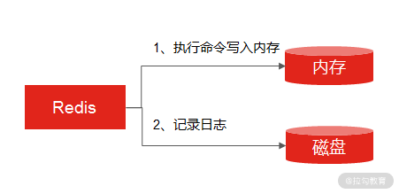
AOF 执行过程
那么面试的考察点来了：Reids 为什么先执行命令，在把数据写入日志呢？为了方便你理解，我整理了关键的记忆点：
- 因为 ，Redis 在写入日志之前，不对命令进行语法检查；
- 所以，只记录执行成功的命令，避免了出现记录错误命令的情况；
- 并且，在命令执行完之后再记录，不会阻塞当前的写操作。
当然，这样做也会带来风险（这一点你也要在面试中给出解释）。
- 数据可能会丢失： 如果 Redis 刚执行完命令，此时发生故障宕机，会导致这条命令存在丢失的风险。
- 可能阻塞其他操作： 虽然 AOF 是写后日志，避免阻塞当前命令的执行，但因为 AOF 日志也是在主线程中执行，所以当 Redis 把日志文件写入磁盘的时候，还是会阻塞后续的操作无法执行。
又因为 Redis 的持久化离不开 AOF 和 RDB，所以我们就需要学习 RDB。
那么 RDB 快照是如何实现的呢？
因为 AOF 日志记录的是操作命令，不是实际的数据，所以用 AOF 方法做故障恢复时，需要全量把日志都执行一遍，一旦日志非常多，势必会造成 Redis 的恢复操作缓慢。
为了解决这个问题，Redis 增加了 RDB 内存快照（所谓内存快照，就是将内存中的某一时刻状态以数据的形式记录在磁盘中）的操作，它即可以保证可靠性，又能在宕机时实现快速恢复。
和 AOF 不同的是，RDB 记录 Redis 某一时刻的数据，而不是操作，所以在做数据恢复时候，只需要直接把 RDB 文件读入内存，完成快速恢复。
以上是 RDB 的主要原理，这里存在两个考点。
- RDB 做快照时会阻塞线程吗？
因为 Redis 的单线程模型决定了它所有操作都要尽量避免阻塞主线程，所以对于 RDB 快照也不例外，这关系到是否会降低 Redis 的性能。
为了解决这个问题，Redis 提供了两个命令来生成 RDB 快照文件，分别是 save 和 bgsave。save 命令在主线程中执行，会导致阻塞。而 bgsave 命令则会创建一个子进程，用于写入 RDB 文件的操作，避免了对主线程的阻塞，这也是 Redis RDB 的默认配置。
- RDB 做快照的时候数据能修改吗？
这个问题非常重要，考察候选人对 RDB 的技术掌握得够不够深。你可以思考一下，如果在执行快照的过程中，数据如果能被修改或者不能被修改都会带来什么影响？
- 如果此时可以执行写操作：意味着 Redis 还能正常处理写操作，就可能出现正在执行快照的数据是已经被修改了的情况；
- 如果此时不可以执行写操作：意味着 Redis 的所有写操作都得等到快照执行完成之后才能执行，那么就又出现了阻塞主线程的问题。
那Redis 是如何解决这个问题的呢？ 它利用了 bgsave 的子进程，具体操作如下：
- 如果主线程执行读操作，则主线程和 bgsave 子进程互相不影响；
- 如果主线程执行写操作，则被修改的数据会复制一份副本，然后 bgsave 子进程会把该副本数据写入 RDB 文件，在这个过程中，主线程仍然可以直接修改原来的数据。
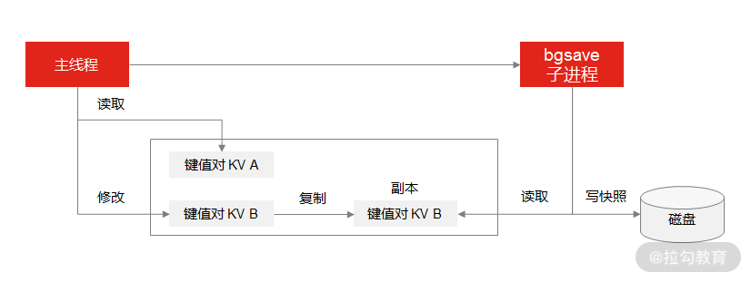
Redis 是如何保证执行快照期间数据可修改
要注意，Redis 对 RDB 的执行频率非常重要，因为这会影响快照数据的完整性以及 Redis 的稳定性，所以在 Redis 4.0 后，增加了 AOF 和 RDB 混合的数据持久化机制： 把数据以 RDB 的方式写入文件，再将后续的操作命令以 AOF 的格式存入文件，既保证了 Redis 重启速度，又降低数据丢失风险。
我们来总结一下，当面试官问你“Redis 是如何实现数据不丢失的”时，你首先要意识到这是在考察你对 Redis 数据持久化知识的掌握程度，那么你的回答思路是：先说明 Redis 有几种持久化的方式，然后分析 AOF 和 RDB 的原理以及存在的问题，最后分析一下 Redis 4.0 版本之后的持久化机制。
Redis 如何实现服务高可用？
另外，Redis 不仅仅可以用来当作缓存，很多时候也会直接作为数据存储，那么你就要一个高可用的 Redis 服务，来支撑和保证业务的正常运行。那么你怎么设计一个不宕机的 Redis 高可用服务呢？
思考一下，解决数据高可用的手段是什么？是副本。那么要想设计一个高可用的 Redis 服务，一定要从 Redis 的多服务节点来考虑，比如 Redis 的主从复制、哨兵模式，以及 Redis 集群。这三点是你一定要在面试中回答出来的。
- 主从同步 (主从复制)
这是 Redis 高可用服务的最基础的保证，实现方案就是将从前的一台 Redis 服务器，同步数据到多台从 Redis 服务器上，即一主多从的模式，这样我们就可以对 Redis 做读写分离了，来承载更多的并发操作，这里和 MySQL 的主从复制原理上是一样的。
- Redis Sentinel（哨兵模式）
在使用 Redis 主从服务的时候，会有一个问题，就是当 Redis 的主从服务器出现故障宕机时，需要手动进行恢复，为了解决这个问题，Redis 增加了哨兵模式（因为哨兵模式做到了可以监控主从服务器，并且提供自动容灾恢复的功能）。

哨兵模式
- Redis Cluster（集群）
Redis Cluster 是一种分布式去中心化的运行模式，是在 Redis 3.0 版本中推出的 Redis 集群方案，它将数据分布在不同的服务器上，以此来降低系统对单主节点的依赖，从而提高 Redis 服务的读写性能。

集群
Redis Cluster 方案采用哈希槽（Hash Slot），来处理数据和实例之间的映射关系。在 Redis Cluster 方案中，一个切片集群共有 16384 个哈希槽，这些哈希槽类似于数据分区，每个键值对都会根据它的 key，被映射到一个哈希槽中，具体执行过程分为两大步。
- 根据键值对的 key，按照 CRC16 算法计算一个 16 bit 的值。
- 再用 16bit 值对 16384 取模，得到 0~16383 范围内的模数，每个模数代表一个相应编号的哈希槽。
剩下的一个问题就是，这些哈希槽怎么被映射到具体的 Redis 实例上的呢？有两种方案。
- 平均分配： 在使用 cluster create 命令创建 Redis 集群时，Redis 会自动把所有哈希槽平均分布到集群实例上。比如集群中有 9 个实例，则每个实例上槽的个数为 16384/9 个。
- 手动分配： 可以使用 cluster meet 命令手动建立实例间的连接，组成集群，再使用 cluster addslots 命令，指定每个实例上的哈希槽个数，为了方便你的理解，我通过一张图来解释数据、哈希槽，以及实例三者的映射分布关系。
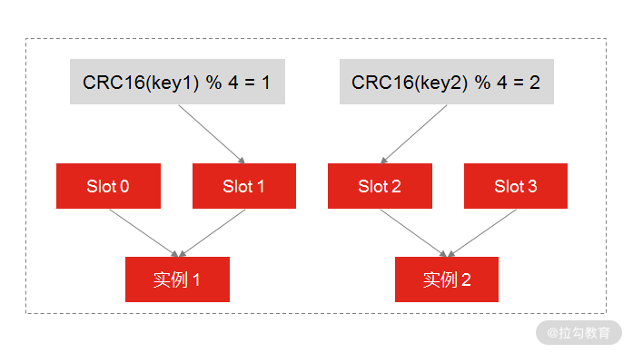
Redis 手动分配哈希槽
示意图中的分片集群一共有 3 个实例，假设有 4 个哈希槽时，我们就可以通过命令手动分配哈希槽，比如实例 1 保存哈希槽 0 和 1，实例 2 保存哈希槽 2 和 3。
然后在集群运行的过程中，key1 和 key2 计算完 CRC16 值后，对哈希槽总个数 5 进行取模，再根据各自的模数结果，就可以被映射到对应的实例 1 和实例 3 上了。
我们再来总结一下，主从同步是 Redis 高可用最基础的服务高可用方案，但它当发生故障时，需要手动恢复故障，因此就有了哨兵模式用于监控和实现主从服务器的自动容灾。最后我讲了目前最常用的高可用方案 Redis 集群，这三种高可用方式都是你需要掌握的。
总结
这一讲，我讲了 Redis 的三个核心问题：线程模型、数据持久化，以及高可用，我想强调这样几个重点：
- 对于线程模型的知识点，你要分开三条线进行理解（Redis 4.0 之前、Redis 4.0 之后，以及 Redis 6.0）。
- 对于数据持久化，你要掌握 Redis 持久化的几种方案，AOF 和 RDB 的原理，以及为了弥补他们的缺点，Redis 增加了混合持久化方式，以较小的性能开销保证数据的可靠性。
- 实现高可用的三种手段：主从同步、哨兵模式和 Redis 集群服务，对于 Redis 集群，你要掌握哈希槽的数据分布机制，以及自动分配和手动分配的实现原理 。
最后，我还要强调一下，Redis 是应聘初中级研发工程师必问的知识点，它是目前缓存数据库的代名词，所以对于 Redis 知识点的掌握，无论是在面试过程中，还是在实际的工作中，都是经常要用到的。
14 缓存策略：面试中如何回答缓存穿透、雪崩等问题？
上一讲，我带你学习了开源缓存数据库 Redis 的原理（比如线程模型、数据持久化，以及数据复制）。这一讲，我们从应用案例入手，来了解经常遇到的缓存设计问题，比如缓存雪崩、缓存并发，缓存穿透等。
案例背景
我们来模拟一个面试场景（如图所示） ：
系统收到用户的频繁查询请求时，会先从缓存中查找数据，如果缓存中有数据，直接从中读取数据，响应给请求方；如果缓存中没有数据，则从数据库中读取数据，然后再更新缓存，这样再获取这条数据时，可以直接从缓存中获取，不用再读取数据库。

缓存设计方案
这是一种常见的解决“查询请求频繁”的设计方案，那么这种方案在查询请求并发较高时，会存在什么问题呢？
案例分析
从“案例背景”中，你可以发现，在面试中面试官通常考察“缓存设计”的套路是：给定一个场景（如查询请求量较高的场景）先让候选人说明场景中存在的问题，再给出解决方案。
我们以“电商平台商品详情页”为例，商品详情页中缓存了商品名称、描述、价格、优惠政策等信息，在双十一大促时，商品详情页的缓存经常存在缓存穿透、缓存并发、缓存雪崩，以及缓存设计等问题，接下来我们就重点解决这些高频问题，设计出一套高可用高性能的缓存架构方案。
案例解答
缓存穿透问题
缓存穿透指的是每次查询个别 key 时，key 在缓存系统不命中，此时应用系统就会从数据库中查询，如果数据库中存在这条数据，则获取数据并更新缓存系统。但如果数据库中也没有这条数据，这个时候就无法更新缓存，就会造成一个问题：查询缓存中不存在的数据时，每次都要查询数据库。

缓存穿透
那么如果有人利用“查询缓存中不存在的数据时，每次都要查询数据库”恶意攻击的话，数据库会承担非常大的压力，甚至宕机。
解决缓存穿透的通用方案是： 给所有指定的 key 预先设定一个默认值，比如空字符串“Null”，当返回这个空字符串“Null”时，我们可以认为这是一个不存在的 key，在业务代码中，就可以判断是否取消查询数据库的操作，或者等待一段时间再请求这个 key。如果此时取到的值不再是“Null”，我们就可以认为缓存中对应的 key 有值了，这就避免出现请求访问到数据库的情况，从而把大量的类似请求挡在了缓存之中。
缓存并发问题
假设在缓存失效的同时，出现多个客户端并发请求获取同一个 key 的情况，此时因为 key 已经过期了，所有请求在缓存数据库中查询 key 不命中，那么所有请求就会到数据库中去查询，然后当查询到数据之后，所有请求再重复将查询到的数据更新到缓存中。
这里就会引发一个问题，所有请求更新的是同一条数据，这不仅会增加数据库的压力，还会因为反复更新缓存而占用缓存资源，这就叫缓存并发。那你怎么解决缓存并发呢？

解决缓存并发
- 首先，客户端发起请求，先从缓存中读取数据，判断是否能从缓存中读取到数据；
- 如果读取到数据，则直接返回给客户端，流程结束；
- 如果没有读取到数据，那么就在 Redis 中使用 setNX 方法设置一个状态位，表示这是一种锁定状态；
- 如果锁定状态设置成功，表示已经锁定成功，这时候请求从数据库中读取数据，然后更新缓存，最后再将数据返回给客户端；
- 如果锁定状态没有设置成功，表示这个状态位已经被其他请求锁定，此时这个请求会等待一段时间再重新发起数据查询；
- 再次查询后发现缓存中已经有数据了，那么直接返回数据给客户端。
这样就能保证在同一时间只能有一个请求来查询数据库并更新缓存系统，其他请求只能等待重新发起查询，从而解决缓存并发的问题。
缓存雪崩问题
我们在实际开发过程中，通常会不断地往缓存中写数据，并且很多情况下，程序员在开发时，会将缓存的过期时间设置为一个固定的时间常量（比如 1 分钟、5 分钟）。这就可能出现系统在运行中，同时设置了很多缓存 key，并且这些 key 的过期时间都一样的情况，然后当 key 到期时，缓存集体同时失效，如果此时请求并发很高，就会导致大面积的请求打到数据库，造成数据库压力瞬间增大，出现缓存雪崩的现象。
对于缓存雪崩问题，我们可以采用两种方案解决。
- 将缓存失效时间随机打散： 我们可以在原有的失效时间基础上增加一个随机值（比如 1 到 10 分钟）这样每个缓存的过期时间都不重复了，也就降低了缓存集体失效的概率。
- 设置缓存不过期： 我们可以通过后台服务来更新缓存数据，从而避免因为缓存失效造成的缓存雪崩，也可以在一定程度上避免缓存并发问题。
讲到这儿，缓存穿透、并发、雪崩的相关问题我们就讲完了。在通常情况下，面试官还会出一些缓存设计问题，比如：
- 怎么设计一个动态缓存热点数据的策略？
- 怎么设计一个缓存操作与业务分离的架构？
这是作为中高级研发工程师必须要掌握的内容。
面试官会这样问：由于数据存储受限，系统并不是将所有数据都需要存放到缓存中的，而只是将其中一部分热点数据缓存起来，那么就引出来一个问题，即如何设计一个缓存策略，可以动态缓存热点数据呢？
我们同样举电商平台场景中的例子，现在要求只缓存用户经常访问的 Top 1000 的商品。

解决缓存热点问题
那么缓存策略的总体思路：就是通过判断数据最新访问时间来做排名，并过滤掉不常访问的数据，只留下经常访问的数据，具体细节如下。
- 先通过缓存系统做一个排序队列（比如存放 1000 个商品），系统会根据商品的访问时间，更新队列信息，越是最近访问的商品排名越靠前。
- 同时系统会定期过滤掉队列中排名最后的 200 个商品，然后再从数据库中随机读取出 200 个商品加入队列中。
- 这样当请求每次到达的时候，会先从队列中获取商品 ID，如果命中，就根据 ID 再从另一个缓存数据结构中读取实际的商品信息，并返回。
- 在 Redis 中可以用 zadd 方法和 zrange 方法来完成排序队列和获取 200 个商品的操作。
前面的内容中，我们都是将缓存操作与业务代码耦合在一起，这样虽然在项目初期实现起来简单容易，但是随着项目的迭代，代码的可维护性会越来越差，并且也不符合架构的“高内聚，低耦合”的设计原则，那么如何解决这个问题呢？
回答的思路可以是这样：将缓存操作与业务代码解耦，实现方案上可以通过 MySQL Binlog + Canal + MQ 的方式。
我举一个实际的场景，比如用户在应用系统的后台添加一条配置信息，配置信息存储到了 MySQL 数据库中，同时数据库更新了 Binlog 日志数据，接着再通过使用 Canal 组件来获读取最新的 Binlog 日志数据，然后解析日志数据，并通过事先约定好的数据格式，发送到 MQ 消息队列中，最后再由应用系统将 MQ 中的数据更新到 Redis 中，这样就完成了缓存操作和业务代码之间的解耦。
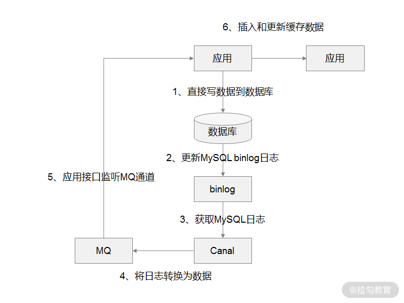
解决缓存操作与业务系统分离
总结
为了方便你记忆，我总结一下今天的内容：

今天这一讲，我推荐采用预设值方案解决缓存穿透（当然还有基于布隆过滤器的实现方式，但它本身存在误判的情况，实现起来也较复杂，所以我不推荐使用，不过你可以了解一下）。另外，你可以利用 Redis 的 setNX 方法来配合解决缓存并发。除此之外，你可以通过将缓存失效时间随机打散，或者设置缓存不过期，解决缓存雪崩的问题。
15 如何向面试官证明你做的系统是高可用的？
我们已经用了五个模块分别讲了架构原理、分布式技术、中间件、数据库，以及缓存，这些都是面试中必考的技术领域和技术点，又因为我们处在大数据和互联网时代，所以高可用高性能这些非功能性需求的考察，也是你需要了解的，所以在最后一个模块，我会带你打卡高可用高性能的架构设计面试实战。
我在 01 讲中说过，高级研发工程师和架构师的区别不在于掌握了多少技术，而在于你所能驾驭系统的边界。这其实也反映了一个研发工程师的成长历程，起初独立负责一个功能，然后负责一个系统模块，再负责一个系统，最后负责多个系统或业务条线。
但是不管你在哪个阶段，有一个问题你肯定逃不开：怎么证明自己负责的系统是高可用的？因为任何一个系统架构初衷，最基本的诉求是要保证系统的稳定性和可用性，然后才是基于高流量的场景下，保证系统的并发承载能力。
案例背景
一般来讲，面试官在考察你系统架构的设计能力时，经常会让你说一下你在上一家公司是怎么设计系统架构的，以此了解你的设计能力和思路。
而你在讲解架构设计时，也是在向面试官逐步证明，自己负责的系统是如何做到高可用的。这会涉及一个公认的论证——SLA。服务等级协议（Service-Level Agreement，SLA）最根本的形式是协议双方（服务提供者和用户）签订的一个合约或协议。这个合约规范了双方的商务关系或部分商务关系。简单点儿说，你可以认为 SLA 是服务可用性一个重要衡量指标。
业界一般用几个 9 的 SLA 服务等级来衡量互联网应用的可用性。比如京东的可用性是 4 个 9（京东的服务 99.99% 可用）：京东的服务要保证在所有的运行时间里只有 0.01% 不可用，也就是说一年大概有 52.6 分钟不可用，这个 99.99% 就叫作系统的可用性指标。
52.6 分钟是怎么计算出来的呢？

SLA 的计算公式
从公式中可以看出， SLA 等于 4 个 9，也就是可用时长达到了 99.99% ，不可用时长则为是0.01%，一年是 365 天， 8760 个小时，一年的不可用时长就是 52.6 分钟，那么：
- SLA 等于 3 个 9，就相当于一年不可用时长等于 526 分钟；
- SLA 等于 5 个 9，就相当于一年不可用时长等于 5.26 分钟。
可以发现，用 SLA 等于 4 个9 作为参照物，少个 9 相当于小数点往后移一位，多个 9 相当于小数点往前移一位（我把系统可用性指标总结成一张表格）。
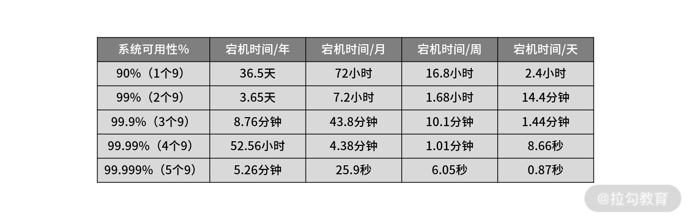
系统可用性指标
那么问题就来了： 既然 SLA 是服务可用性的一个衡量指标，那么你在面试时，怎么设置这个指标的阈值才合理呢？
- 一般来讲，2 个 9 表示系统基本可用，年度不可用时间小于 88 小时。
- 3 个 9 是较高可用，年度不可用时间小于 9 个小时。
- 4 个 9 是具有自动恢复能力的高可用，年度不可用时间小于 53 分钟。
- 5 个 9 指极高的可用性，年度不可用时间小于 5 分钟。
在电商平台中（比如淘宝、京东、拼多多），系统可用性大多是 4 个 9。那么你在回答时，一要了解 SLA 的概念，N 个 9 代表什么含义，更要清楚互联网对于 SLA 的主流设定阈值。
讲到这儿，你可能会觉得：那我清楚了 SLA 的概念，然后也了解了 SLA 的主流设定阈值，当面试官问我“你们的系统高可用做得怎么样”时，我回答系统做到了 N 个 9 是不是就可以了？
案例分析
给你 10 秒钟的时间思考一下，当面试官听到你按照时间指标度量系统可用性，会不会满意？
要知道，任何一家互联网公司，都有流量的低峰期和高峰期，你在低峰期停机 1 分钟和高峰期停机 1 分钟，对业务影响的结果完全不同。如果认识不到这一点，面试官很容易认为你很业余，并没有实践经验。
所以，仅凭理论指标在有些情况下是不能满足实际需求的，那有没有更加科学的度量方式呢？答案就是基于一段时间（比如 1 年）的停机影响的请求量占比，进行评估，公式如下：
这样一来，你就可以评估，业务在高峰期停机和在低峰期停机分别造成多少的损失了。所以，如果你再回答系统高可用指标的时候，我建议你可以遵循这样的套路：先摆明度量的两种方式，“N 个 9” 和 “影响请求量占比”，然后再结合实际业务场景表明第二种方式的科学性。
总的来说，作为候选人，要立足业务价值去回答问题，不是仅停留于技术概念的堆砌，这才能体现你的思考。
当然了，以上的内容基本可以满足你应聘初中级研发工程师的需求，如果你要面试高级研发工程师或者是架构师，你还要有一个思路的闭环。为了方便你的记忆，我把这个思路总结为：“可评估”“可监控”“可保证”。
所以，当你向面试官证明系统高可用时，其实是在回答这样几个问题：
- 如何评估系统高可用？
- 如何监控系统高可用？
- 如何保证系统高可用？
接下来，我们继续学习“如何监控系统高可用”至于“如何保证系统高可用”我将在下一讲中为你解答。
案例解答
我们以设计一个保证系统服务 SLA 等于 4 个 9 的监控报警体系为例。监控系统包括三个部分：基础设施监控报警、系统应用监控报警，以及存储服务监控报警。 接下来，我就围绕这三个最核心的框架带你设计一个监控系统，并基于监控系统的设计，让你了解到系统哪些环节会影响系统整体的可用性，从而在面试中对系统高可用设计有更加清晰的掌握。
- 基础设施监控
基础设施监控由三个部分组成：监控报警指标、监控工具以及报警策略。
监控报警指标分为两种类型。
- 系统要素指标：主要有 CPU、内存，和磁盘。
- 网络要素指标：主要有带宽、网络 I/O、CDN、DNS、安全策略、和负载策略。
为什么我们要监控这些指标？因为它们是判断系统的基础环境是否为高可用的重要核心指标。

监控报警指标
监控工具常用的有ZABBIX（Alexei Vladishev 开源的监控系统，覆盖市场最多的老牌监控系统，资料很多）、Open-Falcon（小米开源的监控系统，小米、滴滴、美团等公司内部都在用）、Prometheus（SoundCloud 开源监控系统，对 K8S 的监控支持更好）。这些工具基本都能监控所有系统的 CPU、内存、磁盘、网络带宽、网络 I/O 等基础关键指标，再结合一些运营商提供的监控平台，就可以覆盖整个基础设施监控。
监控报警策略一般由时间维度、报警级别、阈值设定三部分组成。

监控报警策略
为了方便你理解监控报警策略，我举个例子。假设系统的监控指标有CPU、内存和磁盘，监控的时间维度是分钟级，监控的阈值设置为占比。那么你可以定义出如下的监控报警策略：
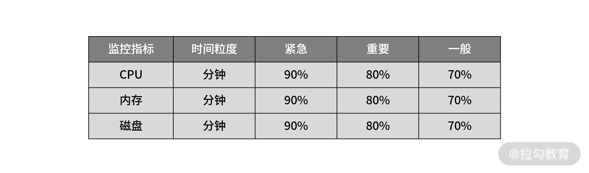
为了第一时间监测到指标的健康度，报警级别可以分为紧急、重要，以及一般。当 CPU、内存，以及磁盘使用率这三项指标的每分钟采集的指标达到 90% 使用率时，就触发“紧急报警”；达到 80% 触发“重要报警”；70% 触发“一般报警”。
- 系统应用监控
业务状态监控报警，关注点在于系统自身状态的监控报警。和基础设施监控一样，它也是由监控指标，监控工具，报警策略组成，不同的是，系统应用监控报警的核心监控指标主要有流量、耗时、错误、心跳、客户端数、连接数等 6 个核心指标，监控工具有 CAT、SkyWalking、Pinpoint、Zipkin 等。

系统应用监控
- 存储服务监控
一般来讲，常用的第三方存储有 DB、ES、Redis、MQ 等。
对于存储服务的监控，除了基础指标监控之外，还有一些比如集群节点、分片信息、存储数据信息等相关特有存储指标的监控。
对于存储服务监的内容细节，我这里就不再一一介绍，在面试中，你只需要基于监控系统的三个核心组成部分（基础设施监控、系统应用监控、存储服务监控）来回答问题即可，比如，你可以回答：我为了确保系统的健康可靠，设计了一套监控体系，用于在生产环境对系统的可用性进行监控，具体的指标细节可以结合业务场景进行裁剪，比如你们是游戏领域，所以很关注流量和客户端连接数。
总的来说，让面试官认可你有一个全局的监控视角，比掌握很多监控指标更为重要。
当然，很多互联网公司都很重视系统服务稳定性的工作，因为服务的稳定性直接影响用户的体验和口碑，线上服务稳定性是研发工程师必须要重点关注的问题。所以当你回答完上述问题后，有的面试官为了考察候选人的责任意识，一般还会追问：“如果线上出现告警，你作为核心研发，该怎么做呢？”
对于线上故障，要有应急响应机制，我总结以下几点供你参考：
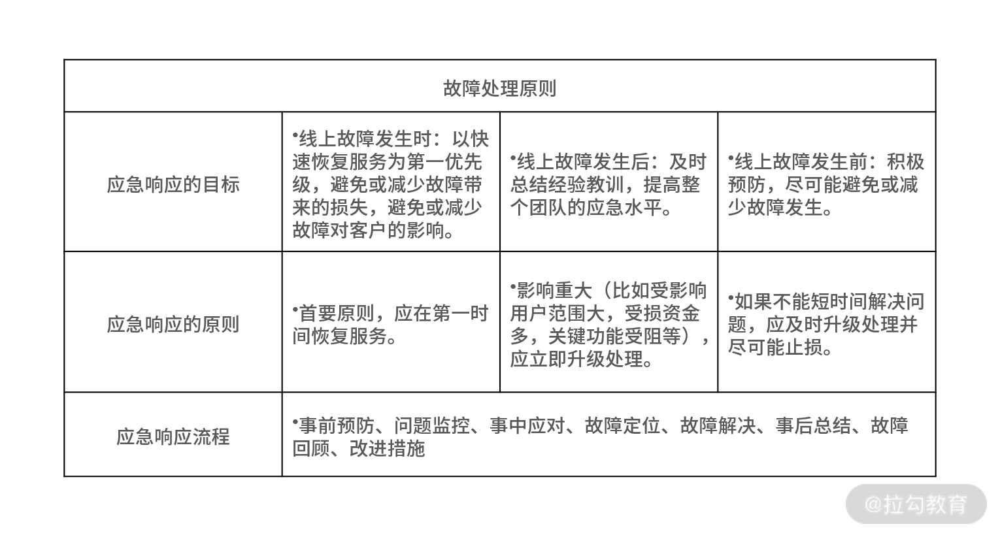
总结
我们来回顾一下今天的重点内容。
为了在面试中更好地回答怎么评估系统高可用，我们讲解了 SLA 的概念以及评估方法，并得出“以停机时间影响的系统请求量作为评估指标”比较科学。
为了确保线上服务的稳定运行，在设计监控系统时，要考虑三个核心点，基础设施监控、系统应用监控，以及存储服务监控。
另外，我强调了故障处理是研发工程师在进阶过程中必须经历的，而故障处理能力也是面试官最为看重的能力之一，所以对于怎么处理各类故障，你要形成一套体系化的知识框架。
为了方便你的记忆，我将今天的内容总结如下。

16 如何从架构师角度回答系统容错、降级等高可用问题？
上一讲，我带你学习了“评估系统高可用的指标”以及“如何监控系统高可用”今天这一讲，我们继续学习保证系统高可用的有效手段，比如系统容错、降级等，以及在面试时的重要考察点。
系统容错、降级等手段你肯定不陌生，很多文章都反复重申过，所以我的重点不再是普及相关理论知识，而是带你深入面试中对架构高可用问题的考察，带你避免面试中的易错点。
案例背景
先来看这样一道面试题：

商品的一次查询
某电商平台中有商品系统、促销系统、积分系统。商品的一次查询操作是由网关系统先调用商品系统查询商品列表，然后根据返回的商品列表信息，再查询促销和积分系统，匹配商品信息的促销活动和积分奖励，最终返回给客户端展示给用户。
大部分互联网公司，会有专门的研发团队分别负责这三个系统（比如 A 团队负责商品系统、 B 团队负责促销系统）。这会带来一个问题：出现流量高峰期时，虽然作为服务请求入口的商品系统很容易扩容，但对于商品系统依赖的其他服务，就不会有实时性的响应。
那么促销或积分系统就可能因为无法承担大流量，请求处理缓慢，从而让执行商品查询操作的服务线程阻塞，不能释放，直到所有线程资源被占满，无法处理后续的请求。
对于这种问题，你该如何处理呢？
案例分析
这道面试题就涉及了高可用架构的设计，我们再来分析一下商品的调用链条。在电商平台的商品系统中，一次系统查询的流程经历了三次调用，从网关系统开始，然后依次调用商品系统、促销系统、积分系统的三个服务，如果此时积分系统的响应时间变长，那么整条请求的响应时间也会因此变长，整体服务甚至会发生宕机。这就是服务雪崩现象：即局部故障最终导致了全局故障。
在分布式环境下，系统某一个服务或者组件响应缓慢，从而拖垮整个系统的情况随处可见。那你要怎么避免呢？这就涉及我们在 15 讲中的内容了。在 15 讲中我提到了，对于系统可用性，你要通过三个方面来解决：分别是“评估”“检测”和“保证”，具体如下。
- 用科学的方法评估系统的可用性指标；
- 通过实时监控预警检测系统的可用性；
- 通过系统架构设计保证系统的可用性。
解决的思路是：在分布式系统中，当检测到某一个系统或服务响应时长出现异常时，要想办法停止调用该服务，让服务的调用快速返回失败，从而释放此次请求持有的资源。这就是架构设计中经常提到的降级和熔断机制。
对应到面试中，面试官一般会通过如下两个问题考察候选者：
- 熔断和降级是怎么做的（考察你对原理性知识的掌握）？
- 你在项目中如何实现熔断降级（考察你的实战能力）？
你先要了解熔断和降级的原理，再结合实践设计实现它们。
案例解答
熔断设计的原理
形象一点儿说：熔断机制参考了电路中保险丝的保护原理，当电路出现短路、过载时，保险丝就会自动熔断，保证整体电路的安全。
而在微服务架构中，服务的熔断机制是指：在服务 A 调用服务 B 时，如果 B 返回错误或超时的次数超过一定阈值，服务 A 的后续请求将不再调用服务 B。这种设计方式就是断路器模式。
在这种模式下，服务调用方为每一个调用的服务维护一个有限状态机，在这个状态机中存在关闭、半打开和打开三种状态。
- 关闭：正常调用远程服务。
- 半打开：尝试调用远程服务。
- 打开：直接返回错误，不调用远程服务。
这三种状态之间切换的过程如下。
- “关闭”转换“打开”：当服务调用失败的次数累积到一定的阈值时，服务熔断状态，将从关闭态切换到打开态。
- “打开”转换“半打开”：当熔断处于打开状态时，我们会启动一个超时计时器，当计时器超时后，状态切换到半打开态。
- “半打开”转换“关闭”：在熔断处于半打开状态时，请求可以达到后端服务，如果累计一定的成功次数后，状态切换到关闭态。

熔断状态变更示意图
在工作中，研发工程师经常会通过 Netflix 的开源项目 Hystrix 来实现熔断的功能，并不会探究其中的原理，我在 07 讲中就说过：
虽然在实际工作中不推荐重复“造轮子”，但在面试中要证明自己具备“造轮子”的能力，因为要评价一个程序员是否对技术栈有全面的认识，考察其“造轮子”的能力是一个不错的切入点。
所以很多时候，面试官也会考察你在不通过开源组件的前提下，怎么实现断路器的功能。
如何设计实现一个断路器

断路器的流程图
- “关闭”转“打开”： 当请求到来，首先判断是否在熔断中，如果没有熔断，则正常调用系统服务，此时统计系统的调用状态，如果失败次数超过阈值，则断路器“打开”。
// 如果是关闭状态
if(breaker.isClose()) {
// 失败次数超过阈值
if(failCount.incrementAndGet() >= FAILS_THRESHOLD) {
// 设置为打开状态
breaker.setOpen();
}
}
- “打开”转“半打开”： 如果已经熔断，就初始化一个定时器，定期检测服务状态的可用性，如果服务达到了熔断的倒计时，则设置当前熔断器为“半打开”状态。
// 初始化定时器定期检测服务是否可用
new Timer("Service-Recover", true).scheduleAtFixedRate(new TimerTask() {
@Override
public void run() {
if (breaker.isOpen()) {
// 设置为半打开态
breaker.setHalfOpen();
}
}
}, 0, recoverInterval);
- “半打开”转“关闭”： 如果服务状态是半打开，则判断成功次数是否超过阈值，超过则设置断路器的状态为“关闭”。
// 如果断路器是半打开状态
if(breaker.isHalfOpen()) {
// 判断成功次数是否超过阈值
if(successCount.incrementAndGet() >= SUCCESS_THRESHOLD) {
// 设置断路器为关闭状态
breaker.setClose();
}
}
这样，当某一个服务节点出现问题，服务调用者的熔断器就会实时监测到，并且不再请求有问题的服务节点，避免单个节点的故障导致整体系统的雪崩。
说完了熔断设计的原理和实现，我们再来看看降级设计的原理。
降级设计的原理
降级设计本质上是站在系统整体可用性的角度上考虑问题：当资源和访问量出现矛盾时，在有限的资源下，放弃部分非核心功能或者服务，保证整体的可用性。这是一种有损的系统容错方式。
这样看来，熔断也是降级的一种手段（除此之外还有限流、兜底服务等）。
降级的实现手段是：在请求流量突增的情况下，放弃一些非核心流程或非关键业务，释放系统资源，让核心业务正常运行。比如 618 零点大促，电商平台一般会暂时关闭评论、退款功能。
那么问题来了，当你被问到“怎么做降级设计？”时，要怎么回答呢？
如何设计一个降级机制
从架构设计的角度出发，降级设计就是在做取舍，你要从服务降级和功能降级两方面来考虑。
在实现上，服务降级可以分为读操作降级和写操作降级。
- 读操作降级： 做数据兜底服务，比如将兜底数据提前存储在缓存中，当系统触发降级时，读操作直接降级到缓存，从缓存中读取兜底数据，如果此时缓存中也不存在查询数据，则返回默认值，不在请求数据库。
- 写操作降级： 同样的，将之前直接同步调用写数据库的操作，降级为先写缓存，然后再异步写入数据库。
我们提炼一下这两种情况的设计原则。
- 读操作降级的设计原则，就是取舍非核心服务。
- 写操作降级的设计原则，就是取舍系统一致性：实现方式是把强一致性转换成最终一致性。比如，两个系统服务通过 RPC 来交互，在触发降级时，将同步 RPC 服务调用降级到异步 MQ 消息队列中，然后再由消费服务异步处理。
而功能降级就是在做产品功能上的取舍，既然在做服务降级时，已经取舍掉了非核心服务，那么同样的产品功能层面也要相应的进行简化。在实现方式上，可以通过降级开关控制功能的可用或不可用。
另外，在设计降级时，离不开降级开关的配置，一般是通过参数化配置的方式存储在配置中心（如 Zookeeper），在高并发场景下，手动或自动开启开关，实现系统降级。
总结
这一讲我带你了解了雪崩产生的原因，服务熔断的实现方式以及服务降级的策略，今天你需要了解的重点是：
- 服务熔断其实是一个有限状态机，实现的关键是三种状态之间的转换过程。
- 降级就是在做取舍（取舍服务、取舍功能），本质上是为了解决资源不足和访问量过大的问题。实现上可以降低系统一致性、裁剪非核心服务，以及简化产品功能。
总之，服务的熔断和降级是互联网保证系统稳定性和可用性的重要手段，在你的架构设计中，如果涉及系统与第三方服务调用的情况下，都需要考虑增加服务熔断和降级方案。当然，高可用的设计方案不仅仅只有熔断和降级，还有如服务冗余、负载均衡、故障隔离、服务限流等设计方式。
总而言之，既然系统出故障是不可避免的，那做架构设计时就要把故障当作不可或缺的一环来处理，因此在分布式系统设计的和开发的过程中，要通过各种架构手段来提高系统可用性。
17 如何向面试官证明你做的系统是高性能的？
前两讲，我带你了解了“高可用的衡量标准”以及“如何设计高可用的架构”，接下来我们会用两讲的时间来聊一聊“高性能”的话题，今天咱们先来探讨怎么向面试官证明你做的系统是高性能的？（其中会涉及性能优化的指标和关注点，以及怎样分析系统的性能瓶颈）。
案例背景
我曾经面试过很多研发工程师和架构师，他们在介绍系统性能时，一般会说：“我们的架构最高支持 200 万的并发流量”。
如果不考虑实际业务需求，这样的回答没有任何意义，因为高性能与业务是强相关的：
- 如果一台网络游戏服务器，可以支撑 2 百名玩家同时在线开黑，可能就算高性能；
- 如果一台网络直播服务器，可以支撑 2 千名用户同时在线观看，可能就算高性能；
- 如果一台电商平台服务器，可以支撑 2 万名用户同时在线下单，可能就算高性能；
这些数据也许有出入，但逻辑没问题，并且在实际的业务场景中，你要关注很多业务相关性指标，比如游戏需要关注稳定性；视频需要关注延时；电商需要关注一致性……
在明确了业务场景之后，你还要关注系统的性能指标主要有吞吐量、延迟以及 TP。
案例分析
我们在拿到产品经理的 PRD 文档时，心里就会清楚要关心哪些系统性能指标，因为需求文档中会描述同时支持多少人在线访问，你也可以借此估算出系统的并发用户数。一般来讲，系统建立的会话数量就是用户同时访问系统的数量。你也可以通过公式，估算出系统的吞吐量（throughput）和延迟（latency）。

延迟和吞吐量，是衡量软件系统最常见的两个指标。
- 吞吐量（系统处理请求的速率）：反映单位时间内处理请求的能力（单位一般是TPS或QPS）。
- 延迟（响应时间）：从客户端发送请求到接收响应的时间（单位一般是ms、s）。
一般来说，延迟和吞吐量既互斥，又不绝对的互斥，你可以通过性能压测分别绘制吞吐量和延迟的曲线图：

延迟总是非递减的曲线，开始时表现比较平稳，到了某一个特定值后，会迅速增大。而吞吐量曲线在开始时迅速增加，到达峰值后逐渐减小。
总体来看，随着压力增大，单位时间内系统被访问的次数增加。结合延迟和吞吐量观察的话，吞吐量曲线的最高点，往往是延迟曲线最低偏后的一个时间点，这意味着延迟已经开始增大一段时间了。那么对一些延迟要求比较高的系统来说，系统优化性能指标是要找到延迟趋向最低和吞吐量趋向最高的点。
从图中你也可以看出，如果不做流量控制，在系统压力不断增大后，系统便什么也做不成。这也是一些不够健壮的系统，在压力较大的特殊业务场景下（比如一元秒杀、抢购、瞬时流量非常大的系统），直接崩溃，对所有用户拒绝服务的原因。
除了吞吐量和延迟，TP（Top Percentile）也经常被提到。 以 TP 99 为例，它是指请求中 99% 的请求能达到的性能，TP 是一个时间值，比如 TP 99 = 10ms，含义就是 99%的请求，在 10ms 之内可以得到响应。
关于 TP 指标，你要掌握两个考点。
- 计算 TP 指标： 比如 TP 99，把一段时间内所有请求的响应时间，从小到大进行排序，然后取 99% 对应的请求的响应时间，即为 TP99 的值。
- TP指标相比于性能均值的意义： 为什么要用 TP 99 这样的比例方式，而不直接用平均数来定义性能呢？这是为了更符合实际系统的情况。
举个例子，比如在一个系统的 100 个请求中，99 个都在 1 s 左右返回，剩下 1 个 100s 还不返回，如果计算平均时间，就是，无法反映系统的真实情况。因为耗时 100 s 的请求也许是异常请求，正常请求的平均时间仍是 1 秒，而 TP99 就比较能反映真实情况，因为 TP99 就可以达到 1 秒。
对初中级研发工程师来说，回答“吞吐率、延迟、TP 99（TP 99 比较有代表性）”这三个指标就够了，但如果你应聘高级研发工程师，还要站在系统全链路的角度上思考问题，从端到端的角度思考系统的性能指标（也就是从架构师的视角分析系统）。
案例解答
用架构师的视角分析系统性能指标
架构师视角说白了就是系统的全链路视角，我们从前端请求流程开始，来讲解一次请求链路会涉及哪些前后端性能指标。

一次请求链路
步骤一：DNS解析
用户在浏览器输入 URL 按回车，请求会进行 DNS 查找，浏览器通过 DNS 解析查到域名映射的IP 地址，查找成功后，浏览器会和该 IP 地址建立连接。对应的性能指标为：DNS解析时间。
那你怎么提升域名DNS解析性能呢？
答案是通过 DNS缓存或 DNS 预解析，适当增大域名的TTL 值来增大 DNS 服务器缓存域名的时间，进而提升了缓存的命中率。也可以用 dns-prefetch 标签实现域名的预解析，让浏览器在后台把要用的 DNS请求提前解析，当用户访问的网页中包含了预解析的域名时，再次解析 DNS 就不会有延迟了，比如京东针对静态资源域名的预解析如下：
<link rel="dns-prefetch" href="//static.360buyimg.com">
步骤二：建立TCP连接
由于 HTTP 是应用层协议，TCP 是传输层协议，所以 HTTP 是基于 TCP 协议基础上进行数据传输的。所以你要建立 TCP 请求连接，这里你也可以用 TCP的连接时间来衡量浏览器与 Web 服务器建立的请求连接时间。
步骤三：服务器响应
这部分就是我们开篇讲到的最重要的性能指标了，即服务器端的延迟和吞吐能力。针对影响服务端性能的指标，还可以细分为基础设施性能指标、数据库性能指标，以及系统应用性能指标。
- 基础设施性能指标主要针对 CPU 利用率、磁盘 I/O，网络带宽、内存利用率等。
举个例子，如果 CPU 占用率超过80%，很可能是系统出了问题。如果内存利用率 100%，可能是因为内存中存放了缓存，因此还要衡量 SWAP 交换空间的利用率。另外，还要考虑容器的 JVM 的Full GC 情况、磁盘 I/O 是否可以优化、网络带宽是否存在瓶颈等问题都会影响系统的最终性能。
- 数据库的性能指标主要有 SQL 查询时间、并发数、连接数、缓存命中率等。
- 系统应用性能指标和系统业务有关，因为业务场景影响架构设计，比如To C 的系统一般会设计成同步 RPC 调用，因为要实时反馈 C 端用户的请求，而 To B 的系统则可以设计成事件驱动模式，通过异步通知的方式，推送或拉取数据，两种架构对比，显然异步事件驱动的吞吐量会更高。
步骤四：白屏时间
当浏览器与 Web 服务器建立连接后，就可以进行数据通信了。Web 服务器接收请求后，开始处理请求，浏览器这时会等待Web 服务器的处理响应。
由于浏览器自上而下显示 HTML，同时渲染顺序也是自上而下的，所以当用户在浏览器地址栏输入 URL 按回车，到他看到网页的第一个视觉标志为止，这段白屏时间可以作为一个性能的衡量指标（白屏时间越长，用户体验越差）。
优化手段为减少首次文件的加载体积，比如用 gzip 算法压缩资源文件，调整用户界面的浏览行为（现在主流的Feed流也是一种减少白屏时间的方案）。
步骤五：首屏时间
用户端浏览界面的渲染，首屏时间也是一个重要的衡量指标，首屏时间是指：用户在浏览器地址输入 URL 按回车，然后看到当前窗口的区域显示完整页面的时间。一般情况下，一个页面总的白屏时间在 2 秒以内，用户会认为系统响应快，2 ~ 5 秒，用户会觉得响应慢，超过 5 秒很可能造成用户流失。
如何分析系统的性能瓶颈？
通常情况下，系统性能不达标一般会反映在TP 99 的延迟上面，但这只是表层的现象，怎么找到系统真正的性能瓶颈呢？ 你可以遵循这几个步骤。
- 设计阶段，定义系统性能目标
你要在项目初期定义好系统大致的性能目标，比如希望单台服务器能够负载多少 TPS 的请求，因为不同的性能会影响到系统的架构设计，也会带来不同的成本，一旦过了设计阶段，再因为性能问题调整系统架构，成本极高。比如，当前单机性能是 80 TPS，要想优化到100 TPS，可以做一些小的性能优化，但要提升到 1000 TPS，就要进行架构改造了，代价非常大。
- 开发阶段，走查代码和业务流程
也就是评审代码，代码包括应用程序源代码、环境参数配置、程序整个调用流程和处理逻辑。比如，用户在 App 中触发了“立即下单”按钮，服务端的应用程序从线程池里取得了线程来处理请求，然后查询了几次缓存和数据库，都读取和写入了什么数据，再把最终的响应返回给 App，响应的数据报文格式是什么，有哪些状态码和异常值……
- 测试阶段，压测发现系统性能峰值
一般来说，你要在系统上线前，对系统进行全方位的压力测试，绘制出系统吞吐量和延迟曲线，然后找到最佳性能点，并在超过最佳性能点时做限流，如果达不到最佳性能点（比如多数系统的吞吐量，随着压力增大，吞吐量上不去）就需要考虑出现延迟和吞吐量的这几种情况。
1.定位延迟问题
你要本着端到端的策略，大到整体流程，小到系统模块调用，逐一排查时间消耗在哪里。
你可以使用 kill -3 PID， jstack 等命令打印系统当前的线程执行的堆栈；还可以用一些性能分析工具，如 JProfiler 来监控系统的内存使用情况、垃圾回收、线程运行状况，比如你发现了运行的 100 个线程里面，有 80 个卡在某一个锁的释放上面，这时极有可能这把锁造成的延迟问题。
2. 对于吞吐量问题的定位
对于吞吐量指标要和 CPU使用率一起来看，在请求速率逐步增大时，经常会出现四种情况：

总结
对于怎么评估系统高性能，你可以从系统的吞吐量、延迟以及 TP 99，这三个指标出发回答面试官提出的问题。而对于高级研发工程师，不仅仅要了解后端的性能指标，还有对全链路的性能指标有所了解。
另外，在实际生产环境，还会涉及 CDN 加速、ISP 路由策略、边缘计算等一系列网络工程层面的性能优化指标，这里展开的内容相对较多，你可以自己课下学习。总的来说，你要在大脑里先建立起整个请求的链路蓝图，熟悉每个环节的性能损耗。
18 如何从架构师角度回答怎么应对千万级流量的问题？
上一讲，我带你学习了“如何评估系统的性能指标”以及“如何分析系统的性能瓶颈”，今天我们继续上一讲的话题，来解答“如何设计高性能的架构”。
我会从两方面出发，带你看一看在面试中遇到高性能架构设计问题时，初中级研发工程师和高级研发工程师不同的回答思路。
高性能设计中的“术”
学完上一讲后，你应该知道自己要从系统全链路的视角，从前端请求到后端服务评估各环节的性能指标，那么对于系统性能的优化，你依然要从全链路的视角上进行高性能的设计。
前端优化
前端的优化主要有三个环节：减少请求次数、页面静态化、边缘计算。
减少请求次数：减少前端脚本与后端服务的请求次数，有三种方案。
- 增加缓存控制：前端研发同学经常会设置 HTML 的缓存控制头部（Cache-Control 头），这样浏览器在请求同一个文件时，只访问本地保存的资源副本，从而加速文件的访问速度。
- 减少图像的请求次数：你可能经常会发现，大部分网站会将所有用到的多张图片拼成一张，这样多张图片只需要下载一次，然后再通过 CSS 中的 background-image 和 background-position 来定位目标位置选择显示哪一张图片。
- 减少脚本的请求次数：通用的做法就是 CSS 压缩和 JavaScript 压缩，将多个文件压缩成一个，目的是减少传输文件的大小，而更重要的是减少请求数。
而页面静态化就是缓存的一种方式，相当于把整个页面元素缓存起来，那么缓存在哪里呢？
通常是将页面文件事先存储在 CDN 节点中，比如将商品详情页做静态化，就是将商品详情页的页面元素存储在 CDN 节点，然后所有请求就可以直接以由 CDN 来提供服务，就不会到达后端服务了，就减少了对后端服务的压力。
边缘计算，被很多人提及，原因是大数据处理的实时性越来越高，由集中式的服务系统提供实时性的计算能力捉襟见肘，所以很多大厂开始将计算能力放到距离用户最近的 CDN 节点中，这就要求原有的 CDN 节点不只作为静态资源文件的缓存，而是要提供可以定制化的计算能力。
这部分内容会涉及一些新的概念，比如无服务架构 Serverless、BaaS、FaaS，在面试中不要求候选人必须掌握，但它会是你的加分项。
后端优化
后端环节的性能问题，可以从基础设施层面、网络层面、架构层面三个角度进行考量，为了帮助你记忆，我总结了一张脑图给你参考。
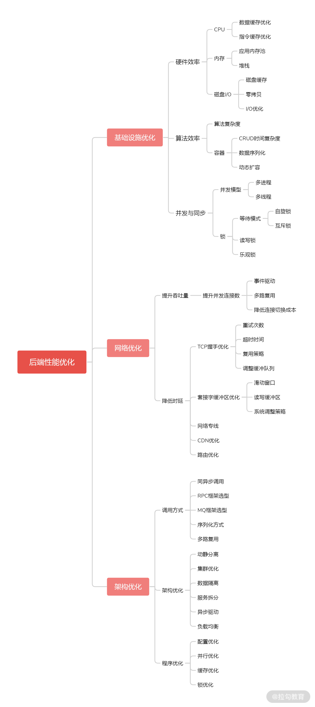
比如，网络层面可以考虑网络专线、CDN 优化；架构层面可以考虑动静分离、集群优化、数据隔离、服务拆分、异步驱动、负载均衡等方案。
以上就是高性能架构设计中的技术点，初中级研发工程师要能知道系统的性能瓶颈在哪儿，以及如何优化，但高级研发工程师，不能只停留掌握技术点上，而是要有自己对技术的理解（例如下面的例子）。接下来，我就通过讲解自己对高性能的认知，帮你了解并培养自己对于技术的思考。
高性能设计中的“道”
你在设计高性能系统架构时，首先是清楚认知系统的硬性性能指标，举个例子。
- 指标需求：我们要保证系统的 TP 99 为 2s；
- 表面意思：系统要保证 99% 的请求的响应时间都在 2s 内；
- 深层意思：对有经验的架构师来说，这样的需求其实是不明确的，任何系统都有自己的承载能力范围，换句话说就是在并发用户数限定范围之内，一定要保证系统的 TP 99 = 2s，例如“我们要保证系统并发数在 100 万用户内的时候，TP 99 为 2s”，对于系统设计者而言，要清楚系统有所能，有所不能。
所以，对一个架构师来说，要设计一个高性能的架构，至少要有以下四个系统设计的思考步骤。
- 明确指标： 比如当系统小于 100 万并发用户时，要保证系统的 TP 99 = 2s 。
- 保护系统： 当系统的并发用户数量超过 100 万，要做到保证有 100 万用户的 TP 99 = 2s ，然后保护系统，并拒绝其他用户的连接请求。
- 用户体验： 为了用户体验，要给系统承载容量外的用户提供优雅的体验，比如服务器排队机制，并附加具体、明确的信息提示。
- 快速扩容： 这一步很容易被一些同学忽略，如今系统的性能指标还有一点就是贵在快速反应，比如能承诺出现流量压力时，可以在 3 分钟内完成扩容，并保证扩容后能承载的并发用户数量的 TP 99 = 2s。
在明确了性能指标之后，高性能架构的落地工作，可以分为以下三个关键技术点。
- 做好系统限流： 通过流量控制来保证系统的稳定性。当实际并发压力超过系统性能设计指标的时候，就拒绝新的请求的连接，让用户进行排队。
- 做好快速扩容： 对于扩容能力，一般要储备额外的计算资源，用于不时之需，也就是事先通过预估流出一部分资源池。
有的同学可能会疑惑，既然有多余的资源为什么不提前扩容呢？这是出于对 IT 成本的考虑，作为系统设计者也要把成本作为系统的设计原则之一。
另一个关键因素是系统的扩容速度。这是在当今互联网软件中非常重要的系统能力之一了，就算架构设计的不够优雅，但如果响应够快，也是能解决问题。
- 做好系统优化： 就是我在上面讲的前后端优化的技术点，我要再补充一点，对系统设计者来说，性能设计要贯穿于系统建设的始终。以一个系统的研发管理过程为例，内容大致包括需求阶段、设计阶段、研发阶段、测试阶段、上线阶段、运行阶段
对于性能设计（不仅仅是性能设计，所有非功能性的设计）要在项目的各阶段都进行考虑，以便根据项目过程的推进随时进行调整和优化。
总结
技术行业发展到今天，很多技术上的问题都不存在挑战了，所谓的高性能架构设计，也仅仅变成了一种标准化的应对流程。
你要做的就是将业务问题，抽象成一个技术问题，比如具体到数据库设计、缓存设计、队列设计、线程设计等技术细节，然后不管你通过什么渠道，Google 也好，问同事也好，或者购买付费知识也好，都能找到技术的应对方案。
而对于面试，你的答题思路应该是这样的：
- 先落实到技术上，比如结合业务场景，识别系统最关键的服务，然后针对性地为关键服务进行性能设计与测试，确保关键服务没有问题，然后为非关键服务提供降级和熔断处理方案。
- 再深化自己对于技术的理解，你要记住，任何复杂问题都可以按时间（系统建设周期）和空间（系统设计分层）拆解为简单的问题，然后逐一攻克，这样你才能有的放矢，这其中体现出来的思维能力才是每一个技术人的安身立命之本。
19 彩蛋 互联网架构设计面试，你需要掌握的知识体系
研发工程师的职业成长路线，基本是初级研发工程师，进阶为中高级研发工程师，提升至架构师，然后再寻求更高的突破。这直接说明我们认同架构师的价值，想要努力成为架构师。虽然目标很明确，但我调研后发现，大多数研发工程师把“成为架构师”当作目标，但却没找到方法。
因为在工作中，不是每一个研发都有机会参与架构设计；很多公司也不会主动去培养你成为架构师。所以，有很多职场人在一家公司工作三年或五年之后并没有多大的提升。
而很多的架构师都是研发自己在机遇巧合下，遇到大项目、参与其中、趟了坑、解决了问题，最终形成自己的知识体系和解决问题的能力之后才成长起来的。那么如果没有这些条件，你还有没有途径成为一名架构师呢？
当然有，在我看来，你要先掌握架构师的知识体系，然后再通过实践进行检验，这样才能逐步成长为一名架构师。

架构师能力模型
很多研发同学经常问我：“成为架构师应该掌握哪些技术？”
在我看来，成为架构师是要掌握一定的知识储备，再经过项目历练，但你更应该通过“知识储备+项目历练”，看自己达到了什么能力，你的能力是否能够匹配架构师这个岗位。
换句话说，你是否具有架构师的能力模式？
我们拿互联网大厂（比如 BAT）的能力模型来对标，从它们对架构师的能力要求来看：能不能覆盖一个领域子方向，也就是能不能作为一个系统的技术负责人？比如交易系统的负责人、商品系统的负责人。换句话说，你能不能把握整个系统的规划、设计、落地，和演进。如果你能独挡这一面，就具备了成为架构师的条件。
那架构师的能力到底由哪几部分组成呢？
- 基础技术架构：这部分是纯技术架构，所有非功能性的技术都是基础技术的范畴。
- 业务架构：在业务场景下对业务需求的抽象。
- 开发技能：这是架构师落地架构的能力。
你要怎么理解这个模型呢？
举个例子，我们在开发时会经历需求分析、架构设计、架构选型、架构落地几个阶段，这几个阶段对架构师的能力要求总结为一句话就是“架构师要把握系统技术”。
- 在需求分析阶段：架构师对于业务架构，要给出一个合理的需求分析抽象模型。
- 在架构设计和架构选型阶段：架构师要充分考虑技术的合理性，制定合理的设计方案。
- 在架构落地阶段：架构师要能指导研发进行落地，并推进项目的执行。
你看，从需求分析、架构设计、到架构选型、再到架构落地，架构师都需要参与，而这些阶段体现出来的需求分析能力、架构设计能力、代码开发能力，最终都会作用在一个系统上，这就是所谓的“把握系统技术”。也就是说，你如果想成为架构师就要做到、做好系统开发各环节的技术把控！
那么在架构师能力模型的指引下，你要掌握哪些知识体系呢？
架构师知识体系
我们以互联网分布式系统架构师的知识体系为例，回顾一下 03 讲中的内容。
分布式系统看起来就像一个计算机。计算机包括五大体系结构（即冯诺依曼结构），它有五大部件：分别是控制器、运算器、存储器、输入及输出。你可以这么理解：一个分布式系统也包含这五大部件，其中最重要的是计算与存储。计算与存储由一系列网络节点组成，每个节点之间的通信就是输入与输出，各节点之间的调度管理就是控制器。

图 分布式架构技术组成
所以，对于从事互联网分布式设计的架构师来说，你可以从以下四个角度来进行知识体系的拆解。
- 存储
存储指分布式存储系统，你要理解什么是分布式存储系统？为什么选型分布式存储系统？以及分布式存储中关注哪些问题？
首先，为了解决数据的水平扩展，要做数据分片，因为分布式系统区别于传统单机系统就在于能将数据分布到多个节点，并在多个节点间实现负载均衡。这种数据水平扩容的操作叫数据分片。
数据分片会涉及分片规则，常见的有范围分片和哈希分片，不同的分片规则就有不同的分片算法，如哈希分片就会涉及哈希取模算法、虚拟桶算法、一致性哈希算法。
又因为数据要分布到多个节点，你还需要数据复制，数据复制就会存在同步复制和异步复制。为了保证数据的可靠性和可用性，增强系统容错，数据复制就会产生副本，副本则是分布式存储系统解决高可用的唯一手段。
而多个副本同步会产生一致性的问题，从而引出一致性问题的分类，如强一致性、弱一致、最终一致，要想解决一致性问题，会涉及一致性问题的协议：如两阶段提交协议（Two-PhraseCommit，2PC）、Paxos协议选举、向量时钟（VectorClock）、RWN协议、Raft协议。
多个副本还会带来主选举，这会涉及分布式锁的问题：多个机器竞争一个锁，当某个机器释放锁或者挂掉，其他机器可以竞争到锁，继续执行任务。为了解决锁的容错性，比如解决双主（脑裂）问题，就会涉及租约机制，租约机制可以解决网络分区问题造成的“双主”问题。
最后，为了衡量副本可用性和一致性，就会引出分布式系统的基础理论 CAP 、BASE，以及 PACELC。
这样一来，我们就梳理清楚了分布式存储的知识体系。可以说，分布式存储是分布式系统知识体系中最基础的理论，也是最复杂的问题。
- 计算
分布式计算就会涉及三个概念：并行计算、分布式计算、云计算。
- 并行计算：同时使用多种计算资源解决计算问题的过程，比如多线程就是一种并行计算；服务集群也是一种并行计算。
- 分布式计算：是从集群技术发展而来，区别在于集群虽然连接了多台机器，但某项具体的任务执行时还是会被转发到某台服务器上，分布式计算则将任务分割到多台服务器上并行计算，然后得到结果。
- 云计算：分布式计算 + 虚拟化技术的综合技术的统称，不同商业公司有着各自不同的定义，通俗来讲就是开发者利用云 API 开发应用，然后上传到云上托管，并提供给用户使用，而不关心云背后的运维和管理，以及机器资源分配等问题。
作为架构师，你要了解分布式领域中的计算模式，如分布式并行计算框架 Hadoop 中的 MapReduce 的设计思想，以及基于流式计算框架 Storm、Spark、Flink 的架构设计方案。
当然对于计算领域，很多公司会设立大数据架构师的岗位，如果你面试的是系统架构师，了解这部分知识体系即可，不用过度聚焦于分布式计算上，不过很多计算框架的设计理念还是很有参考价值的，值得你去学习了解。
- 输入输出
系统架构中的输入输出，是指系统间通信的技术。
其中会涉及一些基础知识，比如网络通信最基础的协议（诸如 TCP/UDP 协议等）；网络 I/O 模型（Blocking-IO，NonBlocking-IO、Asyn-IO），最后是偏应用的知识，需要了解例如连接复用、序列化/反序列化、RPC、MQ 消息队列等。
作为架构师，你要理解高性能的原理，掌握流量的流转过程以及应对方案，比如当请求到达网络设备时，你要依次考虑以下问题：
- 网络设备如何处理流量？这会涉及中断和缓存。
- 操作系统如何处理流量？这会涉及 I/O 模型，select、poll、epoll，以及 I/O 多路复用。
- 应用系统如何处理流量？这会涉及 NIO 的开发，如 Reactor 模式、Netty 框架原理等。
- 系统线程如何处理流量？还会涉及多线程的设计模式。
最后，你还要掌握分布式系统通信的核心技术：RPC 和 MQ。
- 控制器
你可以把分布式系统知识体系中的控制器，理解为系统架构中的调度系统，包括流量调度和资源调度。
- **流量调度（我们常说的流量控制）：**作为架构师就要掌握流量控制的常用方案策略，比如负载均衡、服务路由、熔断、降级、限流等，其实常用的高可用、高性能的解决方案很多都是基于流量上的调度。
- **资源调度：**如果我们将流量调度迁移到服务器的计算资源、存储资源或基础资源上面的话，就会引出另一种基于资源的调度，如 Mesos、Yarn 基于计算资源的调度；HDFS、GlusterFS、Ceph 基于存储资源的调度；Kubernetes、Mesos 基于容器资源的调度（包括计算、存储、网络等综合性的资源调度）。
总的来说，你至少要掌握常用系统调度设计，调度算法与负载策略。举个例子，如果让你对单个服务器的计算资源做调度，你至少要具备设计思路：让集群选举一个主节点，每个从节点会向主节点汇报自己的空闲资源，当请求到来时，主节点通过资源调度算法选择一个合适的从节点来处理该请求。
总结
无论你从事哪个领域的架构设计工作，都要明白作为架构师，一定是技术出身，但是要突破技术思维的限制，向上立足于部门和公司、向下管控系统和研发，站在全局的角度去规划、组织、系统技术的发展。
为了方便你理解，我把学习架构设计知识的思路总结为以下几点：
- 想要学习架构设计知识，可以从自己熟知的领域出发，这样你才有不断的正反馈，从而更有信心，容易理解新的知识。
- 形成知识网络图谱，如今技术错综复杂，各种技术又相互耦合，确实无法简单划分层次，所以我建议你把自己的核心知识梳理出一个脉络清晰的结构图，然后结合已有知识，再逐步将零散的知识点补充到这张网络图谱之上，这样你就拥有了核心知识和扩展知识。
- 养成对技术判断力，针对同一问题有不同方法，不同维度、不同角度的分析和对比。这是为了提升你今后在工作中对技术的领悟力。
结束语 程序员的道、术、势
时间如白驹过隙，经过两个多月的课程更新，到今天，咱们的课程也就正式结束了。
在更新课程的过程中，我看了很多同学的留言，有积极提问题的，比如 blossom、徐力辉同学等，也有分享自己方案的，比如 coder、Reiser同学。很开心，你们能在课程中有所收获。
当然了，在这个过程中我也发现了一个很明显的问题，那就是：作为技术人员，很容易在学习的过程中，纠结于具体的形式（比如案例、代码）。在我看来，相比于形式，思维过程最为重要。 比如我是怎么思考到某个点？有哪些合理或者不合理的地方？哪些能变成你自己的？哪些你只是看个热闹？
你只有真正思考、转化、并积累，能力才能得到提升。
关于结束语
结束语我想了很久，希望能在最后用微薄的能力来帮你深入理解技术人员的职业规划和发展：不仅要关注专业技术（术），还要有自己的分析能力（道），并且要懂得顺势而为（势）。
举个例子，几年前，架构师 A 空降到某互联网大厂做某个系统的技术负责人，当时团队有 5 个核心研发，他们对于 A 的态度有抵触、有观望、有站队，还有左右摇摆。总之，他们表现出了职场老油条各种该有的表现。
那么如果你是架构师兼技术负责人，该怎么驾驭团队呢？A 只做了这几个工作：
- 立规矩：找所有研发谈话，明确告知他们做事的准则和底线，任何人不可以越红线半步。
- 建系统：推进新系统的建设，招聘新人，培养自己的人，并让老人维护老系统，确保新系统在建设的过程中，老系统不出问题，保证业务的正常运行。
- 定节奏：让团队按照新的节奏做事儿，加班制度、值班制度，打破原有的工作节奏，整体提速。
一个季度过后，A 带出了一个富有激情和战斗力的团队，而老团队的人有的改变，也有的离开。
你可能会问，这个故事和“道术势”有什么关系？这不就是一个技术管理人应该具备的素质吗？
并不是，很多事情你看似简单，但其中会有很多思考（认知层）、执行（技术层）和借势（战略层）的操作，不是每一个人都能做好的。
那当你看完这个故事，有没有思考这样几个问题呢？
- 为什么 A 重新“立规矩”就能立下来？
- 为什么 A 说推进“新系统”就能获得老板的同意？
- 为什么 A 说重新“定节奏”就能得到团队的支持？
我就把这三个问题当作这一讲的思考题，欢迎你在留言区发表自己的想法，我们再一起讨论。
接着说回来，作为技术人员的你，一定不要高估辛苦工作的作用，低估判断力的价值。举个不恰当的例子，CEO 一年看起来什么都没做，但他一个判断就可能让整个公司的业务走向巅峰或者没落。
讲了这么多，我想给你一些职场建议。
送给老人的四条建议
- 思考
你要有敏感的思考能力（这里用的是敏感，不是敏捷或敏锐）。因为对于同样一个问题，每个人都有自己的理解方式，不同人由于学历、阅历、经历的不同，对问题的理解深度也会有所不同，所以不是所有人天生就能有敏锐的视角，这个很正常。
但我希望你的思维是敏感的，通过敏感驱动思考，通过思考驱动学习和总结，直至敏锐。这确实需要大量的练习，它也是一个潜移默化的过程，最终你会因为这个习惯受益一生。
- 表达
你要有良好的表达能力，无论是和同事还是领导之间的沟通，这里的沟通并不是指会说话，而是会表达、敢表达、表达准确。
有一点你要注意，表达不是指口才好，而是建立在你充分思考基础之上的分析，而我建议你多学习一下结构化思维，比如《金字塔原理》。相信你会发现表达、汇报、甚至 PPT 功底都会有所提升。
- 惊艳
这一点其实是我对自己的要求，我会暗示自己，当作一件很有价值的事情时，评估的方式就是要惊艳到自己。
因为只有惊艳到自己，你做的事情才会超出别人的预期，超出领导对你的期望。领导要的可能是 1，你要尽力做到 1.2，甚至 1.5，因为 1 谁都能做到，而超出的 0.2 / 0.5 就是你与其他人拉开的差距。事事有回应，件件有着落，回应和着落都要超出预期。 千万不要当职场老油条，因为懒惰会变成习惯，最终会影响你的判断力。
- 认知
工作几年的职场老人，一定要对“地位、格局、方法论、手段”，这些看似很空的词有明确的认知，你要让这些极空的词儿变得很具体。举个例子，比如一道面试题“什么是架构设计？”，作为一名合格的职场技术人，至少要有以下的认知。
- 和一面解释：架构就是系统设计，比我在做 A 项目时，考虑到问题 X，我的解决办法是 Y。
- 和二面解释：架构就是业务发展中将系统变得有序，比如架构设计就是合理的组织系统、模块、组件，让它们更加有序，为的是让系统有能力快速响应（需求/用户/市场）变化。
- 和部门总监解释：架构即管理
送给新人的四条建议
对于职场新人，我也有几条建议送给你。
- 要有计划，有积累：在寻求公司价值的同时，要对自己个人未来的价值有追求和计划。
- 学习一些时间管理四象限：重视重要不紧急的事情，新人不要觉得时间多就随意挥霍，你的价值才能决定你的圈子和你的人脉。
- 要自己定位自己：不要让别人或你的上级定位你，虽然屁股决定脑袋，但你对自己的定位会决定你屁股的位置。
- 要善于归纳总结和思考：这会让你和其他人拉开差距。
讲到这儿，我想送你一句话：作为技术人，要在职业发展过程中，让自己体会到这样的三个阶段，“做下不做上”“做下也做上”“做上不做下”，相信在看完今天的内容，你应该会对这几句话有新的感悟。